开篇先搭起排球的框架
认识排球：从规则到配合
鼠鼠排球指南 · 开篇
一块场地、一张球网，再加上几条限制，排球的样子就慢慢出现了。
刚开始打排球时，我们大概都经历过这样的场面：球飞过来了，三个人同时喊“我的”，下一球却又谁都没接；好不容易把球救起来，队友追了半个场，还是只能勉强打过网。看比赛也是一样，扣球看得很过瘾，可解说一说“轮次”“副攻牵制”“后排插上”，就有些跟不上。
这些词不用一次背下来。我们先把排球拆开，再一件一件装回去：有了球场和球网，比赛要做什么？有了击球限制，为什么需要技术？有了六个人，为什么还需要分工和配合？
这篇先从场地、球网和一次次来球出发，把排球的框架搭起来。再走进比赛流程、球员分工与场上规则，看懂六个人怎样把一分球接着打下去。以后再学技术、战术，或是认识一位球星、一种打法，都能知道它在这场比赛里起什么作用。
读前想一想
每一球都必须打满三次才能过网吗？
后排二传跑到网前，就变成前排队员了吗？
副攻没有拿到球，这次进攻准备就白做了吗？
暂时拿不准也没关系，带着它们往下看，文末再对答案。
本篇目录
球场与比赛目标
把球打过去之后，我们希望发生什么？
先摆上一块长18米、宽9米的场地，中间拉起球网，两边各有一个9米见方的半场。最基本的目标就出来了：让球在对方场内落地，同时守住自己的场地。对方把球打出界，或者出现犯规，我们也能得分。
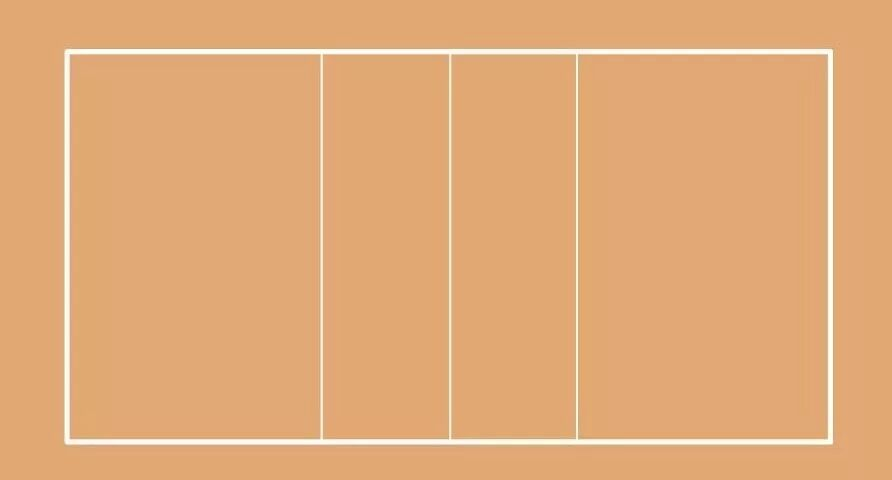
图1｜先看场地：最外侧围成球场的是边线、端线；正中间是中线，旁边两条是进攻线，也就是常说的三米线。整块球场18×9米，每条进攻线距中线3米。图源：微信公众号闪电排球。
一分球从发球开始。球在双方之间来回，直到落地、出界，或有人犯规，这一回合就结束了。每个回合都会产生一分，所以发球、进攻、防守，每一环都可能改变比分。
但很快我们就会发现：球过网了，不等于这球处理得好。轻轻送到对方最舒服的位置，人家就能从容组织进攻；打得对方东奔西跑，我们才更有机会接着占上风。
于是，比赛从“别让球落地”，慢慢变成了“让对方不好处理，同时给自己留出机会”。
击球限制与基本技术
球来了，为什么不能先抱住，再慢慢找队友？
排球允许我们击球，却不能把球接住再抛出去。来球又不会每次都乖乖飞到眼前：有的很低，有的很快，有的飘着变方向，有的已经冲向场外。
想把这些球处理好，就需要不同的办法。
低一些、快一些的来球，常用垫球控制；到了合适的高度，可以用传球把它送到队友需要的地方；有了进攻机会，就用扣球、吊球等方式争取得分。对面准备进攻，我们在网前拦，在后面防。发球负责开启一个回合，也可以一上来就给对手制造麻烦。
发、垫、传、扣、拦、防，这些熟悉的名字，都是为了解决场上的具体问题。它们也不是一套只能照着执行的动作清单：紧急时刻用脚救起一球，同样可能是合法的好球。
对我们来说，学技术可以先抓住一个实在的标准：这个动作，能不能帮我把球处理到想要的地方？ 球不落地是第一步，能让队友舒服地继续打，才是下一步。
三次击球与进攻组织
既然一下就能过网，为什么还要传来传去？
再加上一个重要条件：每队最多用三次击球把球送过网，拦网触球另计。
假如对面发来一球，我们直接垫回去，当然可以。可这样的回球往往没有多少威胁，对方接稳之后，就能好好组织一次进攻。既然还有处理机会，为什么不先把自己的进攻准备得更好一点？
于是，常见的衔接就出现了：第一下先控制来球，第二下把球送到合适的位置，第三下由攻手完成进攻。
这就是大家常说的“接起—组织—进攻”。接对方发球的第一下，通常叫接发球或一传；接对方扣球等进攻，通常说防守。组织进攻的传球常由二传完成，但场上遇到情况，其他人也要能补上。
三次机会，不是三次任务。 有合适的机会，可以提前把球打过去；球太难处理时，也可以先安全地送过网。我们追求的是把这一球打好，不是机械地凑够三下。
再看开头那个场面：球是救起来了，可队友只能追着跑。问题往往就在这里——前一下只是把球碰起来，没有给后一下留下舒服的处理条件。
从这时起，每次碰球都可以多想一步：我把球送到这里，下一位队友会好打吗？
六人协作与轮转
人多了，为什么有时反而更乱？
六人制排球，每队同时有六个人在场上。照顾的范围更大，进攻的选择更多，互相之间也就更需要说清楚：谁接这一区，谁来组织，谁准备进攻，球被拦回来时谁保护。
不少失误就出在这里：两个人都以为对方会接，或者两个人都以为该自己接。所以，一句及时的“我来”，也是配合的一部分。
除了分工，还有轮转。先记住一个时机：接发球队赢下这一分、取得发球权时，全队按顺时针方向轮转一个位置；发球队继续得分，就由原来的队员继续发球。
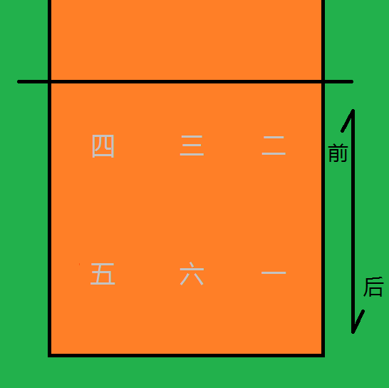
图2｜面向球网，前排从左到右是4、3、2号位，后排是5、6、1号位。数字表示轮转位置，不能直接当成主攻、二传等角色的固定座位。图源：微信公众号闪电排球。
轮转会改变队员这一轮的前后排身份，也影响这一轮可以怎样进攻、怎样拦网。这里有三个容易混在一起的概念：现在站在哪里、这一轮是前排还是后排、承担什么任务。
比如，二传这一轮是后排队员，仍然可以跑到网前组织进攻。但跑过去之后，他还是后排队员，不会因此获得前排队员的拦网资格。前排队员退到后面接球，也仍然是这一轮的前排队员。
所以，三米线能帮助我们认出场地的前区和后区；一名队员这一轮的前后排身份，则要看轮转位置。先分清这两件事，后面很多规则就不容易绕晕。
接回我们平时打的小轮转
本社日常使用的小轮转是：前后排变换，发球按照正常轮转执行，后排二传插上，不进行跑位。
这里的“不进行跑位”，说的是不进行专业阵容那套战术换位；接球、传球、助跑、保护所需要的正常移动，当然仍然要做。具体站位和衔接，会在第2章的2.2节《轮转、站位与跑位》展开。
位置分工与连续配合
有六个人，是不是每个人都做一样的事？
刚开始打球，大家什么都试一试，很有必要。随着配合越来越多，任务也会逐渐分得更清楚：有人传球稳定，适合组织；有人接发扎实，能接着去进攻；有人起跳、出手快，能在中间打出快攻。
看正式比赛时，常见的位置分工可以先这样认识：
| 位置 |
先抓住的主要任务 |
| 二传 |
组织进攻，把来球变成队友能打的进攻球，并选择传给谁。 |
| 主攻 |
常在左翼进攻，也常承担较多接发球任务，要把接球和进攻连起来。 |
| 副攻 |
参与中路快攻和牵制，并承担大量移动拦网任务。 |
| 接应 |
常在右翼进攻，也承担拦网、防守等任务；具体分工随队伍打法变化。 |
| 自由人 |
加强后排接发球与防守，替换后排队员上场，仍计入场上的六个人。 |
先认识这些常见角色，是为了看清比赛。我们日常打球，可以根据人数和水平安排分工，不必急着照搬一支专业队的完整阵容。
而且，分了位置，也不是完成自己那一下就可以休息。主攻接完一传，还要赶紧准备进攻；二传把球传出去，也要准备保护；其他队员看到攻手起跳，要想到球被拦回来之后怎么办。
副攻没有拿到球，也未必白忙了一趟。如果这一球他确实能打快攻，对方就需要留意他，边路的队友可能因此更好打。牵制的底气，就在于二传随时有可能把球传给他。
球最后由一个人扣下去，机会常常是几个人一起准备出来的。
时间、空间与战术选择
对面已经等着拦了，我们还能怎么办？
假如每一球都高高传到同一个地方，对方很快就会提前到那里，排好拦网，后排也站好防守位置。攻手再用力，也可能越打越难受。
要改变这个局面，就得想办法让对方来不及，或者顾不过来。
加快攻传配合，可以压缩对方判断和移动的时间；把进攻点拉开，可以增加对方赶过去拦网的难度；让中间、两边乃至后排都能形成威胁，二传就有更多选择。
快攻、拉开、交叉、梯次，这些战术以后会分别讲。现在先抓住它们共同要解决的问题：怎样让进攻更好打，怎样让对方更难防。
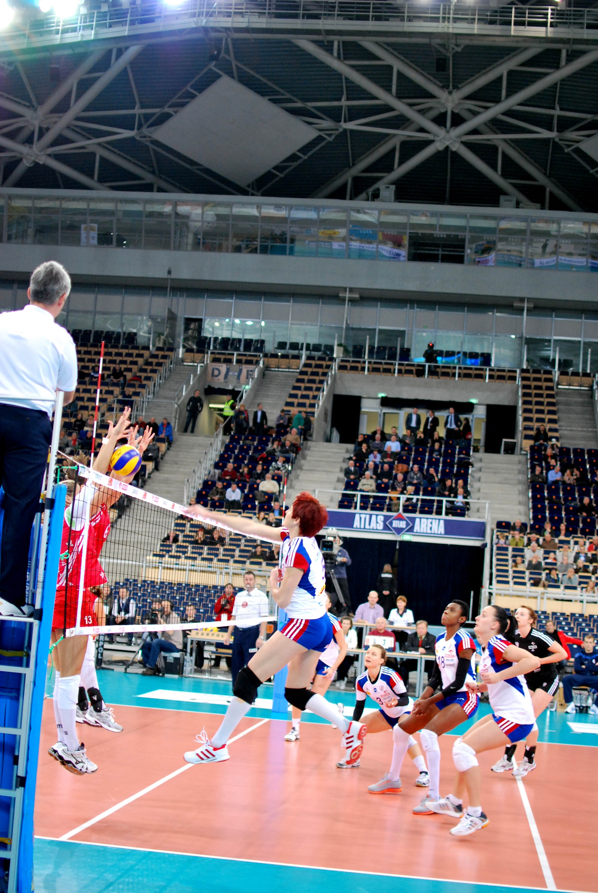
图3｜别只看空中的球。网前有人攻、有人拦，攻手身后的队友也在准备接应。观察他们的位置和准备动作，能看到一球里更多的配合。摄影：Zorro2212，2012；CC BY-SA 3.0。
战术也要落在眼前的球上。一传接得舒服、队友都准备好了，可以有更多变化；来球已经冲到场外，就要先找到能处理的人，把这一球接下去。会打配合，也包括知道什么时候该用简单、可靠的办法。
从看见动作，到读懂比赛
把这些部分接起来，我们就能换一种方式看球了。
以前看一次扣球，可能只注意“打得真重”；现在可以往前看两下：这一传让二传有什么选择？副攻在做什么？为什么球最后传到了这里？再往后看一下：进攻没打死，队友有没有准备好下一次防守和反击？
同一个回合，也可以分两遍看：先跟着球认出接、传、扣，再选一个没有碰球的人，看他怎样助跑、牵制或保护。把这些准备放回最后一扣之前，配合就开始有了具体的样子。
以后再认识不同教练的打法、不同年代的比赛，就会发现排球一直在变化：规则会改变场上的选择，队员的特点会影响分工，对手的应对又会推动新的办法出现。技术、战术、人物和历史，也就慢慢连成了一件事。
我们不需要一开始就分析得很深。下次打球，先多想一句“我这一下能给队友留下什么”；下次看球，先多看一眼没有碰球的人。很多原来觉得乱的地方，就会逐渐有了头绪。
读完，带走这几件事
- 目标：争取让球在对方场内落地，同时守住自己的场地。
- 技术：用规则允许的方式，把不同的来球处理好。
- 组织：用好击球机会，给后一下做好准备。
- 分工：让六个人知道自己这一球该做什么。
- 配合与战术：一起给队友创造机会，也一起应对对手。
自测回看
每一球都必须打满三次才能过网吗？
解答： 不必打满三次。 三次是球队击球的上限，拦网触球另计；有机会可以提前过网。
后排二传跑到网前，就变成前排队员了吗？
解答： 不会。 后排二传跑到网前，仍然是这一轮的后排队员。
副攻没有拿到球，这次进攻准备就白做了吗？
解答： 不一定。 有威胁的快攻准备可能帮助队友创造机会，没有拿球也可能有贡献。
下一次上场，可以先做一个很小的尝试：处理完自己的球，再多跟一步，看看队友需不需要你。读懂排球，常常就从这一步开始。
阅读来源与图片说明
本文供社团内部学习，规则讲解沿用本指南约定的2021—2024版规则基础；参加具体赛事时，以该赛事规程为准。
鼠鼠排球指南第1章
第1章 认识排球
先把一分球看完整，再把六个人连起来。
社团比赛打到一半，你刚弄清这一分加给谁，下一球已经发出来了。场上有人接球，有人跑向网前，也有人始终没有碰球，却一直跟着移动。如果只盯最后一扣，很容易漏掉前面怎样组织，也看不见身边的人在准备什么。
这一章先陪你跟完一分球，认清一分、一局和一场的关系，再认识二传、主攻等常见角色，最后把有球与无球的任务接起来。以后听队友说“保护一下”“这球谁传”，就能把这些话放回正在发生的回合里。
读前想一想
记分牌写着“局分1∶1，本局18∶20”，队友却说“我们已经落后两局”。你会怎样解释这两组数字？
看转播时看不清球衣号码，怎样沿着一分球里的任务，初步认出二传、主攻和副攻？
本方扣球被防起，对手接着反击回来。把这段过程连起来，本方队员的准备通常要经历哪几次转换？
1.1 排球比赛概览
比分牌不停跳，场上的攻守也在一分一分地转换。
第一次在场边帮忙记分，很容易忙不过来：刚看清球落在哪边，队友已经准备发下一球；这一局打到24∶24，大家又说还得接着打。看起来只是球飞来飞去，里面却有一套清楚的流程。
我们就跟着一场比赛走一遍。先认一分球怎样开始和结束，再看一局、一场怎样组成。以后看比赛或自己上场，这条线都用得上。
阅读路线：一分球的过程 → 攻守怎样转换 → 下一球谁发 → 一局与一场。 已经熟悉赛制的同学，可以重点看中间的攻守衔接。
读前想一想
本方扣球被防起，对方又组织一次进攻，这一分结束了吗？
发球被对方接起后，双方又打了两轮才由本方扣球得分，这一分能记成发球直接得分吗？
按常见25分、领先两分的赛制，25∶24能结束一局吗？
本节目录
1.1.1 一分球的开始与结束
先别急着看谁扣得最重：这一分从哪里开始？
从发球开始。裁判鸣哨，发球队员把球发过网，接发的一方开始处理。球只要还在合法地来回，双方就得接着打，直到落地、出界或出现犯规，分数才有了归属。
假设我们看这样一球：甲队发球，乙队接起，传给攻手扣过去，球落在甲队场内。乙队拿到这一分。换一个结尾，如果乙队扣球没碰到甲队队员，直接飞出界外，这一分就归甲队。
所以，看回合结束时，先认球落在哪里，再看之前有没有触球或犯规。打出界不一定总是进攻方丢分——球碰到对方拦网后飞出界，结果就不同了。具体判断，后面的2.1节会配场景讲。
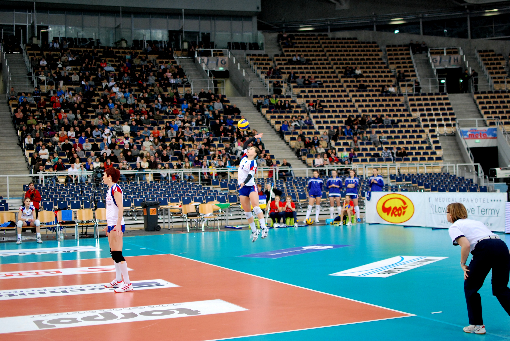
图1｜一次回合从发球开始。图为Courtney Thompson发球实拍，队友也在准备后续任务。摄影：Zorro2212，2012；CC BY-SA 3.0。
1.1.2 发球之后，两边各忙什么
发球队把球发出去，任务还没结束。网前的人准备应对进攻，后排的人进入防守；发球队员也要回到自己的防守任务中，不能站在场外欣赏刚才那一发。
接发球队则先想办法把来球控制住。球接得顺，二传就能从容组织，攻手也更容易准备；接得吃力，队友就要先帮忙把球处理下去。
发球由此有了两种很直观的作用：直接让对方接不起来，可以马上得分；即使对方接起来了，把一传冲乱、让对方只能勉强回球，也是在为本队争取机会。
不过，后面又打了好几次才赢下这一分，统计上就不能全算发球直接得分。我们先认清发生了什么，再看数字在记什么。
1.1.3 接起、组织与进攻
为什么球接起来之后，还要传一下？
因为“能打过去”和“能好好进攻”之间，往往还差一次准备。
常见的衔接是：第一下把来球控制好，第二下送到攻手方便击球的位置，第三下完成进攻。大家常说的接起、组织、进攻，就是在讲这三步。
接对方发球的第一下，叫接发球，也常叫一传；接对方扣来的进攻球，常说防守。负责组织进攻的人通常是二传，但球把二传带跑了，或者二传已经处理了第一下，其他队员也要能够接着组织。
三次是球队击球的上限，合法拦网触球另计。有好机会，一下或两下就过网也可以；来球很难，先把球安全送过去也可以。用三次组织，是为了把机会准备得更好，用不着为了凑够三下，反而把能打的球处理乱了。
看这一段时，试着把注意力往前移：攻手最后扣得舒服，前两下给了什么条件？攻手只能追着球打，又是从哪里开始吃力的？
1.1.4 对方防起来，这一分就继续
排球的有趣之处，就在这里：我们刚组织好一次进攻，对方也可能把它救起来，再把球打回来。
对方攻过来时，网前队员拦网，后排队员准备防守。防起来以后，又得有人组织、有人准备进攻，队伍从防守转入反击。一次扣球没结束比赛，全队就接着做下一件事。
还有一种容易忽略的场面：本方攻手扣球，球被对方拦回来了，谁来接？这就需要进攻保护。攻手身后的队友提前准备，给被拦回的球再留一次处理机会。
把这两种情况认清：对方进攻时，我们准备防；本方进攻时，我们也准备保护。球还在打，六个人的任务就一直在接着变。
1.1.5 回合结束，下一球谁发
回合赢下来的一方，获得下一次发球。
如果甲队本来就在发球，又拿到一分，那么仍由原来的队员继续发。如果甲队接发时赢下这一分，取得发球权，就要按正常规则轮转，由轮转后该发球的队员发。
判断时，可以先问一句：“刚才是谁发的？”接着再看发球权有没有换边。这样就不容易把“得了一分”和“该轮转了”混成一回事。轮转次序、站位和本社小轮转，我们会放在2.2节一起讲。
这一分的结果，也能先粗看成几类：进攻得分、发球直接得分、拦网得分，或者对手失误、犯规送分。球星扣了多少分很好看，球队总分还得把其他来源一起算进去。
1.1.6 从一分到一局，再到一场
常见正式室内六人制比赛采用五局三胜：先赢三局的一方赢下比赛。前四局每局先到25分，并至少领先两分；第五局决胜局先到15分，同样要领先两分。
因此，24∶24以后还要继续，26∶24可以结束，25∶24则还不行。决胜局14∶14也是这个道理。
校园比赛为了安排时间，常改用三局两胜，也可能对决胜局分数、封顶分等另作规定。参加比赛前，先看本次规程，别把上一次比赛的办法自动带过来。
看记分牌时，要分开两种数字：当前这一局的比分，以及双方已经赢了几局。大屏显示“局分1∶1、当前18∶20”，意思是两队各赢一局，正在打的这一局有一方暂时领先，还不能据此判断整场已经分出胜负。
记分牌读法｜自编教学示例
| 显示项目 |
示例数字 |
意思 |
| 已赢局数 |
甲1—乙1 |
双方各赢一局。 |
| 当前局比分 |
甲18—乙20 |
这一局还在进行，乙队暂时领先。 |
这两行分别记录局数和本局分数，读的时候先看清栏目。
比赛中还会出现暂停、换人和换场。暂停给队伍一点时间沟通，换人可以调整人员与任务；换场则让双方到另一边继续比赛。这些中断有各自程序和规则，第2章再细讲。此时先知道：暂停回来、人员变化以后，大家仍要接着认清谁发球、谁组织、自己做什么。
1.1.7 读完，先记住这条线
发球开始，接起组织，进攻与拦防不断衔接，回合结束后加分，再准备下一球。 一分一分组成一局，一局一局组成整场。
先能跟住这条线，再去看二传选谁、对方怎么拦、教练为什么换人，比赛就会越来越有意思。
自测回看
本方扣球被防起，对方又组织一次进攻，这一分结束了吗？
解答： 没有，回合仍在继续，双方正在转换攻守。
发球被对方接起后，双方又打了两轮才由本方扣球得分，这一分能记成发球直接得分吗？
解答： 不能。发球可能给后续创造了机会，但这一分的直接得分事件是本方进攻；发球直接得分与发球造成的后续优势要分开认识。
按常见25分、领先两分的赛制，25∶24能结束一局吗？
解答： 不能，还要继续，直到有一方至少领先两分。
下次看球的小任务
连续看三分，每分只记“谁发球—怎样结束—谁得分”。熟悉以后，再多看一步：进攻之前，前两下把机会准备得怎样？
参考与继续阅读
1.2 球员位置与基本职责
传球、接发、快攻、右翼进攻和后排防守，逐渐形成了我们熟悉的位置分工。
看球时很容易产生一个印象：主攻负责扣，二传负责传，自由人负责接。真到场上一看，主攻刚接完一传又去助跑，二传传完球还在跟进，自由人也会赶过去补传。这些名字，到底在说什么？
我们先抓住一点：角色是在全队配合中承担的主要任务。一名队员这一球要做的事，往往不止碰球的那一下。
阅读路线：分清几个“位置” → 认识五种常见角色 → 放回同一回合看衔接。 这篇以正式比赛常见分工帮助大家看球，本社怎样安排，仍要结合到场人员和实际打法。
读前想一想
主攻站到后排接球，就不再是主攻了吗？
自由人上场，是在原有六个人之外再增加一人吗？
副攻在本方进攻和对方进攻时，最常接上的两类网前任务分别是什么？
本节目录
1.2.1 角色与轮转位置
主攻、二传与1—6号位，分别说明什么？
主攻、二传等名称说的是队员在全队中的主要分工；1—6号位则用于说明轮转次序和场上的方位。队员转到后排，主要角色不会因此改变，但这一轮的进攻与拦网权限会有所不同。
站在本方场内面向球网，前排从左到右是4、3、2，后排是5、6、1。发球之后，队员会按任务移动：二传赶去组织，攻手准备助跑，接球者和其他队友衔接下一步。轮转位置与这一球实际要去哪里，需要连起来看。
什么时候轮转、发球瞬间怎样站，以及本社小轮转怎样执行，2.2节会具体展开。
图1｜前排从左到右4、3、2，后排5、6、1。先认方向和轮转位置，再看队员角色。图源：微信公众号闪电排球。
1.2.2 二传：把来球组织成进攻
二传最醒目的动作是传球，真正要完成的是组织进攻：赶到来球附近，把球送到队友来得及、打得舒服的位置，再根据队友准备和对方拦网选择传给谁。
如果攻手喜欢在某个高度击球，二传就得和他配合好高度、距离和时机；如果一传已经偏出去了，就要先处理眼前的困难，找到可靠的进攻办法。传球既有手上的控制，也有对场面的判断。
所以，看二传时别只盯球漂不漂亮。可以多看两眼：他出手之前赶了多少路？当时有几名队友已经准备好？这些条件会影响他的选择。
二传也要防守、保护和处理第一下。一旦他已经接了球，队友需要接过组织任务。别人临时补传一次，是配合中的补位，不代表这支队伍的专职二传换了人。
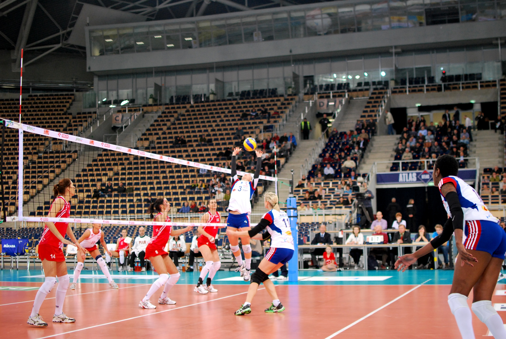
二传在来球下方组织传球，周围队友准备接上进攻。摄影：Zorro2212；CC BY-SA 3.0。
1.2.3 主攻：把接发和进攻连起来
主攻常在左翼参与进攻，也经常承担较多接发球任务。以朱婷为例，强攻得分很醒目，接发与防守同样是她的工作。
来球朝他飞来，要先把一传接好；球送出去之后，又要赶紧准备助跑，争取成为二传能选择的进攻点。这两项任务一前一后，接得太吃力、回到进攻准备太慢，都可能影响这一球的组织。
主攻还常遇到调整球：一传不到位，球被高高送向边路，对方拦网也已经准备好。这时要靠线路、打手、吊球等处理争取机会，困难时还要尽量减少直接失分。
“主攻”里有个“攻”字，却包含接发、防守、拦网和进攻的连续工作。最后一扣之前，他可能已经忙了好几步。
1.2.4 副攻：中间的快攻与移动拦网
副攻常在中路打快攻。攻手和二传配合紧凑，让对方少一点判断和移动的时间。要打成这种球，副攻需要及时准备，二传也得送得上，前一下来球还要给他们留下条件。
球最后没有传给副攻，他的准备也值得看。如果这一点确实能打，对方就得留意中间，边路队友可能因此得到更好的进攻条件。牵制怎样发生，后面的战术章会用连续画面细讲。
到了对方组织进攻时，副攻又有大量移动拦网任务：关注对方组织，在中间与两侧之间移动，和边拦队员配合。看副攻不能只数扣了几球，还要看他怎样赶到拦网位置、怎样接上全队防守。
这也解释了为什么副攻打起来常常很忙：本方进攻要及时准备，对方组织又得赶着拦。一次任务结束，下一项很快就来了。
1.2.5 接应：右翼进攻与全队任务
接应常在右翼参与进攻，还承担拦网、防守等任务。站在本方场内面向球网，右翼就是右手边；转播镜头换个方向，画面里的左右会变，别只凭屏幕上的位置认人。
在常见5-1阵容中，接应和二传沿轮转次序互为对角。接应到了后排，也可以按规则参与后排进攻，为球队提供新的选择。这些安排会在2.3节展开。
有些队伍给接应安排很多进攻，接发负担较轻；也有队伍让接应承担更多接发。看具体比赛，要认清这支队伍怎样分工，不能用“接应永远不接一传”作定义。
同样，接应扣完球也要接着准备。他与本方拦防、保护、反击的关系，并不会因为进攻任务重就消失。
1.2.6 自由人：把后排处理接稳
自由人最容易从球衣颜色认出来。他替换后排队员上场，场上仍然是六个人。正式比赛里常见自由人替换转到后排的副攻，这是常见安排，规则并没有把替换对象限定为副攻。
自由人的主要工作是接发和防守：把来球控制住，让队友能够继续组织。二传处理了第一下时，自由人也可能承担补传任务。看他除了救起几个漂亮球，还要看准备位置、移动、沟通，以及送出去的球是否方便队友接着打。
在本指南采用的FIVB规则基础下，自由人不能发球、拦网或试图拦网，进攻也有专门限制；前区上手指传后，队友怎样完成进攻同样有规定。2.1节会给便查说明，先别把它记成“自由人不能传球”。
自由人加强后排，也需要队友一起接好责任。两个人中间的球怎样交接、谁准备补位，都应提前说清。
1.2.7 把五种角色放回一球里
假设主攻接起对方发球，二传到位组织，副攻准备快攻，接应和另一名主攻也准备进攻。球传到边路，有人起跳扣球，其余队友转入保护；球被对方防起来，大家又开始准备拦防。
这时再看，角色的意义就清楚了：主要任务分得开，动作才能接得上；球一旦偏离预想，又需要有人及时补位。
刚开始参加社团，不用急着把自己锁进某个位置。先尝试接、传、攻、防，再在配合中找到擅长的任务。认识专业比赛的分工，可以帮我们学会观察；日常比赛则先把这六个人的事安排清楚。
1.2.8 读完，带走这几件事
二传组织，主攻常把接发与左翼进攻相连，副攻兼顾中路快攻和移动拦网，接应常承担右翼进攻，自由人加强后排处理。每个人都有主要任务，也都需要接上队友。
看球认角色以后，继续问一句：他这一球还要做什么？
自测回看
主攻站到后排接球，就不再是主攻了吗？
解答： 仍然是主攻，角色与本轮前后排身份是两回事。
自由人上场，是在原有六个人之外再增加一人吗？
解答： 不是，他替换后排队员，场上仍为六人。
副攻在本方进攻和对方进攻时，最常接上的两类网前任务分别是什么？
解答： 本方进攻时准备中路快攻，并用真实的进攻威胁参与牵制；对方组织时从中间向两侧移动，与队友完成拦网。两类任务常在一个回合中连续转换。
下次看球的小任务
选一名容易认出的主攻或自由人，跟两个完整回合。记下他除了最显眼的那次触球，还承担了哪两项任务。
参考与继续阅读
1.3 有球与无球的团队配合
扣球最显眼，让这一球接着打的人，却常常没有碰到球。
复盘一分球，大家很容易只记得最后一下：“这球没扣死”“一传又飞了”。可把目光往前移几秒，就会发现有人一直在准备助跑，有人在让出传球通道，还有人早早站好，等着接被拦回来的球。
球一次只能到少数人手里，六个人却都有事可做。理解这些连续的任务，才能知道一分球是怎样一起打出来的。
阅读路线：先学看一个人 → 接发和组织的衔接 → 进攻保护 → 拦防与反击 → 回到自己的下一步。 不用一口气记住全队站法，这次先看清一项任务怎样接向另一项。
读前想一想
本方攻手扣球，队友准备接被拦回来的球，这叫什么？
队友准备扣球，其他人全挤到他脚下，保护就更充分了吗？
一名队员整分没有触球，能直接认定他没有贡献吗？
本节目录
1.3.1 同一回合，看两遍
没碰到球的人，应该看什么？
先在脑中放这样一球：对方发来，主攻接起，二传组织，球传到边路，攻手扣球被拦回。有人及时把球救起，队伍又组织了一次进攻。
第一遍跟球看，我们能认出谁接、谁传、谁扣、谁救。第二遍只看主攻，就会看到更多：他接完一传有没有及时准备进攻？球传给别人以后有没有跟进？拦回球出现时，他在什么位置？
一次只追一个人，反而容易看清。先问他这一刻承担什么任务，再看实际动作，最后看这项动作怎样帮队友接着打。有人没有碰到球，可能仍然完成了很重要的准备。
1.3.2 第一下之前，配合已经开始
对方准备发球时，我们这一边就要开始沟通：谁主要接哪一片，两人中间的球怎样处理，二传准备去哪里。
比如，球落向两人之间，如果两个人都等对方，球会漏；两个人都冲，又容易撞。赛前有常规分工，来球时再及时喊“我来”，另一人就能转去补位或准备下一项任务。喊话要给队友留下反应时间，等球快落地才喊，往往已经来不及。
没有接球的人也得看清通道。球飞向一传队员时，别横穿到他面前抢着帮忙；二传正在赶球时，留出他移动和出手的空间。要救险，就及时说明自己要接过哪一下。
这些事看起来不起眼，却能少制造很多本来不必要的困难。配合从来球之前就开始了。
1.3.3 把球送出去，人还要接着动
社团里常见一个场面：一传接得不错，接球的人却站在原地看球，等二传想传给他时，才发现他还没准备好。
球碰完了，任务还没有完。需要进攻的人要尽快接上助跑准备；负责组织的人要赶到能处理球的位置；其余队友则根据这次进攻准备保护。
再换一种情况：二传被迫接了第一下。如果大家还照原计划等二传传球，组织就会断。此时需要约定的补传者及时接过第二下，一句“我传”也能帮助其他人继续准备进攻。
所以，碰球之后可以马上问自己一句：接下来轮到我准备什么？ 来球顺，按熟悉的分工衔接；来球偏，先把眼前缺的那一环补上。
这不要求大家一上来打复杂战术。先减少“传完就停、接完就看”的空当，很多球就会顺起来。
1.3.4 有人进攻，队友准备保护
攻手已经起跳，其他人还忙什么？
最直接的一件事，是准备处理被拦回来的球。
本方扣球时，对方拦网会把球挡回，反弹可能很快，落点也会变化。队友提前跟进、降低重心、准备移动，才有机会把球重新接起。这叫进攻保护。
保护要和这一球的进攻位置连起来。球传到左边，全队的准备就要考虑左边攻手身后与附近的拦回球；进攻换到另一边，保护也要随之调整。靠近的人处理近处，稍远的人照顾更远的反弹与后续机会，具体怎样分仍按队内安排。
大家同时挤到攻手脚下，远处就容易空；都退得很远，近处的反弹又来不及接。先知道自己照顾什么，再根据攻手、拦网和球的位置调整，比看到扣球才临时冲过去可靠。
保护也不是等球被拦才开始。攻手准备出手时，队友就应进入准备。球顺利打过了，大家接着准备拦防；球被拦回了，就争取再组织一次。一次扣球没有得分，队伍仍能把这一分接着打好。
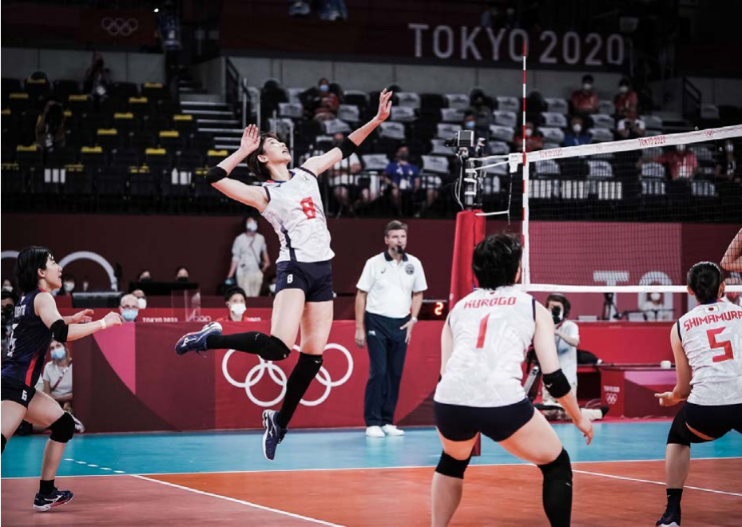
图1｜左侧深色球衣的自由人与白衣队友都在准备。跟一次完整回合时，也留意这些还没有碰球的人。图源：FIVB规则书，印刷79页。
1.3.5 拦网、后排防守与反击接成一套
球到了对方那边，任务又变了。网前队员准备拦网，后排队员准备防守，大家要把照顾的路线接起来。
如果网前约定重点封某条路线，后排就要知道自己的重点在哪里；拦网来不及合上，后排也要根据眼前情况调整。先说清本队怎样配，才能判断一个人有没有到位。不能看见某处丢了一球，就认定站得最近的人必须负责。
防起来之后，后排还要把球尽量送到方便继续处理的地方；组织者赶向来球，攻手从防守准备接回进攻准备。球救得吃力，能补传的人就补上，其他人继续给他可用的选择。
从“对方扣球”到“我们反击”，其实只有很短一段时间。队友之间越熟悉，越能少一点等待：有人处理第一下，就有人准备第二下；有人组织，就有人准备进攻和保护。
这也是为什么只看最后一扣，会漏掉一大半内容。真正把反击打起来的，是前后几项任务连得上。
1.3.6 评价一分球，先把过程说具体
现在回到开头那次拦回后救球。只说“救得真好”当然没错，还可以再多看一点：是谁提前准备，让这次救球有了可能？救起以后，谁及时接过组织？攻手有没有重新准备？
夸奖可以落到动作：“你扣球前已经跟到保护位置，所以拦回来还接得到。”建议也可以说具体：“你接完一传后停住了，这次二传就少了一个能传的点。”这样的反馈，比一句“多跑一点”更容易照着改。
画面看不到、分工不知道的时候，先把问题留下来问队友。一次没碰球，不能直接判断没有作用；一次让球，也不能仅凭结果说对方不认真。把实际任务和动作讲清楚，讨论才会帮助下一次配合。
1.3.7 读完，带走一个习惯
有球时处理好这一球，无球时给下一球做好准备。 接完还要准备，传完还要跟进，队友进攻要保护，对方进攻要拦防，防起来又接回组织。
不必每次都把六个人分析一遍。先选自己的一项衔接，把它接顺，整队就能少一个停住的地方。
自测回看
本方攻手扣球，队友准备接被拦回来的球，这叫什么？
解答： 进攻保护，与防对方进攻的任务分开认识。
队友准备扣球，其他人全挤到他脚下，保护就更充分了吗？
解答： 不是。近处的拦回球和弹得较远的球都要有人照顾。队员应按分工、攻手与拦网的位置准备保护，既别全挤在近处，也别都退得太远。
一名队员整分没有触球，能直接认定他没有贡献吗？
解答： 不能，要看他的准备、保护、牵制、沟通等实际任务和动作。
下次上场的小任务
给自己加一句提醒：“碰完球，下一步呢？”打一小段之后，找一次自己衔接顺的场面，再找一次停住的场面。和队友各说一句下次怎样接，不急着评价整个人打得好不好。
一起看一段： 2016里约奥运会中国对巴西全场（B站，奥林匹克运动会）。先选几个完整回合，一遍跟球，一遍只跟一名队员，看看他碰球前后还在做什么。
参考与继续阅读
- 进攻保护、攻防配合参考FIVB《Top Volley》相关章节。
- 逐人观察的组织方式参考闪电排球第15篇，阅读记录见项目笔记；本文使用社团常见情境独立编写。
- 第2章将从《排球基本规则》开始，再把轮转、站位、跑位与本社小轮转连起来。
本章自测回看
记分牌写着“局分1∶1，本局18∶20”，队友却说“我们已经落后两局”。你会怎样解释这两组数字？
解答： 双方各赢一局，这一场尚未分出胜负；正在打的这一局，本方暂时落后两分。局数记录赢了几局，本局比分记录眼前这一局的得分，不能把两行数字混在一起。可回看1.1.6。
看转播时看不清球衣号码，怎样沿着一分球里的任务，初步认出二传、主攻和副攻？
解答： 先找通常赶向来球、组织第二下的人，再看谁常把接发与左翼进攻连起来，谁准备中路快攻并频繁向两侧移动拦网。这些任务分别帮助我们认识二传、主攻和副攻；认角色可以从连续动作入手。可回看1.2.2—1.2.4、1.3.1。
本方扣球被防起，对手接着反击回来。把这段过程连起来，本方队员的准备通常要经历哪几次转换？
解答： 本方攻手出手时，队友准备进攻保护；球被对方控制并开始组织后，本方转入拦网与后排防守；防起对方进攻后，再接回组织、进攻和保护。任务随球权和来球变化连续转换，不能完成自己一下就停住。可回看1.1.4、1.3.3—1.3.5。
鼠鼠排球指南第2章
第2章 规则与校园参赛
把场上的分歧，变成说得清楚的几件事。
球压在线上，有人说出界；拦网碰了一下，两边又开始争该数第几次。刚得分，有人催着轮转，另一个人却说不用动。很多争论并非谁故意较真，而是大家把不同条件混在了一起，越用一句口诀解释，越容易说不清。
这一章先从常见判罚和裁判手势入手，再把发球次序、站位、回合中的移动分开，接着落实本社的小轮转与后排二传插上，最后比较常见组织方式。读完后再上场，你可以先判断现在是在查规则、对次序，还是商量这一球由谁来传。
读前想一想
社团要参加一场三局两胜的混合赛。除了每局打几分，赛前还应确认哪些会影响上场安排的规定？
裁判吹了位置错误，队友却说“我们发球后一直这样跑”。要判断这一球，应先还原哪个时刻，再分清哪些安排？
球队约好固定小林组织，但小林轮到后排就等前排队友传。这与5-1的安排哪里没接上，队友还应约好什么？
2.1 排球基本规则
压线、拦网触球、后排插上，先把平时最常争论的几球说清楚。
球压在边线上，有人喊“出界”；拦网碰了一下，队友开始重新数击球；后排二传跑到网前，对面又提醒“后排不能上来”。一场球还没打完，几条不同的说法已经碰到了一起。
规则并不是专门用来打断比赛的。它告诉我们怎样把球继续打下去，也让双方知道，哪些机会可以争，哪些动作不能做。先把日常最常遇到的情况弄清，很多争论就能变成一句具体的问题：谁，在什么位置，做了什么动作？
本节按本指南约定的 2021—2024版FIVB规则讲解。校园比赛可能另定局数、换人、混合组队和网高，正式上场以前，先看本次规程。轮转、发球次序及本社小轮转的具体走法，接着读2.2节。
这一篇先认计分和界内外，再数击球、看发球与网前动作，最后用常见裁判手势把判罚读懂。
读前想一想
本方合法拦网触球后，同一队员马上把球垫起来，一定连击吗？
后排二传插上，在网前把球传给攻手，就犯规了吗？
裁判前臂向下摆，就一定是后排扣球犯规吗？
本节目录
2.1.1 一场球怎样赢下来
排球采用每球得分制。把球打落在对方场内，或对方犯规，这一分就归本方；本方失误，对方也直接得分，不必先拥有发球权。
标准赛制是五局三胜。前四局每局先到25分、并领先至少2分的一方获胜；24∶24以后继续打，直到有人领先2分。双方各赢两局时，第五局打到15分，同样要领先2分。校园比赛常用三局两胜或其他简化办法，所以“这一局打多少分”应在开赛前说清。
发球队赢球，得一分，由原发球队员继续发；接发球队赢球，得一分，同时取得发球权，再按正常规则轮转。赢一分，不等于每次都转一位。
2.1.2 压线算界内，出界要看最后碰了谁
球落地时，只要有一部分接触场区，包括边线、端线，就算界内。不要把球的中心有没有压在线上当作标准，也不要只看球在空中时的投影。
普通回合可以先记住两种情况：你把球直接打到对方界外，对方得分；扣球碰到对方拦网手后飞到界外，本方得分。后一种常被叫作“打手出界”，因此看落点之前，还要留意最后有没有触球。
界外也不只有“落在场外”。球碰标志杆、天花板或场外物体等，同样可能结束回合。平时救球可以跑到场外，但把球送向对方场地时，要从球网上方、两根标志杆及其延长线之间的过网区通过。
2.1.3 三次击球，怎样才数得清
每队最多用三次击球把球送回对方，不必把三次用满。接、传、扣是常见组织方式，直接处理过网也可以，只要动作本身合法。
合法拦网触球不占这三次。 球碰本方拦网后，仍可再打三次；刚才碰到球的拦网队员，也可以马上完成后面的第一下。这不是因为裁判“放过了连击”，而是规则本来就允许。
这里要先认动作：拦网是在网前伸出身体部位高于网上沿，拦截对方来球，触球点本身不一定高于网。普通的垫球或防守触球，不能因为离网近就自动另计。
球可以触及身体任何部位，用脚救球并不天然犯规。但球必须被击出，不能接住、托住再抛。持球和连击也不是同一个问题：前者涉及接住或抛球，后者涉及连续触球。
通常一名队员不能接连击球两次，但本队第一次击球有一个很实用的例外：同一动作中，球可以先后触及身体不同部位。 接发时球先碰手臂又碰身体，不必一见两次接触就判连击；这也不意味着可以主动接住球，或接完以后再做第二个动作。球转得多、动作不够好看，都不能单独代替判断条件。
2.1.4 发球先看哨声，再看脚下
裁判鸣哨授权发球后，发球队员应在8秒内击球；提前发出的球取消并重发。发球应在发球区内完成，球经抛起或离手后，用一只手或手臂击出。
站立发球看击球时刻，跳发看起跳时刻：脚不能踩端线、踩入场内，也不能踩到发球区以外的地面。球击出以后，向前跨入或落入场内可以。
发球擦网，只要随后合法过网，比赛继续，不需要重发。接发一方也不能直接拦对方发球；当发球位于前区、且球整体高于网上沿时，也不能对它完成进攻性击球。
发球顺序和发球击球时的相对站位另有要求。先记住：按本节采用的版本，双方都要遵守相应的位置关系，发球员另按发球规则处理，不能把其他版本的站位说明直接套进来。
2.1.5 网前动作，不能只用“过了”或“碰了”判断
进攻、拦网时，队员在击球动作过程中触及两根标志杆之间的球网，是常见的触网犯规。这个过程包括起跳、击球或试图击球，以及安全落地、准备下一动作。没有摸到球，也可能仍处在击球动作中。
不过，“看见网动了”还不够。球打入网中，使网碰到对方队员，不因此判那名队员触网。实际判断要看谁碰、碰到哪里、处在什么动作中；借网支撑身体、抓网或通过触网干扰比赛，也不能做。
手伸过网，同样不一定犯规。对方已经作出进攻性击球时，按规则拦网可以把手臂伸过网；不能趁对方还在组织，在对方空间提前抢碰球、干扰处理。进攻时若先在本方空间触球，随后手随动作过网，也可以。
脚下的中线也不是一条“碰到就犯规”的线。脚进入对方场区时，若仍有一部分接触中线或处于中线上方，且不干扰对方，规则允许；脚完全越过中线、踏入对方场区则犯规。即使没有完全过线，妨碍对方动作也可能犯规。日常打球应控制起跳和落点，别把规则允许的边界当作必须踩到的位置。
2.1.6 后排能到网前，自由人也能传球
前后排身份来自本轮的轮转位置，移动不会把后排变成前排。后排二传可以插上组织，也可以在网前正常传球。
后排进攻主要看起跳位置、触球高度和是否完成进攻：从后区起跳时，脚不能踩到或越过进攻线，击球后可以落进前区；站在前区或从前区起跳，若触球时球整体高于网上沿并完成进攻，则构成后排进攻犯规。站在前区碰球，本身不是犯规。
这里的“进攻”也不只指大力扣球。把球送向对方的二次球、吊球，同样可能涉及进攻限制。球完全越过球网垂直面，或被对方触及，才算完成进攻性击球。
后排队员不能完成拦网，也不能参与已完成的集体拦网。两人一起拦，即使球只碰到前排队友，后排队员也不能因此把自己排除在这次集体动作之外。
自由人可以替换后排队员，不是只能换副攻；替换后场上仍是六个人。按本节基线，自由人不能发球、拦网或试图拦网，在任何区域也不能在触球时球整体高于网上沿的情况下完成进攻。
自由人当然可以上手传球。需要留意的是：自由人在前区及其延长区域上手指传后，队友不能在触球时球整体高于网上沿的情况下完成该球进攻。 传球本身并非立即犯规；从前区外作同样的传球，不触发这项特殊限制。这比“自由人不能在前面传球”的口诀准确，也更好用。
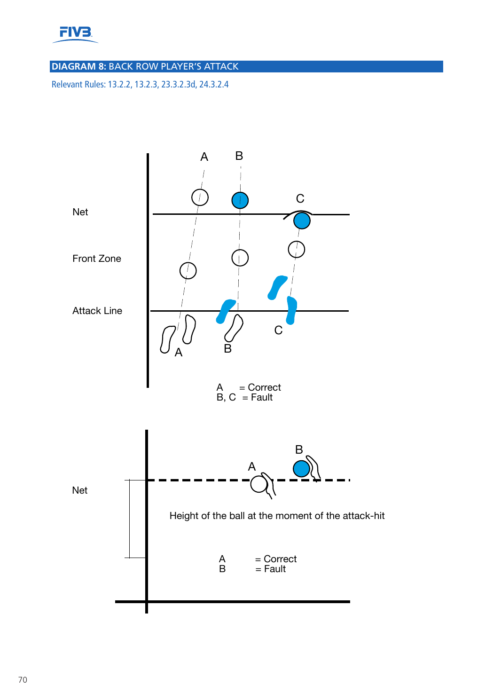
图1｜官方图D8：上半图看起跳脚的位置，下半图看击球时球是否整体高于网上沿；Correct为合法，Fault为犯规。结合正文的“完成进攻”等条件一起读。图源：FIVB，印刷70页。
2.1.7 暂停和换人，等回合结束再办理
这版规则中，每队每局最多请求两次暂停、六人次普通换人，回换也占换人次数。常规请求暂停为30秒；校园赛若有调整，以本次规程为准。
暂停请求应在死球后、下一次发球鸣哨前提出。一般由教练请求；教练缺席时，可以由助理教练或场上队长按规则提出。不要球还在打，全队就因有人喊“暂停”停下来。
普通换人也有办理程序和人员对应限制，不是场边的人想上就上。首发队员每局可以被换下一次、返回一次原轮转位置；替补不能在不同位置间无限轮换。自由人替换另行管理，不占普通换人次数，也不能在回合进行中随意进出。
判罚有疑问，先通过场上队长按程序询问解释。问清“判的是哪项动作”比大家围上去重复“刚才没碰到”更有帮助。
2.1.8 常见裁判手势
哨声让回合停下，手势告诉我们接下来怎么做。看第一裁判时，先认哪队取得发球权，再看具体判罚：第一裁判自己鸣哨判犯规后，通常先指示下一发球方，再示犯规性质，必要时指出犯规队员。
下面先认四个最常见的手势，再用表格讲清常用的16项；完整配图也放在附录A，方便随时查。括号中的图号对应官方规则D11；手势表示判罚结果，不能代替前面的动作条件。
| 看到的动作 |
表示什么 |
球员怎样理解 |
| 手沿发球方向移动（1） |
授权发球 |
配合哨声认开始，发球队员准备在8秒内发出。 |
| 一臂平伸，指向一队（2） |
该队下一次发球 |
先确认发球权，再判断要不要轮转。 |
| 手臂和手指指向地面（14） |
界内 |
球触及场区或界线；不要把它只理解成“球落在场地中央”。 |
| 双前臂竖起，手掌朝向自己（15） |
界外 |
还要结合最后触球和其他判罚，看这一分归谁。 |
| 一手掌拂过另一只竖起手的手指（24） |
球被触及 |
常见于触手出界；这是触球信息，需结合发球方指示理解结果。 |
| 掌心向上，前臂缓慢抬起（16） |
持球 |
裁判判定出现接住或抛球，不是单纯说球传得太高。 |
| 举起两根分开的手指（17） |
连击 |
表示触球犯规，不能只凭球旋转就自行套用。 |
| 举起四根分开的手指（18） |
四次击球 |
本队使用了超过允许次数的击球，先分清是否有合法拦网触球。 |
| 用相应一侧的手示意球网（19） |
球员触网等 |
也用于发球触网未越过球网垂直面的情况，不能只认作某人摸网。 |
| 一手在球网上方示意，掌心向下（20） |
越网击球犯规 |
判的是不合法的越网处理，不是所有手伸过网都犯规。 |
| 张开手，前臂向下摆（21） |
进攻性击球犯规 |
常见于后排进攻，也用于自由人等相关进攻犯规；须结合当时身份与球路。 |
| 食指作画圈动作（13） |
位置或轮转错误 |
询问清楚是相对站位不对，还是发球次序不对，再纠正。 |
| 双手作“T”，随后指向请求方（4） |
暂停 |
请求已被认可，按本队安排到场边集合。 |
| 两前臂相互绕转（5） |
换人 |
按裁判和记录台程序办理，不能自行跑进场。 |
| 双前臂在胸前交叉，双手张开（9） |
一局或全场结束 |
结合比分确认结束的是这一局，还是整场。 |
| 双手拇指竖起（23） |
双方犯规或重赛 |
按裁判示意重新准备，不是对刚才表现“点赞”。 |
司线员拿的是旗，别和裁判手势混在一起。 常见旗语中，旗向下指表示界内，旗竖直举起表示界外，举旗并用另一手掌触旗顶表示触手。司线员提供其职责范围内的判断，回合最终怎样处理仍看裁判指示。三项旗语如下，也可在附录A随时查。
2.1.9 把条件说清楚，比赛就更好打
三次击球先认拦网，界内外先看触地和最后触球，网前动作再看位置、身份与时刻。规则里这些条件，并不是为了增加记忆负担，而是帮助我们把“好像犯规了”说成一件具体的事。
看懂手势后，也不用每球都盯着裁判。先把球打完，哨响后确认结果；有疑问，再回到动作和规则上讨论。
自测回看
本方合法拦网触球后，同一队员马上把球垫起来，一定连击吗？
解答： 不算。 拦网触球另计，他可以完成其后的第一次击球，本队仍可继续组织。
后排二传插上，在网前把球传给攻手，就犯规了吗？
解答： 没有。 到前区传球本身合法，但后排进攻和拦网限制仍然适用。
裁判前臂向下摆，就一定是后排扣球犯规吗？
解答： 不一定。 这是进攻性击球犯规的通用手势，还要结合自由人、来球和当时动作判断。
赛前做一件事： 找到本场规程，和队友确认局数、目标分、人员要求、暂停换人和特殊约定。再选一条过去常混淆的规则，出现具体场面时，对照它的条件看一次。
主要依据： FIVB《Official Volleyball Rules 2021—2024》，重点为第6—15、19、22条及图D11、D12；中文用语参考香港排球总会同版中文译本。校园实际采用本次赛事规程及已说明的社团约定。
2.2 轮转、站位与跑位
同样是换了地方，有时是轮转，有时只是为了把这一球接好。
刚赢了一分，你准备跟着大家转位置，队友却说：“不用转，还是他发。”下一次赢球，大家又真的动了起来。再看看职业比赛：二传发球前明明在后面，球一发出，却已经往网前跑了。
这些动作都发生在球场上，却在回答不同的问题。轮转决定次序，站位关系约束发球那一刻，跑位则帮助大家接上各自的任务。把它们分开，再合起来，球场就没有那么乱了。
本节先讲正常轮转与发球次序，再看发球时的站位、球发出后的移动，最后落到后排二传插上和本社小轮转。规则说明采用2021—2024版FIVB基线，具体比赛以赛事规程为准。
读前想一想
本方正在发球，并连续拿到两分，要转两次吗？
二传这一轮是后排，插上后能参与完成拦网吗？
本社“不进行跑位”，是不是接完球就该站着？
本节目录
2.2.1 赢一分以后，先看发球权有没有改变
面向球网，前排从左到右是4、3、2号位，后排从左到右是5、6、1号位。这里的数字标的是轮转位置，与球衣号码无关：穿7号球衣的队员，照样可以轮到1号位发球。
图1｜正常轮转沿2→1→6→5→4→3→2走；本社小轮转见2.2.6。图源：微信公众号闪电排球。
正常比赛中，接发球队赢下这一分、取得发球权时，全队顺时针轮转一个位置。 路线是：
2 → 1 → 6 → 5 → 4 → 3 → 2。
原来在2号位的人转到1号位，成为下一位发球者；原来在1号位的人转到6号位，其余人依次变化。照着场地认一遍，比只背“顺时针”更容易记。
如果本来就是本方发球，赢球后只加分，不轮转，仍由同一位队员继续发。他可以连发两球、三球，直到这一轮发球权交给对方。
所以，“赢一分转一次”少了一个重要前提。每次准备转之前，先问：刚才是我们发球，还是对方发球？
2.2.2 发球顺序要沿着起始次序往下找
举一个普通六人轮转的例子：这一局开始时，A在1号位，B在2号位，C在3号位，其余三人依次站好，由A发球。
A发球，本方连赢两分，还是A发。随后本方丢分，对方拿到发球权；等本方再次接发得分，才轮转，由原来2号位的B接着发。再下一次夺回发球权，就轮到C。
这个次序由本局的起始排列确定。正式比赛会提交站位表，也会通过记录核对。不能因为某人发得好就临时让他接着发，也不能看见谁恰好在右后方，就认定该由谁发球。
“发球人错了”和“发球那一刻几个人的相对位置错了”，是两种问题。日常都可能被叫作“轮转错”，但真正核对时，前者先查次序，后者先看站位关系。
2.2.3 发球时看相对位置，不是把人钉在六个格子里
按本节采用的规则，发球击球的一瞬间，双方场上队员都要满足本轮的相对位置关系；发球员另按发球规则处理。 判断时刻是发球触球，不是球刚抛起来，也不是球已经飞到网上。
前后关系看对应的队员：5号位对4号位，6号位对3号位，1号位对2号位；左右关系则看同一排内的左、中、右次序。不是每个后排队员都必须站在所有前排队员身后。
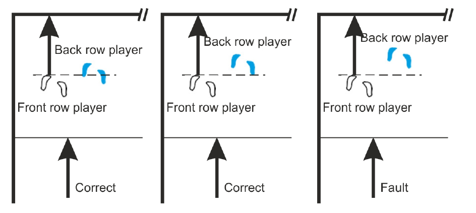
图2｜官方图D4示例A：Front-row player为前排，Back-row player为对应后排；前两幅Correct合法，第三幅Fault位置错误。比较的是接地脚的相对关系。图源：FIVB，印刷66页。
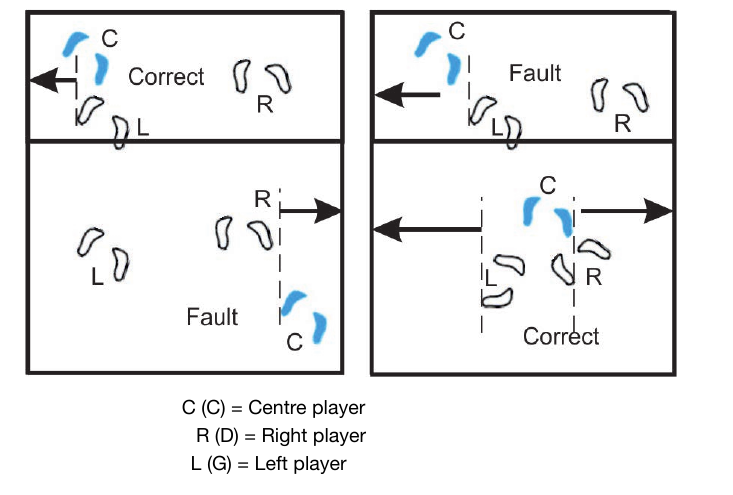
图3｜D4示例B看同排左右：L为左侧，C为中间，R为右侧；Correct合法，Fault位置错误。图源：FIVB，印刷66页。
图上的六个位置帮助我们认次序，却不要求六个人平均分开、排成整齐两行。队员可以靠近，某些脚部位置也可以齐平；精确判定看接地脚的位置关系，离地时还要回到最后接地点。实际站位时，新人先留出清楚的前后、左右关系，比挤在边界上更容易执行。
这也是职业比赛发球前有人靠得很近的原因：他们既要满足起始关系，也想为随后接发、传球和进攻减少移动。看起来不像六格图，不等于站位就错了。
2.2.4 球发出以后，移动是为了接上任务
发球击球后，队员可以在本方场区和无障碍区移动。谁准备接发，谁去组织，谁拉开助跑，开始由这一球的任务决定。
一般比赛中，还能看到按角色进行的战术换位：副攻转向网中准备拦网，主攻到习惯的进攻侧，二传去适合组织的位置。取得发球权后的正常轮转和这些移动发生在不同阶段，也有不同用途。
不过，移动会改变所在地点，不会改变本轮的前后排身份。 后排队员跑到三米线前，仍是后排；前排队员退到后面接球，也仍是前排。
“前区、后区”是地上的区域，“前排、后排队员”是这一轮的身份。队员所在的区域会随移动改变，前后排身份则按本轮次序确定。把这两件事分开，就不会再用“跑到前面，所以能拦网”来判断了。
2.2.5 后排二传插上，是到前面继续组织
很多队伍希望由熟悉传球的人持续组织。二传轮到后排以后，也要从接发或防守的位置进入组织位置，这就是这里说的后排二传插上。
以接发为例：发球前，二传保持本轮合法站位；对方击球后，二传观察来球和队友的处理，及时向组织位置移动。接发队员把球送到他可以处理的范围，其他人留好通道、准备进攻。二传传出球后，也要接着保护，准备对方拦回来的球。
这段过程靠全队共同完成。二传来得及到位，攻手才能更早判断节奏；接发给得太贴网或太远，组织路线也会变。所谓插上，不是别人还在接球时，他只管低头往前冲。
二传到了网前可以传球，但仍是后排队员。他不能完成拦网或参与完成的集体拦网；如果站在前区或从前区起跳，把击球时整体高于网顶的球完成进攻，也会涉及后排进攻犯规。看见他靠近球网，先分清这一下是在组织传球，还是在完成受限制的进攻或拦网。
2.2.6 本社小轮转，按四条约定理解
本社采用的定义是：前后排变换，发球按照正常轮转执行，后排二传插上，不进行跑位。
把它拆开看，容易落实得多：
- 前后排变换： 按本社简化安排进行前后排变化，清楚自己这一轮的身份和任务。
- 发球按照正常轮转执行： 发球次序照常往下走，不因站法简化就临时挑选发球者。
- 后排二传插上： 二传在后排时，仍要及时进入组织位置，队友为接发、通道和进攻准备做好衔接。
- 不进行跑位： 不额外安排专业体系中整套按角色换位的路线。接球、助跑、保护和防守所需的正常移动仍然要做。
前面那串六个位置的箭头解释的是正常轮转；本社这一节说明的是实际采用的简化安排。两者要分别理解，不能看见正常轮转图，就给本社队员补上一套没有采用的换位路线。
上场时，先对好发球次序，再确认前后排变化和组织者。等这一球开始，大家围绕接球、传球、进攻和保护移动。这样既不需要记住一大套专业路线，也不会因为“不跑位”就处理完球站着看。
2.2.7 用一句话说清自己在问什么
下次觉得“又不会站了”，可以先把问题说完整：是“不知道轮到谁发”，还是“不知道发球前该在谁旁边”，又或者是“球来了以后不知道由谁传”？
第一种查次序，第二种对站位，第三种谈分工。把问题分开，一句提醒往往就能解决，不必从头重讲整套阵容。
2.2.8 记住这三件事
轮转让发球与前后排次序变化；站位关系主要检查发球触球时刻；球发出后的移动，为的是让任务接起来。后排二传可以插上组织，到了网前仍要记得自己的后排身份。本社比赛按四条小轮转约定执行。
2.2.9 自测回看
本方正在发球，并连续拿到两分，要转两次吗？
解答： 不用，仍由同一人发球。接发球队取得发球权时，才按正常规则轮转。
二传这一轮是后排，插上后能参与完成拦网吗？
解答： 不能。移动到网前不改变后排身份。
本社“不进行跑位”，是不是接完球就该站着？
解答： 不是。接球、助跑、保护和防守的正常移动仍需进行。
上场试一次： 开球前，和队友口头走一遍“谁发球、怎样变换、这一球谁组织”。二传后排插上时，留意自己有没有把球、通道和进攻准备衔接好。
出处与延伸阅读： FIVB 2021—2024规则第7、12—14条；项目规则研究；体系与本社约定。本社小轮转定义依据社团负责人确认的约定。
2.3 常见阵容与组织方式
接起来的球总要有人传；谁来接第二下，要在来球之前说清。
六个人站上场，球也接起来了，第二下却没人碰：有人以为二传会来，有人看见二传还在后面，又不敢自己传。反过来，有时两个人一起跑来组织，攻手却来不及准备。
队伍要有安排，首先就是为了少出现这些互相等待。网上常见的4-2、5-1、6-2，都在回答一个很实际的问题：谁来组织进攻，他轮到前排或后排以后怎么办？
本节先把六个人的任务接起来，再认识三种常见组织方式，最后分清组织体系、角色排列和接发分工。数字用来帮助理解，日常上场先把分工说清楚。
读前想一想
6-2是八个人上场吗？
知道一支队采用5-1，就能确定它有几个人接发吗？
在常见5-1中，二传从前排转到后排后，前排主要进攻人选通常有什么变化？
本节目录
2.3.1 阵容先解决“这一球谁接着做”
一支队伍需要有人接发、有人组织、有人准备进攻，还要有人保护、拦网和防守。角色名称告诉我们主要职责，实际一分球仍然要靠六个人连续完成。
有人把“主攻、副攻、接应、二传、自由人都齐了”当成能打配合的前提。对社团而言，先有六个人把任务接起来更重要。没有自由人也能打六人制比赛，只是接发和防守要由其他队员承担；有自由人时，他替换一名后排队员，场上也仍是六人。
最该先约定的是：通常谁处理第二下？如果他接了第一下或来不及到位，谁补传？其他人如何让出组织空间、准备进攻？这几句话说清楚，比先记住一套阵型名字更能帮下一球。
2.3.2 从临时传球，到相对固定地组织
刚开始打球，常常是谁离球近谁传。它的好处是容易开打，遇到意外来球也能有人补一下；困难是大家对第二下缺少共同预期，攻手不知道该等谁、朝哪里准备。
指定主要组织者后，接发队员有了更清楚的目标，攻手也更容易熟悉传球节奏。相应地，组织者要观察来球、及时移动，其他人需要帮助他进入位置。
固定组织者并不意味着别人永远不能传。二传防起第一下、救球后倒地，或球落在明显来不及处理的地方，都需要队友接续。分工是先给大家共同预期，再保留处理变化的办法。
接下来三种体系，正是在“让谁组织、怎样把组织接续下去”上给出了不同安排。
2.3.3 4-2：通常由前排二传组织
4-2通常把两名二传安排在轮转次序的对角位置，另外四名队员以进攻为主要角色。两名二传一前一后，由前排的那一位负责组织；轮转使另一位来到前排后，组织任务再交给他。
这样理解，比把数字背成“四个攻手加两个二传”更进一步：关键还在于哪一位二传正在传。 前排二传组织时，另外两名前排队员可以准备进攻，后排队友完成接防、保护等任务。
图1｜轮转次序中的对角为1与4、2与5、3与6。编号说明次序，实际组织位置随任务移动。图源：微信公众号闪电排球。
这种安排让二传的主要组织任务在前排完成，通常较容易认识接替关系。但攻手也要适应两位二传，接发目标和后续分工仍需说好。不能因为有两名二传，就认为每一球都会比只有一名二传时更好传。
先抓住这里的常见安排：两名二传对角配置，由前排二传组织。等认识了6-2，再对比两种方式怎样交接任务。
2.3.4 5-1：同一名二传贯穿六轮
5-1由一名主要二传贯穿前后排组织，其余五名按主要进攻角色安排。二传转到前排时继续传，转到后排时也继续传，后排插上就与上一节连了起来。
二传在前排，前排三人中有一位在组织，另两位主要准备进攻；二传在后排，前排可以有三位主要攻手。这是理解前后排不同条件的好入口。
但“前排有三位攻手”和“这一球有三条好打的进攻路线”不是一回事。一传偏了、有人没来得及助跑，能够实际使用的点就会减少。反过来，有些队伍还会组织后排进攻；前排二传也可能在合适条件下处理第二下。所以别只数人，还要看当时谁能打、球是否传得到。
一位二传持续组织，便于建立相对统一的节奏，也需要他适应不同轮次的移动和来球。队友不能等他一个人包办全部难题：接发、让位、攻手准备和补传都在帮助组织运转。
有自由人的常见5-1比赛，场上某个后排名额会由自由人替换。体系名称中的“五”不是说现场六个人都随时准备扣球，更不是要求自由人也算一名普通攻手。
2.3.5 6-2：通常由后排二传组织
6-2最容易让新人困惑：“六加二，难道有八个人？”其实场上仍是六人。它通常有两名能传能攻的队员对角安排：处在后排的那位组织，处在前排的另一位参与进攻；等两人的前后排身份换过来，组织任务也随之交接。
也就是说，同一名队员在不同轮次可以承担二传或攻手的功能。这正是数字不能简单相加的原因。
这套安排常能保持三名前排进攻人选，也需要两位队员具备相应的传球与进攻能力。每次交接后，接发、二传插上、攻手节奏都要跟上。对人员和熟悉程度不足的队伍，多一项理论上的进攻选择，可能也多了一项衔接负担。
一些比赛还会通过换人实行6-2，涉及换人名额、重新上场等具体规则。看海外校园比赛时尤其要先认规则体系。我们先掌握基本思路：后排的二传组织，前排的另一位二传参与进攻。
2.3.6 三种体系放在一起，看的是组织任务
假设小林在前排、小周在后排，两人都能传球：按常见4-2，由小林组织；换成6-2，就由小周插上组织，小林准备进攻。如果采用5-1并固定小林为主要二传，那么小林轮到后排后，仍继续组织。这是帮助比较的一组自编人物例子，不代表本社的具体配对。
| 常见方式 |
通常由谁组织 |
理解时先看什么 |
| 4-2 |
两名二传中处在前排的一位 |
轮转后怎样交接组织 |
| 5-1 |
同一名二传贯穿前后排 |
二传前后排时的移动与队友任务 |
| 6-2 |
两名二传中处在后排的一位 |
后排组织与前排进攻的功能交换 |
它们描述组织方式，不是强弱排名。实际打得是否顺畅，还取决于接发、传球、进攻和全队配合。有稳定组织者但衔接不好，一样会乱；采用简单安排，却能互相补位，也可以打出连续的回合。
2.3.7 同样的体系，可以排得不同、接得不同
听人讨论“二主副、二副主”，又看到有人说三人接发、两人接发，很容易把这些名称都当成不同的阵型。
可以用四个问题分清：
- 4-2、5-1、6-2： 谁负责组织，转到前后排以后怎么办？
- 二主副、二副主等角色排列： 二传、主攻、副攻沿轮转次序怎样相邻？
- 接发安排： 这一轮哪些人接，结合部交给谁？
- 战术换位： 发球以后，大家怎样移动到任务位置？
例如，两支队都采用5-1，完全可能有不同的角色排列、接发人数和移动路线。改变主攻与副攻的相邻顺序，也不等于更换了主要二传人数。
所以，单凭一张发球前照片，往往认不出整场使用的组织体系。连续看二传在前排、后排的轮次，找到实际的组织者，才更容易读懂。
2.3.8 回到本社，先选能持续执行的分工
上场前，不妨先看今天谁能稳定组织、谁需要多接发、谁能补传，以及大家熟悉到什么程度，再决定具体任务。
本社小轮转按已经确认的约定执行：前后排变换，发球按照正常轮转执行，后排二传插上，不进行跑位。 这份约定与数字体系回答的问题并不完全相同，不需要硬把它套成4-2、5-1或6-2，更不必因为看了职业站位图，就临时给队友增加整套换位。
今天最实用的进步，可能只是大家终于说好了“二传接第一下时谁来补”，或“我准备进攻时，身后的队友怎样保护”。阵容的价值，就落在这些球来时真的接得上的地方。
2.3.9 记住这三件事
先找组织者，再看他轮到前后排以后是否交接；组织体系、角色排列、接发与换位要分别说明；日常选安排，先看人员能否持续执行，而不是先挑一个听起来复杂的名称。
2.3.10 自测回看
6-2是八个人上场吗？
解答： 不是，仍为六人。同一球员可以在不同轮次承担组织与进攻两种功能。
知道一支队采用5-1，就能确定它有几个人接发吗？
解答： 不能。接发人数、责任和后续移动需要另看实际安排。
在常见5-1中，二传从前排转到后排后，前排主要进攻人选通常有什么变化？
解答： 二传在前排时，另两名前排队员主要准备进攻；二传转到后排组织时，前排可有三位主要攻手。人数只是条件，还要看这一球谁来得及准备、球是否传得到。
看球试一次： 跟看同一支队伍二传在前排和后排的两个轮次，先认谁传第二下，再找哪些队友准备进攻、谁承担接发和保护。回到本社比赛，只执行本场已经说好的分工。
出处与延伸阅读： FIVB Level II教练手册进攻体系与队伍组织相关章节；项目体系与角色研究；校园参与者的常见困惑。
本章自测回看
社团要参加一场三局两胜的混合赛。除了每局打几分，赛前还应确认哪些会影响上场安排的规定？
解答： 先读本次规程，确认人员与混合组队要求、网高、暂停与换人办法、自由人使用，以及是否有特殊约定。没有写清的再向组织方或裁判确认。赛制改成三局两胜，并不代表其他安排都和上场比赛相同。可回看2.1开头、2.1.6—2.1.7及2.1.9。
裁判吹了位置错误，队友却说“我们发球后一直这样跑”。要判断这一球，应先还原哪个时刻，再分清哪些安排？
解答： 先还原发球队员击球的一刻，看当时队员的前后、左右站位关系；再把轮转次序、发球前站位和发球后的任务移动分开。发球后怎样跑，不能代替对发球触球时站位的判断。可回看2.2.2—2.2.4。
球队约好固定小林组织，但小林轮到后排就等前排队友传。这与5-1的安排哪里没接上，队友还应约好什么？
解答： 5-1由同一名主要二传贯穿前后排组织，小林轮到后排仍需按约定插上。队友要留出组织通道，并说好他处理第一下或赶不到时由谁补传。常规组织者保持固定，临时补传负责把意外情况接下去。可回看2.2.5、2.3.2、2.3.4。
鼠鼠排球指南第3章
第3章 基本技术与队内配合
让动作有去处，让队友接得上。
热身时两个人能把球垫上几十次，到了比赛，却常有“接起来了，还是没法打”的球。一传飞得很高，二传仍在追；两人都喊了一声，球还是落在中间；攻手用力起跳，球却从身后飞过。动作都做了，衔接却没有跟上。
这一章从发、垫、传、扣、拦、防的用途讲起，再看一传给组织留下什么条件、接发责任怎样交接，以及攻手与二传怎样对上节奏。每读一节，都可以给下次打球选一个小目标：让方向更清楚、喊话更早，或让准备与实际来球接在一起。
读前想一想
一个同学热身对垫很稳，比赛却接完就停、也找不到传球目标。怎样给他安排一小组练习，让对垫接上比赛任务？
同一轮里，主攻既要接发又要进攻。怎样安排结合部责任和接球后的移动，让这两项任务接得上？
连续三轮一攻都断在第二下：一轮两个人抢着传，一轮没人补传，一轮传球时挡住了攻手。下次练习应先解决什么，怎样检查是否改善？
3.1 排球基本技术
把发球、垫球和扣球放回同一分球里，动作为什么这样做，就更清楚了。
热身时能连续垫几十下，一进比赛，球却总往身后飞；扣球练习打得响，一到正式对抗，又老觉得球来得不对。我们很容易把这些问题归结为“基本功不够”，接着继续原地对垫、继续使劲扣。
练基本功当然有用，还要多问一句：我这一碰，要给下一步创造什么条件？ 发球争取让对方接得不舒服，接球要让队友能接着组织，扣球要在眼前条件下争取赢分。动作跟着任务走，练习才容易带进比赛。
这一节先搭起发、垫、传、扣、拦、防六项技术的基本认识。每项只抓住“做什么、怎样接起来、先改什么”，不用一次背完所有动作细节。
读前想一想
上手发球忽前忽后，除了加力量，还应该先看什么？
面对较有力量的来球，为什么不宜再大幅上抡手臂？
拦网没有直接得分，是不是等于没作用？
本节目录
3.1.1 发球：让比赛从自己手里开始
发球是少有的可以自己准备、自己发动的触球。对初学者来说，第一步是把球稳定送进对方场地；熟悉之后，再争取发向想要的位置，让接球队员移动或处理得不舒服。
站立下手发球容易找到完整的击球感觉。非击球手在身前持球，击球臂向后准备，持球手松开球后，向前摆臂击打，身体随动作向前衔接。上手发球则先把球抛到自己方便伸臂击打的位置，再连贯挥臂，用手掌击球。两种方式都需要一个清楚的击球目标，而不只是想着“使劲过网”。
上手发球总是差一点，先看看抛球。 球忽前忽后，身体就要临时追着它改动作。同样的挥臂，碰到的却不是同一个位置，出球当然也容易变。可以先选一个不必追赶、自己能舒展击打的抛球位置，再观察发出去的方向。没有必要为了模仿职业球员，把抛球高度和准备动作一起放大。
从“能发进”到“能发到”，目标可以很具体：这一组先往场地较深处发，下一组再尝试一侧。练习时把发球入界和达到目标分开记，既能看稳定性，也能看方向控制。跳发、跳飘以后可以学，站立发球同样能够成为好用的比赛技术。
发完还要进入场内，接上本轮防守任务。球飞过去了，自己的这一分刚刚开始。
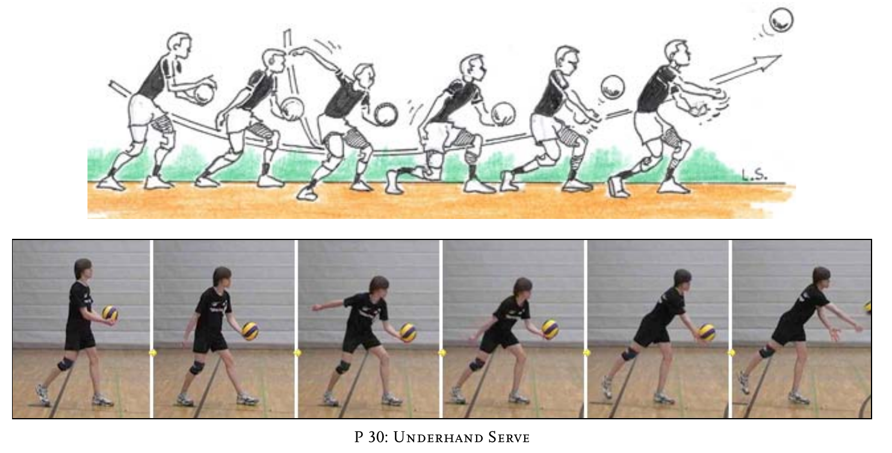
图3.1-1｜下手发球也有连贯的准备和出手：身体面向目标，把球放到自己方便击打的位置，摆臂向前，把球送进对方场地。 图源：FIVB《FIVB Level I - Coaches Manual》，P 30，印刷86页。
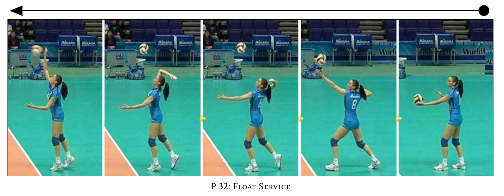
图3.1-2｜沿原图圆点到箭头的方向，从右往左看：持球准备、抛球、向前上方击球，再保持身体平衡。先把这几步接顺，再追求落点与变化。 图源：FIVB《FIVB Level I - Coaches Manual》，P 32，印刷87页。
3.1.2 垫球：给来球一个清楚的去处
垫球常用于接发、接较低的来球和防守。两条前臂并拢，形成相对稳定的接触面，把球送向目标。常见接触位置在手腕上方的前臂部位，别把“垫球”理解成拿拳头向上砸一下。
准备从来球之前开始：看清球往哪里走，及时移动，让身体和手臂有空间处理。两脚保持便于移动的站姿，屈膝降低身体，手臂在触球前建立好方向。球到了才猛伸一下，往往既来不及找接触点，也控制不好去向。
我们常说的“平台”，就是两条前臂形成的接触面。平台朝哪里，直接关系到球被送向哪里。 接球时既要看球，也要知道组织者在哪里。别只顾把球往头顶上送，接完才发现二传在另一边。
慢球和强球的处理不必一样。慢球需要身体和手臂协调，把球送到队友可处理的范围；较有力量的来球则要控制接触面和动作，避免又额外大幅上抡，把球弹得过远。“手臂别乱挥”很有用，但不能误解成所有来球都只能用完全不动的一个姿势。
垫完后继续看出球。球虽然很高，却让队友冲到场外，说明保球之外还需要改善方向；球不算漂亮，但在困难来球下送到了队友够得到的地方，也完成了重要任务。评价时，把来球难度和出球条件一起看。
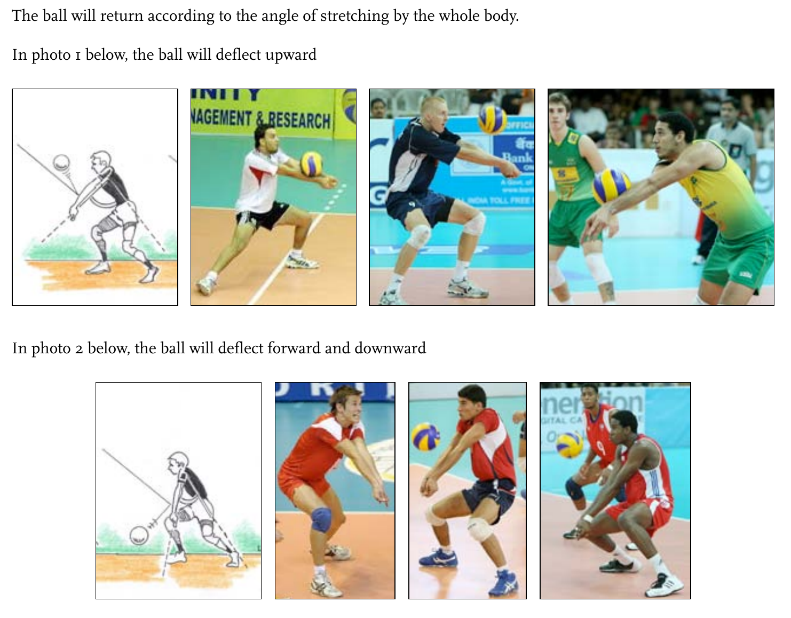
图3.1-3｜上、下两组比较的是不同平台角度和出球方向。看手臂朝向，也看身体怎样到位；垫球要把球送向队友，不能只想着“碰到就行”。 图源：FIVB《FIVB Level I - Coaches Manual》，P 21 后两组，印刷81页。
3.1.3 传球：把球交到队友能进攻的地方
上手传球常承担第二次组织，也能用于处理较高、便于上手接触的来球。这里的目标很朴素：让下一位队友知道球要去哪里，并有机会把它打好。
先判断球路，再移动到能从容处理的位置。双手在额前上方准备，手指自然张开，围出适合接触球的手形，随来球连贯出球。腿、身体和手臂共同帮助完成传送。不要等球落到脸边才临时把手举起来，也别为了“托得稳”，先抓住球停一下再抛出去。
练习时可以让队友站在目标附近，看三件事：他是否总要追着跑，球是否太贴网，准备进攻时有没有合适的空间。传到了某个地点，还不等于传成了好打的球；同一落点，球路过低、突然过快，攻手仍可能来不及。
球总是偏，先检查自己是不是还在追球。 来不及到位时当然要救，但常规球可以努力早点判断、早点移动，让触球时的身体和目标关系更清楚。先把一种常用球路传稳定，再增加远近、方向和节奏变化，比每球都试一个新花样更容易和队友配上。
跳传是组织中的一种常见变化。二传可以通过起跳更早、更高地接触球，并衔接不同进攻选择。它并不是“只有跳起来才算会传”，也不用刻意等到空中某个“静止时刻”再碰球。是否采用，首先看自己能否控制来球、攻手能否接上。
第二下也可以直接变成进攻，通常叫“二次球”。它让对方在防攻手之外，还要顾及组织者自己。贾内利就有很明确的二次进攻和发球得分能力。二传处在后排时，仍要遵守后排进攻的限制。
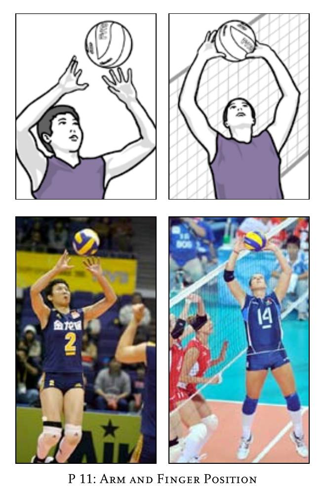
图3.1-4｜上方是手型示意，下方是两张比赛照片。观察触球位置和手臂准备：尽量先到球下，连贯地把球送向目标。 图源：FIVB《FIVB Level I - Coaches Manual》，P 11，印刷76页。
3.1.4 扣球：把人和来球约在一起
扣球最吸引人，也最容易让我们只盯着最后一次挥臂。可真正决定能不能舒服击球的，往往早在助跑前就开始了：球传向哪里，自己站在哪儿，还有没有起跳空间？
常规扣球可以连成四段：判断来球，助跑起跳，空中击球，落地后继续参与。以右手攻手为例，常见三步助跑是左、右、左，最后两步衔接起跳；左手攻手通常相反。刚入门可以先熟悉步序与制动起跳，再接可控制的抛球或传球，逐渐把来球判断放进来。
击球尽量争取在自己能够伸展发力的前上方完成。球落到头顶后面，容易仰着身子追打；起跳太早，人开始下落才等到球，力量也很难连上。这里最需要的并非一句“再用力”，而是把上步和实际球路接起来。
助跑不是一路冲到网底下。 要给手臂挥动和落地留出空间，别为追球闯进队友或对手的落地区域。完成击球后保持身体可控，落地站稳，再转入保护或拦防。扣得再响，落地后停在那里看球，也会漏掉下一项任务。
进攻选择还包括变方向、轻打和吊球。面对已经并好的拦网，球又不舒服，一味追求最大力量，未必比有目的地打向空当更好。先争取合法、可控地把球打到想去的地方，再逐渐增加速度和变化。
看日本主攻石川祐希的比赛，可以把接发、转入助跑和进攻出手连起来观察：刚才还在后排接球的人，怎样赶上下一次扣球？
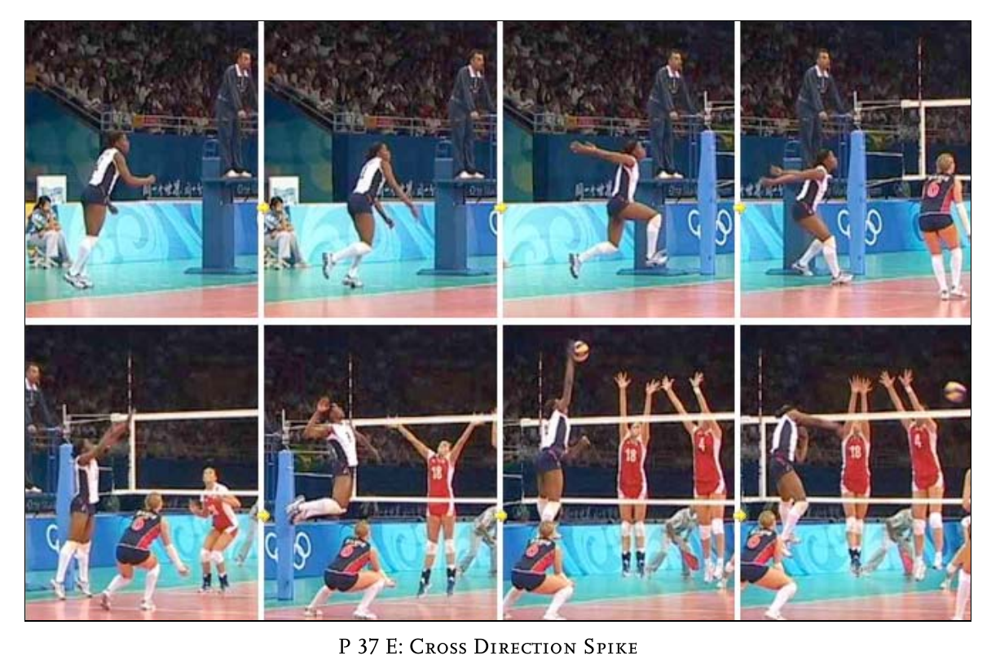
图3.1-5｜先读上排，再读下排，每排从左往右看。把助跑、起跳、击球连成一次进攻：攻手既要判断来球，也要把自己的动作接上。 图源：FIVB《FIVB Level I - Coaches Manual》，P 37 E，印刷93页。
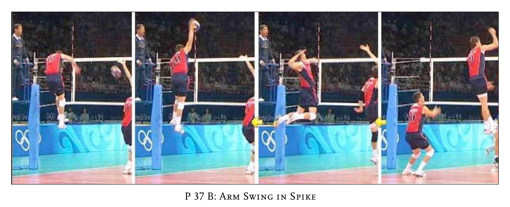
图3.1-6｜按原图黄色箭头从右往左看：起跳、引臂、击球、随挥。扣球的力量要接在合适的时机和击球位置上。 图源：FIVB《FIVB Level I - Coaches Manual》，P 37 B，印刷92页。
3.1.5 拦网：在网前给对方出一道题
拦网既能直接把球拦回得分，也能封住部分方向，或把强攻碰缓，让后排有机会防起来。判断一次拦网，除了看有没有“拦死”，还要看它给整队防守带来了什么。
网前先观察对方怎样组织，再根据传球和攻手移动到合适位置。不要只盯着对方二传的手，球传出去以后，还要读攻手的助跑、起跳与击球位置。到位后争取控制身体，起跳伸手，在合法条件下形成有效拦阻，落地继续准备下一次。
两个人一起拦，难点在于共同到位。一个已经起跳，另一个还在横向追，手之间就可能留下明显空隙；只看“我们有两个人拦”会漏掉这个区别。先把移动和并拦做顺，再看封住了什么方向，后排能否据此准备。
拦网时也要记得规则：只有前排队员可以完成拦网，拦对方发球不允许；触网、越网干扰也有相应限制，回看2.1节即可。伸手高不等于可以在任何时机碰对方场区里的球。
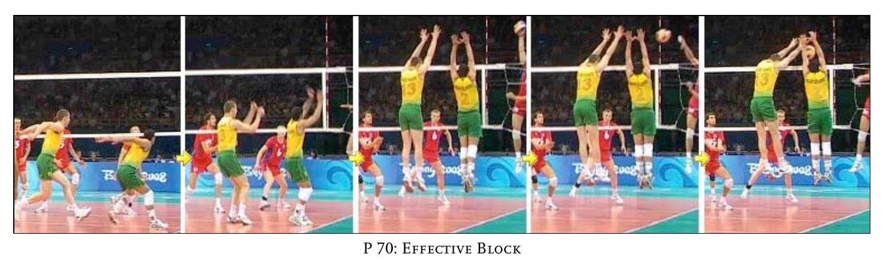
图3.1-7｜从左往右看两人怎样靠拢、起跳与伸手。合拦既要赶到，也要在网上配合。图源：FIVB一级教练手册，P70，印刷115页。
3.1.6 防守：把对方的进攻接成我们的机会
对手要扣球了，自己应该往哪儿站？先看本方拦网准备挡哪里，再结合对方实际的传球和攻手判断。后排防守与网前拦网连在一起，不能六个人各自找一块觉得安全的地方站着。
准备姿势要方便向需要的方向移动。重心适当降低，身体保持能启动的状态；球来时根据高度和速度，选择前臂垫、上手挡或其他合法处理。先把球防到队友可继续处理的范围，别一救起来就直接冲过网，让组织机会又回到对方手里。
防守不是等扣球落到自己面前。 攻手准备、拦网是否形成、球有没有触手变向，都在提供信息。你需要随眼前情况调整，也要准备短球与拦网触手后的变化。具体路线怎样分配，第4章会再展开。
倒地救球很精彩，但倒地并不是防守质量的标志。能用脚步到位并控制出球，就不必为了显得努力而主动摔下去；确实需要扑救、滚翻时，再在合适场地和指导下练习衔接。看比赛也别只剪最后一扑：他之前怎样准备，救起后队友怎样组织，才是完整的一次防守。
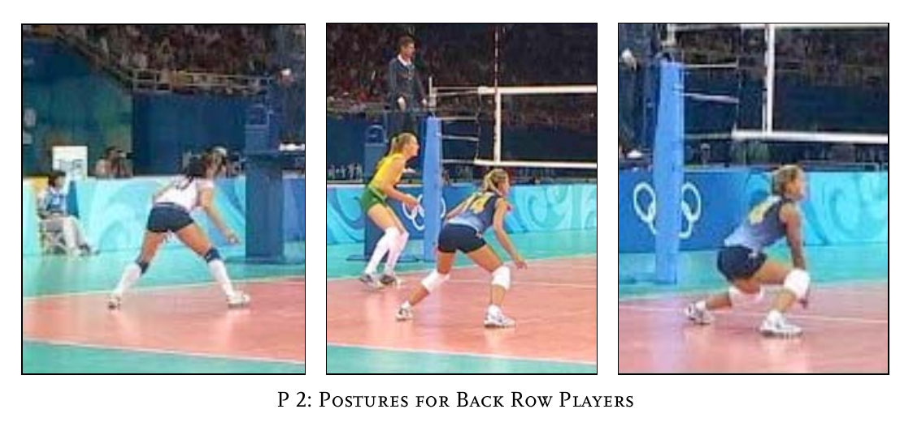
图3.1-8｜后排准备会随来球调整重心和手的位置。准备的目的，是看清球后能及时移动，既不是站直等球，也不是一直蹲在最低处。 图源：FIVB《FIVB Level I - Coaches Manual》，P 2，印刷70页。
3.1.7 从六项动作，回到同一分球
把这一分接起来：发球发动比赛，接发抵住压力，二传把球送给攻手，攻手争取赢分；对面进攻时，我们用拦网和防守把球接回来，再组织一次。
练动作时给自己一个清楚目标：“我想让二传少追一步”“我想让这次扣球能打进目标区域”。每次先改一件看得见的事，练后让队友告诉你，下一下是不是更好处理了。
自测回看
上手发球忽前忽后，除了加力量，还应该先看什么？
解答： 看抛球是否稳定在自己方便击打的位置，以及击球时是否总在追球。发进以后再增加方向目标。
面对较有力量的来球，为什么不宜再大幅上抡手臂？
解答： 来球本身已有较大力量，再额外大幅上抡容易让球弹得过远。先稳定接触面、控制平台方向和动作，把球送到队友能够处理的范围。
拦网没有直接得分，是不是等于没作用？
解答： 不是。它可能封住部分线路，或把球碰缓后让队友防起，要接着看后排与后续组织。
下次上场的小任务
选一项技术，请一位队友帮你看一个结果。例如，发球先记10次里有多少入界、多少进入自己选的半边；接球只看组织者是否明显追球。这是一次观察任务，数字用来比较自己的尝试，不是统一合格线。
参考与继续阅读
3.2 接发球质量与进攻组织
两球都接起来了，留给二传的条件却可能差得很远。
两次发球都接起来了。第一球，二传一路追到边线，勉强把球调整给主攻；第二球，二传从容来到网前，中间和两翼也都已经准备好。我们直觉上知道第二球更舒服，却常常只用一句“这球到位”带过去。
“到位”到底好在哪里？这一节把目光从接球人移向队友：二传能怎样传，攻手还来不来得及，后面的人要接上什么任务。把这几件事看清楚，一传质量就不再只是一个模糊的好坏评价。
阅读路线：先接住压力 → 看二传怎样处理 → 看攻手还有哪些选择 → 接上后续任务 → 用简单记录帮助讨论。
读前想一想
两次一传落点接近，质量就一定一样吗？
好一传以后扣球出界，应该把这次接发改成差球吗？
队里没有熟练快攻，能否按自己的常用组织给接发分档？
本节目录
3.2.1 接发球有两件事要做
第一件事，是别让对方发球直接结束这一分。发球很冲、方向又突然变化时，接起一个队友还能追到的球，已经给了全队继续比赛的机会。
第二件事，是尽量让本方有条件组织进攻。来球在能力范围内，就争取把它送到明确的方向，让组织者方便处理，攻手能够准备。若每次都只是把球往上碰，全队就要不断救险，很难打出自己熟悉的东西。
这两件事连着看，既不会把困难球的救起看得一文不值，也不会把“只要没直接落地”当成接发的全部目标。
比如，面对一记很强的发球，队员侧身把球救到场内，二传追上后传出调整球。不能只因为没能打快攻，就说接球人这一传毫无价值。下一次面对较容易的球，我们则可以提出更明确的方向和球路要求。
接发和防守这样的后排工作，也能让一名球员成为赛事MVP。2025年世联赛，这份荣誉就属于意大利自由人德吉纳罗。
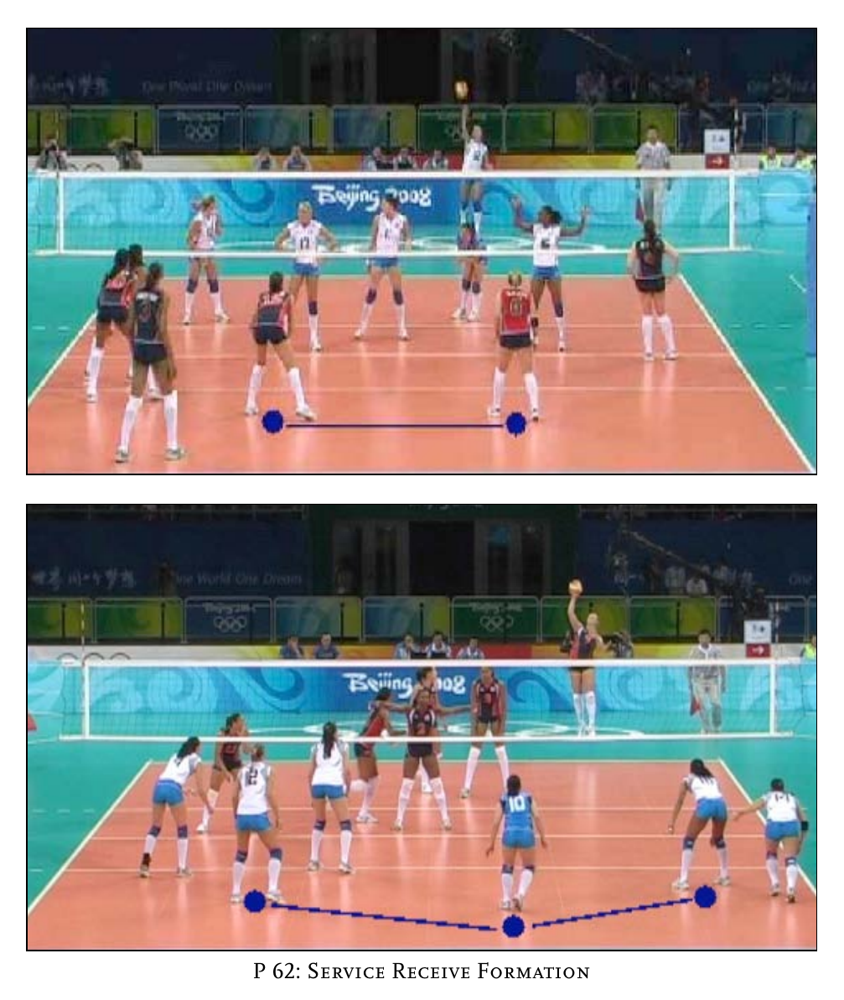
图3.2-1｜两张是不同场景的接发球示例，蓝线为原书标识。先找承担一传的队员，再找准备组织、准备进攻的队友：场上六个人并不需要同时抢第一下。 图源：FIVB《FIVB Level I - Coaches Manual》，P 62，印刷110页。
3.2.2 到位不只是落在网前某个点
刚开始学接发，我们很需要一个目标：把球往哪里送？队内明确常用组织位置，确实能让接球者有方向，也让二传知道该去哪里。
但同一个目标附近，也可能出现很不一样的球。一个球弧线便于追踪，二传及时到达，能稳定处理；另一个球贴着网快速下坠，二传虽然碰到了，却只能边躲网边勉强送出去。它们在地面上的投影可能很近，给组织留下的条件却差很多。
所以看一传，可以连问三句：球要去哪儿？组织者能不能赶到？他到了以后能不能好好处理？ 方向、高低、离网距离和到达时机一起决定了结果。
这里也要把“组织位置”和“二传现在站的位置”分开。接球者若总盯着二传刚刚出发的地方，把球往他身后送，二传就得回头追。全队应先约定一个适合当轮任务的方向，而不是每次临时跟着人跑。
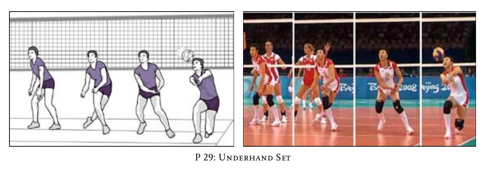
图3.2-2｜来球不方便上手传时，也可用垫传把进攻接起来。先到能处理的位置，再控制出球方向。图源：FIVB一级教练手册，P29，印刷85页。
3.2.3 好一传，让更多人真正有球可打
一传顺的时候，二传通常更有条件在多个攻手之间选择。但“我们网前有三个人”还不够，得看看他们是不是已经能接球进攻。
中间攻手有没有及时准备？两翼有没有让出助跑空间？刚接完一传的主攻，是否来得及从接球转入进攻？如果球很好，攻手却还站在接球的位置看着，二传照样会少一个选择。
反过来，一传把二传拉得很远，原先准备的近身快球可能来不及继续配合。攻手就要根据实际来球，改成能接上的准备，二传也要选择眼下能完成的传球。
这就是“一传给组织留下条件”的意思：有人来得及传，有人来得及打，而且球路能把他们接在一起。到了第4章，我们会再看多个真实进攻点怎样影响对方拦网；这里先把本方的准备做实。
3.2.4 第一下接好，后面仍要一起做
社团里常有一种可惜的球：一传方向不错，二传也到了，攻手却还没拉开；又或者接球队员完成触球后，正好停在二传的移动路线上，原本轻松的组织反而挤在一起。
接球之后，任务要及时交接。接球人需要进攻，就继续进入助跑准备；不参与这一攻，就按分工准备保护。没有接球的人给二传和攻手留出空间，同时保持能帮忙的准备。
若二传自己接了第一下，队友要及时接过补传。不能因为这个球原计划交给二传，就等着他再去碰第二下。谁能处理、谁来传，要通过平时分工和当场喊话接起来。
评价时也要把前后分开。好一传后面可能传扣失配，困难的一传也可能被队友组织成好球。最后赢没赢这一分，不能倒过来改写第一次接发给出的条件。 把每段讲具体，大家才知道该改哪里。
3.2.5 本社的共同目标：球到，人也到
本社小轮转采用前后排变换，发球按照正常轮转执行，后排二传插上，不进行跑位。这种安排下，接发时仍要想到组织者从哪里赶过来。
后排二传需要插上，第一下就要给他可用的方向和处理时间。接发队员顾好来球，旁边的人留出通道；二传也不能只等球已经飞起来，才想起这一轮轮到自己组织。准备早一点，接球队员就不必靠一记特别高的球，来补每一次迟到。
共同目标可以先说得简单：球有清楚的去向，二传能赶到，攻手知道接下来怎样准备。等这些稳定之后，再细化目标范围和常用球路。不要直接拿职业队的一张目标图，要求所有人发球一过网就照样完成。
接球者和二传也可以在两球之间交换一句具体反馈：“这一球方向可以，再给我一点处理时间。”“刚才我启动晚了，你不用因为我没赶到就把方向全改掉。”说清哪一环的问题，比双方一起猜“是不是到位”有效得多。
3.2.6 用一张简单表，把“好不好”说清楚
想开始做接发记录，不必一上来就给每个人算复杂均分。我们可以先约定三类：直接失分；能继续，但组织受限；能按本队常用安排组织。这是本指南建议的社团简化方法，不是所有赛事统一的评分标准。
先一起看几球，把“本队常用安排”说清。队里还没有熟练快攻，就不必照搬职业队“能否打所有快球”作为最高档门槛。看不清的回合单列未知；一传直接过网、回合仍在继续的球，也单独标注，别直接写成已经丢分。
下面是自编教学例子，用来练习把接发条件和最终结果分开：
| 球号 |
接发后留下的条件 |
接发记录 |
该回合结果 |
| A |
直接漏接落地 |
直接失分 |
负 |
| B |
二传明显追球，只能调整到一侧 |
能继续，组织受限 |
胜 |
| C |
二传从容组织，攻手有准备 |
能按常用安排组织 |
负 |
| D |
画面没拍到接球与组织过程 |
未知 |
胜 |
B后来赢了，不等于第一下已经很从容；C后来输了，也不能把接发改成差球。D虽然知道回合结果，却没有足够画面判断接发，记录未知最清楚。
等记录积累了一小段，再看各类有多少、对应哪些来球，而不是先给队友排榜。数字的用途，是帮我们找到值得回看的球。
3.2.7 读完，带走三个观察点
接发先争取不直接丢分，再尽量给全队一个清楚的起点。看质量时，跟着球继续看组织者和攻手：二传好不好处理，攻手来不来得及，队友有没有把任务接上。
这样评价，既能肯定困难来球下的救起，也能找到常规球还能怎样改善。
自测回看
两次一传落点接近，质量就一定一样吗？
解答： 不一定。还要看高低、方向、到达时间，以及组织者能否从容处理。
好一传以后扣球出界，应该把这次接发改成差球吗？
解答： 不应该。接发按当时给组织留下的条件记录，后面的传扣和进攻结果另记。
队里没有熟练快攻，能否按自己的常用组织给接发分档？
解答： 可以。先说明口径并一起校准，保留数量和对应回合；不要拿不同口径的表直接比较。
下次上场或看球的小任务
选一段连续接发，先只记二传“从容处理”还是“明显追球”。打完挑两球一起回看：追球从哪里开始，接球者、二传和其他队员各能改哪一步。只讨论这一件事，就能让记录落到配合上。
参考与继续阅读
3.3 接发分工与场上沟通
两人之间的球，往往在发球过网之前就需要说清由谁负责。
球落在两个人中间。两个人都往前迈了一步，又同时把手收回去。等球落地，一边说“我以为你接”，另一边说“我看你动了”。
这种球实在太熟悉了。旁边的人常会提醒：“喊啊！”可只喊这一句，下一球仍可能一样漏。因为球来之前，谁先负责、谁准备补、变化时怎样交接，还没有真正说清楚。
接发配合需要两样东西：分工让大家知道先做什么，沟通让大家知道变化后怎样接着做。 这一节把它们放进一个完整回合，看看怎样减少那些本来可以避免的犹豫。
读前想一想
两人之间的球，一定由自由人接吗？
已经约定一人优先，另一人就可以完全不看球了吗？
二传接了第一下，喊“我传”有什么用？
本节目录
3.3.1 先认清，这一轮由谁接、谁传、谁准备打
上场前看一眼自己这一边，先确认参与接发的人，负责组织的人，以及需要尽快准备进攻的人。不是所有人都承担相同面积，也不是站在后排就一定什么球都归他。
可以从三个具体问题开始：我主要照顾哪里？我旁边的人照顾哪里？球接起来以后，我下一步做什么？这三件事清楚，临场就少一些猜测。
接发人数也服务于这些任务。几个人接，要看这组人的接球能力、对方发球以及后续进攻安排。减少接发人数，可能让某位攻手更早准备，也会把更多球交给其余人。如果他们还接不过来，少一个人未必更顺。
对兴趣社团来说，先让每个接发者都有明确任务，比追求看起来像职业比赛的站法更实用。需要调整时，一次改清一件事，不要刚漏两球，就把大家全都换一遍位置。
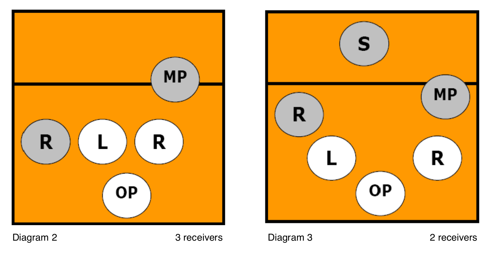
图3.3-1｜左图三人接发，右图两人接发。R为接发型攻手、L为自由人、MP为副攻、OP为接应、S为二传。这是任务分工示例，不能照着它排发球瞬间的完整站位。图源：FIVB《Top Volley》，图D2—D3。
3.3.2 两人之间的球，要有优先，也要有补位
结合部就是相邻接球责任之间容易交叉或留下空隙的地方。球直奔一个人，通常容易决定；球恰好在两人之间，才最考验分工。
先约定主要处理者，另一人也不是立刻放空不管。他需要观察来球，准备在主要处理者明显够不到、被变化球晃开时接过任务，同时别和队友同时伸手撞在一起。
比如，小周和小林相邻接发，两人事先约定，这一处常见中间球由小周优先。发球飞来后，小周喊“我来”，小林就让出触球空间，同时准备下一步。如果球临近时突然偏向小林，小周已经来不及处理，及时喊“帮一下”，就比两个人继续默默等对方有用。
优先责任不能只用“谁技术好谁接”一句话包办。来球来自哪一侧、深还是短、谁要准备下一攻，都会影响安排。自由人也不是天然拥有每一个结合部。先把这一轮的常规分工讲清，再用喊话处理变化，大家才能知道自己是在让球还是漏球。
3.3.3 短球和深球，会把人带离原来的位置
站位只是出发点。对方发一记短球，接球队员要往前；对方压到底线，队员又要往后。人一移动，旁边的空间与路线就跟着变了。
一人前冲处理短球，邻近队友可以给他让出接触空间，并准备接他控制不住的球。有人向后退接深球，旁边的人要留意别从他身后横穿，也别所有人一起跟着退，把前面完全放空。
这里最容易出现的误区，是把“帮忙”理解成一起去抢同一个球。主要接球人已经有动作，队友再挤过去，反而可能挡住他的视线和手臂。更好的帮忙，是一边观察，一边准备接上可能出现的第二下。
还要认识边界。来球可能出界，提醒“出界”有用，但喊话是给队友的信息，最后的落点与判罚仍由实际球和裁判决定。接球人没有把握时，队友的一句提醒应尽量早，别等他已经完成动作才在身后大喊。
3.3.4 喊话要说明，你准备做什么
好的场上喊话通常很短，因为队友没有时间听一整段解释。关键不是声音多热闹，而是信息能不能改变接下来的行动。
| 可以使用的短句 |
告诉队友什么 |
什么时候最有用 |
| 我来 |
我准备接过这一触球 |
判断自己能处理后，尽早明确 |
| 帮一下 |
我处理困难，需要支援 |
还有机会交接时 |
| 我传 |
我接过第二次组织 |
二传接了第一下或赶不到时 |
| 出界 |
我判断球可能出界，提醒队友 |
队友仍来得及作选择时 |
| 保一个 |
这一球条件困难，先争取可控地继续 |
原配合已经接不上时 |
这些是表达示例，社团可以使用自己习惯的说法，但同一个词最好让大家听出相同意思。尤其别两个人都喊“有”，一个想表达“我来”，另一个却理解为“你那里有球”。
球来时先交代行动，球停后再解释原因。 回合里只顾喊“怎么又不接”，既没告诉队友谁来处理，也会占掉下一次交接的注意力。球停以后，再把刚才的责任和变化说清，才是有效复盘。
3.3.5 把球送出去，也把任务交出去
接发沟通并不在“我来”之后结束。第一下是谁接，常会改变第二下由谁传、第三下谁能打。
二传被迫接第一下，是最清楚的例子。球接起来以后，其他人若继续按原计划等二传，队伍就会在中间停住。附近能及时、合法处理的人接过组织，喊清“我传”，攻手再根据他的实际位置准备。
接球队员也需要继续衔接。准备进攻的人接完，尽快找回助跑空间；不打这一攻的人，转入保护。旁边队友别横穿到组织者面前，想支援就明确支援哪一下。
再设一个教学场景：球接得偏了，补传者只能把球送向一侧。攻手看清条件，选择自己能控制的进攻；其余人及时准备保护。这一球虽然没有按原计划打出，却仍然有人接、有人传、有人准备打。分工的作用就在这里：顺球能按常规打，困难球也知道怎样继续。
3.3.6 漏了一球，具体复盘一次交接
“我们没有默契”，说出来很容易，下一球却不知道从哪儿改。可以把一次漏球拆成四个问题：原先谁优先？来球发生了什么变化？两个人各做了什么？信息有没有及时送到？
比如，原先根本没有分工，下一次先定责任；两个人都有能力处理，却互相等，下一次把优先和早喊做好；主要接球者已经明确需要帮忙，旁边的人还在看，就要练习交接后的补位。
别从一次让球直接推断队友“不想接”“故意躲”。他也许看见你先动了，也许以为这一轮的责任已经换了。把当时以为的事情说出来，经常比争谁态度更好更快解决问题。
复盘最后留下一句能执行的约定：“这一处常规中间球先由我接，你准备补；我够不到会早点喊。”下一段比赛只观察这件事，看看是否减少了犹豫。这样积累起来的，才是大家口中的默契。
3.3.7 读完，带走一个顺序
球来之前说分工，球来之时说行动，球过去后接任务，球停以后再复盘。 每一次沟通都对应下一步，喊话才不会只剩热闹。
不必一次重做全队体系。先解决最常漏的一处结合部，让两个人知道怎样一起处理，一整队就会少掉一个反复卡住的地方。
自测回看
两人之间的球，一定由自由人接吗？
解答： 不一定。主要责任需要按来球、站位、能力和后续任务约定，自由人身份不等于每个结合部都归他。
已经约定一人优先，另一人就可以完全不看球了吗？
解答： 不能。还要准备补位与接过变化，只是别同时抢入队友的触球空间。
二传接了第一下，喊“我传”有什么用？
解答： 明确第二次组织由谁承担，让攻手与保护队员及时调整，不再等原来的组织者。
下次上场的小任务
开打前找一位相邻队友，只确认一处常漏球的结合部：谁优先、谁补、变化时怎样喊。打完各说一次“我当时以为你要做什么”，再决定下一段保留还是调整这条约定。
参考与继续阅读
3.4 传扣衔接与进攻节奏
球传到了，攻手却没赶上；这一拍节奏，要从第一下开始找。
副攻已经跳起来，球却才到二传手边；下一球二传想加快，攻手又还没准备好。两个人都在努力，也都觉得对方应该“再快一点”，结果球越传越赶，配合反而越来越乱。
快一点，到底是哪个动作快一点？从什么时候开始快？把问题说到这一步，我们才真正碰到传扣节奏。
节奏不是二传单独传出来的，也不是攻手独自跑出来的。同一颗球什么时候来、二传怎样处理、攻手何时准备，三件事需要接在一起。 这一节先学会看这些关系，再讨论怎样把球配得更顺。
读前想一想
快球没打上，可以先认定攻手起跳太慢吗？
观察节奏，必须先记住统一秒数和编号吗？
球传得更低、更快，就一定更有进攻效果吗？
本节目录
3.4.1 传扣，从第一下就已经开始
看一次进攻，我们常从二传出手开始。可二传为什么跑到那里、为什么只能传这个方向，答案往往在前面的一传里。
一传较顺，二传可以提前到达常用组织位置，攻手也比较容易判断；球突然偏向另一侧，二传要追，攻手原先的准备也要跟着改。若把这一段剪掉，只看最后没扣上，很容易把条件变化误当成某个人无缘无故失误。
比如，本来约好近身快球，一传却离网很远，二传还在往后追，副攻仍照平时的节奏向网前起跳。两个人各自完成了熟悉动作，却已经在处理两套不同条件。此时继续催“传快点”，不一定能把球救回来。
因此，读传扣先完整看一遍：第一下给了什么球，二传从哪儿赶来，攻手原来在哪里。把起点看清，再谈后面谁怎样调整。
3.4.2 二传要赶到，攻手也要留出准备
二传的准备，先是判断球路并移动到能处理的位置，再根据眼前攻手选择出球。球越偏，组织者越需要兼顾“自己够不够得到”和“传出去队友能不能打”。
攻手也有自己的准备。刚接完一传，得尽快从接球接回进攻；一直贴着网边站，就缺少助跑和调整空间；球改向以后，还要重新判断应该怎样上步，不能闭着眼把原来的动作跑完。
两边都要主动适应。攻手不能只等自己最舒服的球，二传也不能用同一种球路要求每个人都一样处理。尤其刚开始搭配时，可以先约定一种好衔接的常用球：大概送到哪里、离网多远、攻手怎样准备，打完再交换反馈。
反馈尽量说到实际感觉：“刚才球已经到我面前，我还没完成最后上步。”“这球离我身体太近，挥臂空间不够。”比一句“太低了”或“你太慢了”，更方便两个人找到同一件事。
3.4.3 用几个动作时刻，把节奏看清楚
不用秒表，也能开始看节奏。先找出一传触球、二传接触和出球、攻手上步起跳、攻手击球这几个时刻，再看它们怎样交错。
这里尤其要留意：攻手的准备不一定等到二传出球后才开始。配合紧的球，攻手会提前展开助跑；较高的调整球，则给攻手留下另一种观察和调整过程。判断“早晚”，必须说清相对于哪个时刻。
下面仍是教学用的观察记录，不是某场比赛实测：
| 暂停的位置 |
先看什么 |
可以怎样记 |
| 一传触球后 |
球去哪里，二传与攻手开始做什么 |
二传向右追；攻手还在接球点 |
| 二传接触前后 |
攻手的准备到了哪一步 |
已经起跳／正在上步／还在等待 |
| 二传出球后 |
球与攻手能否在合适空间相遇 |
人已开始下落，球还没到 |
| 攻手击球时 |
是否能控制动作与方向 |
有空间挥臂／贴网勉强处理 |
这些动作语言很适合队内讨论。“二传碰球时我已经起跳，等不到球”，比“我感觉慢了零点几秒”清楚，也不需要猜测一段慢放视频的实际速度。
不同资料会把节奏编成不同数字，含义未必一样。本社先把共同参照说清：你说的早，是相对二传碰球，还是相对球开始下降？知道在比什么，再学编号就容易了。
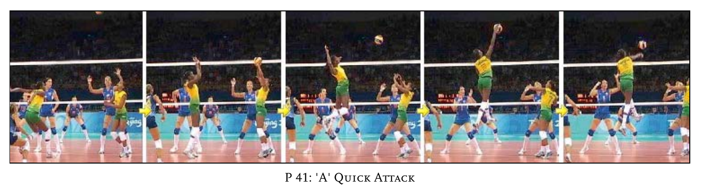
图3.4-1｜从左往右看，二传出手前后，近体攻手已在准备起跳击球。对照表格找几个动作时刻，体会攻传怎样接上。图源：FIVB一级教练手册，P41，印刷96页。
3.4.4 不同球路，需要不同的相遇办法
近身快球和边路较高的调整球，不能只用同一句“等球出来再跑”去处理。
近身快球的传球距离较短，攻传衔接紧，攻手要提前准备，二传也需要清楚攻手是否已经进入可配合状态。若两人彼此等到看得完全明白才开始行动，这个球往往已经赶不上。
边路较高的调整球则留下更多飞行过程。攻手可以读实际球路，调整助跑与击球选择，尤其适合原配合已经被来球打乱时，把进攻重新接起来。但球高不等于随便等：一直站在原地，等球快落到网口才启动，同样来不及。
边路高球并不等于只能保守回球。库雷克是力量型接应的代表之一；较高的传球给了攻手展开助跑的时间，而合适的离网距离和击球空间，仍是力量能够发挥的前提。
球路还包括远近、离网距离和飞行速度。看着更低的球，不一定更适合眼前这组人；把球传高，也不自动解决攻手准备太晚的问题。先确认球能到哪里、人能在哪里打，再共同调整。
左手和右手攻手的击球侧也不一样。二传给球时要想到这位队友的身体和助跑路线，不能只认一块地面位置。传扣配合最终是和具体的人相配。
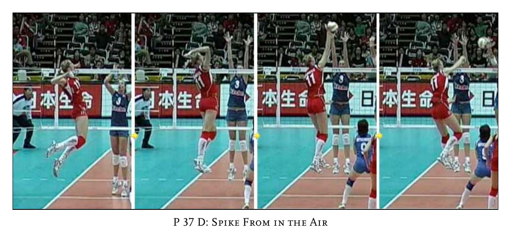
图3.4-2｜沿原图箭头看起跳后的引臂、击球与随挥。二传送来的球，要让攻手能在合适位置完成这一串动作，而不是人在空中再勉强追球。图源：FIVB一级教练手册，P37D，印刷93页。
3.4.5 没配上，按顺序找断在哪里
传扣失配后，先把来球条件说清，再看二传和攻手各做了什么。不要从最后一个碰球的人开始倒查“谁该负责”。
如果一传突然偏远，先讨论这球是否还适合继续原来的快球；如果一传条件正常，再看组织者是否及时准备、出球是否满足共同约定；攻手则看自己有没有留出空间，上步起跳与实际来球是否接得上。
找到了现象，调整也要具体。人已下落、球才送到，可以一起讨论来球是否改变了条件、起跳是否过早，以及组织能否更及时；球已到、助跑还没展开，就检查攻手准备与启动线索，也看传球是否突然超出了原来的约定。不要只让一边反复迁就，最后谁都不知道共同标准。
下一组练习可以只改一个变量。例如，先保持熟悉球路，让攻手更早离开接球位置进入准备；或暂时换成容易接上的较高球，确认方向与空间，再逐步加紧配合。一次又改高低、又改速度、又改上步，出了问题反而分不清哪项调整有用。
3.4.6 配得上以后，再看能不能让对面赶不上
传扣顺畅，首先让自己能打；进一步，才是争取让对方难以形成完整拦网。中间能及时形成进攻威胁，边路也有人准备，对方拦网就需要在不同选择之间判断。
选择还可能来自二传自己。丁霞的左手二次进攻，就是在分配球之外增加直接进攻的可能；对手准备拦谁、什么时候起跳，也因此多了一项需要判断的变化。
但把球一味压低、加快，可能让对方来不及，也可能先让自己来不及。若攻手只能伸手勉强碰过，原本想增加的压力就未必出现。要把本方失配和对方拦网反应一起看，而不能只追求球在空中飞得短。
可以对照两次自己的配合：一次球确实配上，攻手能主动选方向；另一次球很快，却没有合适的击球机会。先把前一种做稳定，再讨论怎样增加变化。下一章的快攻牵制和多点进攻，就从这里接着往前走。
3.4.7 读完，带走一个复盘办法
看传扣，先看同一颗球给了什么条件，再看二传触球时攻手准备到哪一步。 把“早一点、快一点”换成具体动作和共同参照，队友才能朝同一个方向调整。
好的配合不是两个人分别把动作做得最漂亮，而是彼此都知道，这一球怎样接着打。
自测回看
快球没打上，可以先认定攻手起跳太慢吗？
解答： 不可以。应先看一传条件，再看二传移动与出球、攻手准备，找具体衔接。
观察节奏，必须先记住统一秒数和编号吗？
解答： 不必。先用一传触球、二传接触与出球、攻手上步起跳和击球这些可见事件描述先后。
球传得更低、更快，就一定更有进攻效果吗？
解答： 不一定。先要让攻手稳定打得上，再看是否增加可用选择、是否使对方更难合拦。
下次上场或看球的小任务
看同一组队员的三次传扣，每球只记录两件事：一传给了什么条件，二传触球时攻手准备到了哪一步。最后两个人共同提出一个调整，下一组只试这一项，再看是否更好配合。
参考与继续阅读
本章自测回看
一个同学热身对垫很稳，比赛却接完就停、也找不到传球目标。怎样给他安排一小组练习，让对垫接上比赛任务？
解答： 让队友站在约定的组织目标附近，接球队员先把来球送到队友能处理的位置，触球后再接上自己的进攻或保护准备。练习中既看球的方向，也看接完后的下一步，不只数连续垫了多少下。可回看3.1.2、3.2.2、3.3.5。
同一轮里，主攻既要接发又要进攻。怎样安排结合部责任和接球后的移动，让这两项任务接得上？
解答： 来球前说清结合部谁主要接、邻近队友怎样支援；主攻接完后及时退出并留出助跑空间，其他人让开组织与进攻通道。若这一传使他来不及进攻，二传和其他攻手再按实际条件衔接，不能全队等一个尚未准备好的点。可回看3.3.2—3.3.3、3.4.2—3.4.3。
连续三轮一攻都断在第二下：一轮两个人抢着传，一轮没人补传，一轮传球时挡住了攻手。下次练习应先解决什么，怎样检查是否改善？
解答： 先解决组织交接与空间，而不是只加练扣球力量。说清常规组织者、补传者和传球目标，相关队员练习让出处理与助跑通道；再看完整回合里，第二下是否有人明确接过、攻手是否有空间继续准备。可回看3.1.3、3.3.3—3.3.5、3.4.1—3.4.2。
鼠鼠排球指南第4章
第4章 战术与比赛阅读
往前多看一步，也看看球网的另一边。
同样传到边路，一球面前已经站好两个人，另一球却只来得及形成单拦；同样说好拦直线，后排有时防得从容，有时还没反应过来球就落地了。只看最后得没得分，常会把组织、配合和临场变化都压成“这球打得好不好”。
这一章把镜头往前拉一点：先看中间与两翼的准备怎样影响对方拦网，再看本方网前和后排怎样共同防守，最后回到最常遇见的不到位球，重新安排谁传、谁打、谁接应。战术可以从这些具体选择读起，也可以从下一次社团比赛里试起。
读前想一想
对方总提前并到四号位拦网。给队友提调整建议以前，要先确认本方和对方的哪几件事？
上一球被吊球得分，队友决定所有后排都往前站。这样可能留下什么空当，怎样把短球和深球的责任接好？
一传偏出场外，副攻原来的快球已赶不上，对方又在边路等好。怎样把原计划改成还能执行的进攻与保护？
4.1 快攻牵制与多点进攻
中间跑了一个快球，为什么边上的扣球会更好打？
同样是一球传到四号位，有时主攻起跳，面前已经站好两个人；有时球到了，旁边的中拦才匆匆赶来。我们很容易把区别归到一句话：“这球传得快。”
往前多看一点，会发现中间也有人在准备。副攻靠近二传，完成助跑，对面中拦在他与边攻之间作选择。最后扣球的是主攻，这一球的机会却可能从更早的地方开始形成。
这一节就从这里读战术：先确认本方有哪些能打的点，再看这些准备怎样影响对方，最后看攻手怎样使用争取到的机会。
读前想一想
副攻已经跳起来了，能直接说他牵制成功吗？
二传组织出单人拦网，是不是已经等于得分？
把熟悉的背飞手势比给新队友，他却跑了近体快。开下一球前，最该先对齐哪几件事？
本节目录
4.1.1 多点进攻，先得有几个真的能打的点
场上站着三名攻手，不等于二传这一球有三个同样好用的选择。有人刚接完发球，还没来得及退开；有人已经起跳，球却还远在二传身后；也有人位置合适，传过去就能正常进攻。
“有几个点”，要数这一球真正传得到、赶得上、打得起来的选择。 一传给了什么条件，二传能在哪里处理，攻手准备到了哪一步，三件事一起决定答案。
比如，来球稳定地送到网前，副攻及时进入快球节奏，两翼也已经拉开，这时二传可以在几个方向之间组织。若一传飞向场外，副攻还照原来的时机跳完了，对方就未必需要继续顾虑这个快球。
这也是接发与无球准备的价值：接球的人给组织者留下选择，准备进攻的人再把这些选择变成现实。多点进攻由全队一起搭起来，不能只靠二传最后一下“变魔术”。
4.1.2 快攻先争取自己的进攻机会
我们通常说的近体快，是攻手在二传体前或侧前的近身位置完成快球；背快则把进攻放在二传身后的近身位置。先认清“相对二传在哪里打”，再看双方衔接怎样紧起来，就容易理解这些名字。
快球给对方留下的反应时间短，也要求自己人配合得上。攻手看一传，准备路线与起跳；二传及时赶到，把球送进攻手能处理的范围。球快到攻手只能勉强碰一下，便失去了主动进攻的意义。
副攻跑快球，首先是认真准备接到球、把球打好。 他有这样的机会，对方才有理由把拦网力量留给中间。只把动作做得很热闹，却始终接不上球，对手也会逐渐调整判断。
西蒙的快攻把高度、爆发力和速度放在了一起。这样的中间威胁首先能自己得分，对手才不能轻易把拦网力量全部移向边路。
练习时，与其只喊“再快”，不如说清哪里没接上：二传碰球时攻手还在远处，还是攻手已经下落球才送到？把时刻对齐，才知道下一次由谁调整。
图4.1-1｜从左往右看二传与近体攻手的配合：二传出手前后，攻手已经在积极准备起跳击球。快攻的“快”，离不开两个人提前接上的节奏。 图源：FIVB，P 41，印刷96页。
4.1.3 对方中拦要在几个选择之间判断
现在把视线移到球网另一侧。对方中拦既要顾中间，也想帮助边上的队友。他先应对快球，可能赶不及完整合拦；他提早向边路移动，中间又可能得到直接进攻的机会。
这就是“牵制”最容易看懂的地方：本方有一项真实威胁，让对方不能毫无顾虑地把人手集中到别处。
看球时，盯住三个动作就够了：二传触球前，中拦留在哪里；二传出球时，他是否已经起跳或开始移动；边攻击球时，他赶到了哪里。快攻是否可用、对手作了什么回应，把这两边连起来，牵制便有了具体内容。
中间没有拿到球，也可能参与了机会的形成。反过来，副攻跑了、跳了，也不能直接宣布“牵制成功”。要是球已经无法传到他手边，对手早早离开，他这一趟准备就没有产生预期作用。复盘应回到配合过程，找下一次能接起来的地方。
4.1.4 两翼得到的，是更有利的机会
快攻留住了中拦，二传把球送向两翼，边攻就有机会面对单人拦网，或者面对还没合严的双人拦网。对方来不及把整面拦网摆好，攻手可使用的空间往往更大。
不过，单人拦网仍然是拦网。一双手可以封住部分方向、碰慢球，也能直接把进攻拦下。后排同样在准备，攻手仍要观察球、拦网和落点，选择能完成的线路。
所以，看组织是否有效，可以先数拦网人数，再看位置与到位时机。两个人都跳了，中间却有明显空隙；一个人及时站好，手已经封住攻手习惯线路——这两种情况给进攻者的题目并不一样。
组织争取机会，攻手接着把机会用好。 一次没有得分，不会让前面的好准备自动失效；一次碰巧得分，也不等于传扣已经很顺畅。
4.1.5 向前后、左右展开进攻
多点并不只是在网前左、中、右各摆一个人。进攻还可以向二传身后展开，利用移动改变击球位置，也可以把后排攻手接进来。
背飞就是常见例子：攻手向二传背后的空间移动，常用单脚起跳，在移动中完成近网进攻。看它时，把助跑路线、起跳位置和击球位置连起来，别只盯最后落在哪个点。
后排进攻则让前后方向也出现威胁。后排队员从进攻线后合法起跳，可以在空中向前并落入前区；起跳时脚不能触及或越过进攻线。前后排身份和起跳限制，仍按第2章的规则执行。
还有交叉、梯次等配合。入门先抓住区别：交叉重点看攻手路线怎样交错；梯次常见的是一名攻手在前方形成快球威胁，另一人在其后方、稍离网处进攻。球名帮助我们描述动作，真正要看的是谁何时在哪里能打。
对于社团，先把一个快球和一个边路球接稳，已经能开始理解这些关系。更多跑动要服务于可执行的进攻，不能挤住队友的助跑与传球通道。
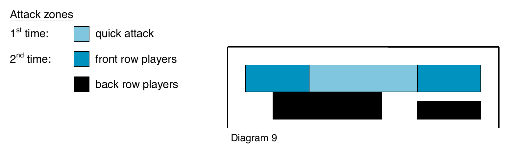
图4.1-2｜浅蓝表示快攻，深蓝表示其他前排进攻，黑色表示后排进攻示意。把近网、两翼和后排连起来看，才能理解二传为什么需要不同的进攻选择。 图源：FIVB，Diagram 9，印刷14页。
4.1.6 进攻前的战术手势
发球还没过网，二传已经向攻手比了一个手势。这个小动作，是在提前商量：“这一球，你准备怎么打？”攻手先知道要跑什么球，才来得及把助跑、起跳和二传的出手接起来。
战术手势由队内约定，同一个手型在不同队伍里可能代表不同的球。 下面选用中文教学资料中介绍的一套手势，先把常见手型和球路对应起来；加入一支队伍时，再和本队二传对齐含义。这里讲的是队员之间的进攻暗号，裁判手势见附录A。
| 手型示意 |
这套约定中的球路 |
配合时抓住什么 |

只伸拇指 |
近体快 |
在二传体前或侧前的近身位置打快球，攻手提前进入起跳节奏。 |
只伸小指
其余四指收起 |
背快 |
在二传身后的近身位置打快球，重点是认准相对二传的位置。 |
只伸食指 |
短平快 |
攻手在二传体前、离二传稍远的位置打快球，传球沿网展开。 |
伸食指、中指 |
背飞 |
攻手向二传身后移动，常用单脚起跳，衔接好移动中的击球点。 |
握拳 |
半高球 |
比快球留出更多时间，攻手根据传球调整助跑和起跳。 |
五指张开 |
平拉开 |
把球较快地送向边路，攻手要提前拉开、准备助跑。 |
伸拇指、小指 |
双快 |
两名攻手同时准备快攻，让二传有两个快球选择。 |
手势一般在发球前沟通，二传给信号，相关攻手看见并确认；回合开始以后，大家再跟着来球调整。比如提前约好近体快，一传也送到了网前，副攻便按节奏准备。若一传冲向场外，二传已经要追着救球，就应改用当时能完成的组织，边攻也及时准备调整球。手势确定的是准备方案，最后传什么，还要看这一球给了什么条件。
社团开始用时，先挑两三个已经练过的球路就够了。把“手势是什么、从哪里起跑、球传到哪里、一传不到位怎么办”说清楚，比一次背下整张表更有用。本社小轮转仍按第2章的前后排变换和后排二传插上执行；战术手势用来沟通进攻选择。
4.1.7 把顺畅与失配放在一起看
下面用两个教学情境比较，不对应某一场真实比赛。
情境甲：一传送到可组织的位置，副攻及时准备近体快，两翼拉开。对方中拦先应对中间，二传转给四号位，主攻面对单人拦网完成进攻。这个过程里，快球本身可用，对方也作了回应，可以具体解释中间怎样帮助了边路。
情境乙：一传偏离网，二传向后追球。副攻仍照原节奏跳完，二传碰球时他已经落下；边攻也直到出球才准备。对方中拦提前向四号位移动，最后形成完整双人拦网。这里先要解决的是传扣脱节，单纯要求二传“传得更快”未必能帮忙。
下一次交流，可以把“没牵制住”改成更有用的提醒：“这球二传追得远，我们重新看球准备”“中间还能打，边上也提前出来”。提醒越接近大家当时能做的动作，越容易带来变化。
4.1.8 记住这三件事
多点进攻要有几个真实可用的选择；快攻先争取自己的进攻机会，再可能改变对手的拦网分配；两翼得到有利条件以后，仍要完成判断与击球。看懂这一球，要把来球、队友准备和对手回应接着看。
4.1.9 自测回看
副攻已经跳起来了，能直接说他牵制成功吗？
解答： 不能。先看快球是否仍然可传可打，再看对方中拦有没有为此停留、起跳或改变移动。
二传组织出单人拦网，是不是已经等于得分？
解答： 不是。单拦仍能封方向、触球甚至直接得分，攻手还要处理好球。
把熟悉的背飞手势比给新队友，他却跑了近体快。开下一球前，最该先对齐哪几件事？
解答： 先确认本队对这个手型的含义，再说清攻手从哪里起跑、准备在哪里击球、二传要送什么球。战术手势按队内约定使用，双方还要知道一传改变条件时怎样调整。
看球试一次： 选一个能看到双方全景的完整回合，看三遍：第一遍只跟本方副攻，第二遍跟对方中拦，第三遍跟边攻。各写一句看见的动作，再把三句话连起来。先描述过程，再解释机会怎样形成。
出处与延伸阅读： 快攻、进攻节奏和拦网条件参照FIVB《Top Volley》第15—19、22—27页；攻手准备与中间攻手沟通参照USA Volleyball的攻手教学；组织选择参照FIVB二级教练手册进攻体系部分；后排进攻依据FIVB 2021—2024规则第13条。常见战术名称与采用范围见战术复核。场景引入借鉴闪电排球第21、22篇从整体配合观察局部动作的方法；本节情境与表述另行编写。
战术手势的赛前沟通用途参照USA Volleyball《Recipe for a Setter》；队内约定的特点参照《中国体育报》对二传手势的解读（新浪转载）。本节表格采用“排球”发布的《排球常用的战术手势》中的一套对应方式，作为约定示例。
4.2 拦防配合的基本方法
网前挡住一部分方向，后排就有了更清楚的准备。
对方准备从边路进攻，网前两个人跳了起来，后排也都蹲好了。球却从两人之间穿过，落在身后。前面觉得“后排怎么没接”，后面觉得“不是说好拦住这里吗”。
这类球最值得一起看。先别急着问谁反应慢：网前原本想挡什么？这一球实际挡住了什么？后排又是按什么准备的？
拦网和后排防守，要共同处理同一次进攻。把这层关系说清楚，六个人的准备才会接起来。
读前想一想
赛前约定双人拦网，后排就能默认前面已经合严吗？
拦网碰慢球，后排防起后由主攻扣球得分，这一下算拦网得分吗？
中拦发现赶不上合拦时，一句“后面注意”为什么不够？可以改成什么提醒？
本节目录
4.2.1 拦网与防守，共同应对一次进攻
拦网最显眼的结果，是直接把球拦死。但不少回合还会往下走：球绕过了手，碰手后减速，或者改变方向飞向后场。后排要接的，正是经过这层变化的来球。
网前可以限制攻手的一部分进攻方向，也可以触球改变球速与轨迹；后排则在剩余空间里准备，把球防起来交给下一位队友。前后排配得好，拦网没有直接得分，也能帮助全队争取反击。
因此，防守站位不能只看哪里空。前面重点拦直线，后面就要相应安排斜线；前面只有一个人，后排面对的空间又会不同。站好以后仍要观察，来球变了就继续调整。
看比赛时，先把镜头放宽一点。只看网前，容易漏掉队友已经为某条线路作好的准备；只盯后排，也可能不知道他为什么提前站在那里。
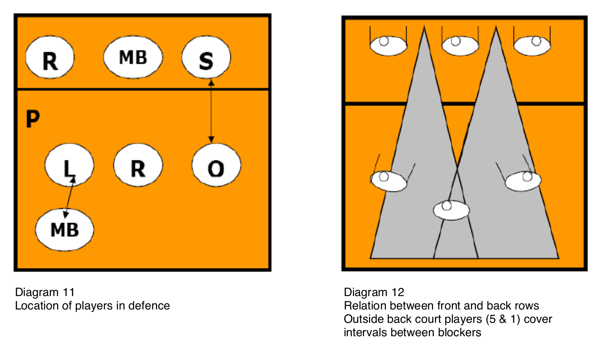
图4.2-1｜先看左图的岗位安排，再看右图网前与后排之间的线路：后排需要照顾网前队员之间留下的来球通道。拦网与防守要放在一起理解。 图源：FIVB，Diagram 11–12，印刷21页。
4.2.2 先说清网前重点拦什么
边路进攻常用“直线”和“斜线”来帮助沟通：直线大致沿同侧边线打向后场，斜线则穿过场地打向另一侧。实际球路有宽有窄，这两个词先帮大家辨认主要方向。
约定“重点拦直线”，通常意味着边上的拦网人要先找好对应位置，手在网上形成有用的阻挡，中间队友再向他合拢。约定换了，网前的位置和后排的准备也要一起改变。
这里的“拦住”是配合意图，执行时还要看人有没有到位、跳得是否及时、手有没有伸到有效位置。不能刚说完“拦直线”，后排就把整条直线当作不会来球的地方。球可能从手旁边漏过，也可能擦手改变方向。
社团可以先统一一套简单安排，不必每球换口令。开球前说清重点，对方打过几次以后，再交流“直线总从哪儿漏”“短球谁来照顾”。大家知道彼此准备做什么，才有条件改得更好。
4.2.3 后排接着照顾深球、短球和空隙
下面用一组教学例子把分工接起来：对方在四号位进攻，本方右前方的边拦与中拦准备双人拦网，约定优先封直线。
网前两人按约定找位置、合拢。其余四人分工：未参加拦网的前排向内收，准备小斜线与近网短球；后排斜线侧重点准备较大的斜线；中间后排照顾深处；靠直线一侧的后排仍留意漏过拦网的球和触手变化。相邻两人的接球交界，也在开球前说好谁先接、谁补。
这套安排让“前面挡什么、后面接什么”有了明确对应。若短球经常落在大家都赶不到的位置，就要调整短球责任与起始位置；如果攻手连续打深，负责深处的人也不能一味跟进网前。
这些职责随本方人员、对方击球位置和实际拦网一起调整。 换到另一侧进攻，要重新对方向；本社没有专职自由人时，也由场上队员共同承担防守。不能把某个区号写成永久的短球位或斜线位。
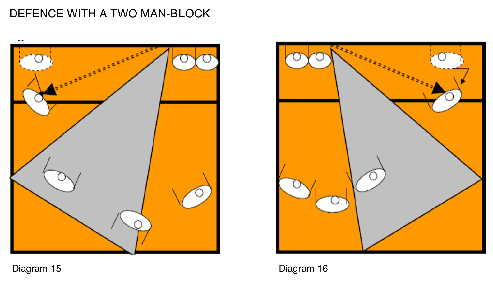
图4.2-2｜图中是两种双人拦防示例。网前两人并到一侧时，其余队员也在分工照顾短球、深处和空隙；不只是把后排三个人平均铺开。 图源：FIVB，Diagram 15–16，印刷23页。
4.2.4 单拦、合拦与没合严，后面看到的条件不同
赛前安排双人拦网，比赛里却未必每次都能组成。中拦刚应对完快球，边上已经开始扣球；或者两人都赶到，却在手之间留出一道缝。后排需要读这一球实际形成的拦网。
单人拦网时，一个人仍能挡住部分方向、碰慢球或直接得分，但其余队员要照顾更大的防守范围。双人及时到位并合拢，通常能给后排更清楚的防守条件；两人没有合严，缝隙便需要特别留意。
对后排来说，观察不只是“前面跳了几个”。还要看他们在哪里、是否来得及把手送上去。原本准备防斜线，发现中间留缝，就要及时调整，而不是站在原处等待计划中的来球。
网前也要让同伴知道情况。能提前提醒“单拦”“来不及”，就给后排更多准备时间；球结束后再具体说“这球我没并上”，比一句含糊的“后面注意”更有帮助。
图4.2-3｜从左往右看两位拦网队员怎样靠拢、起跳和伸手。两个人同时在空中，还要尽量在网上形成有效配合。 图源：FIVB，P 70，印刷115页。
4.2.5 触球减速，也是在给队友机会
对方一记重扣，球碰到拦网人的手，速度降下来，后排顺利防起。这一下没有立刻结束回合，却把难接的球变成了可处理的球，是值得看见的配合。
不过，触到球会有不同结果：有的直接拦死，有的被本方接起，有的触手飞出，有的改了方向仍然落地。判断作用时，把触球以后发生的事接着看，不能把每次碰手都叫作成功防守。
技术统计也要分清。直接通过拦网拿到这一分，记作拦网得分；碰慢以后由队友防起、再靠进攻得分，最后的得分事件是进攻。社团可以另外记录“有用拦触”，专门观察它有没有帮助继续组织，不把两项混在一起。
规则还给了我们继续处理的空间：拦网触球不计入本方三次击球，拦网后仍有三次机会，参与拦网的人也可以接第一下。 所以手一碰到球，大家就该继续找球，别等着确认谁刚才摸到了。
4.2.6 防起以后，再把人和球组织起来
后排把球垫起来，防守这一步做成了，反击才刚开始。球在哪里，谁能接第二下，哪些人能退开准备进攻，马上又有一轮衔接。
二传若没有处理第一下，就及时进入组织；二传已经防了球，队友按照平时的补传约定接第二下，并喊清楚。刚落地的拦网人要看球、准备下一项任务，其他人给处理者留出通道，再进入进攻或保护。
假如只能把球送回去，全队也要及时转入下一次防守。对方还会组织下一球，不能为了刚才漂亮的救球停下来。一次防守真正接成团队能力，要靠这些普通动作反复完成。
下次回看一个救球，把画面多放几秒：球是怎样防起来的？谁接了第二下？队友有没有重新准备？看完这段，才更容易判断哪里衔接顺，哪里总会断开。
4.2.7 记住这三件事
拦网与后排防守要配成一套；后排按实际形成的拦网和来球继续调整；球防起以后，接第二下、准备进攻和保护还要接着做。分工说清楚，变化时有提醒，六个人才是在一起防一颗球。
4.2.8 自测回看
赛前约定双人拦网，后排就能默认前面已经合严吗？
解答： 不能。还要看这一球两人是否到位、手之间有没有缝，并按实际情况准备。
拦网碰慢球，后排防起后由主攻扣球得分，这一下算拦网得分吗？
解答： 不算。可以另记有用拦触；这一分的直接得分事件是进攻。
中拦发现赶不上合拦时，一句“后面注意”为什么不够？可以改成什么提醒？
解答： “后面注意”没有说明网前发生了什么。及时喊清“单拦”或“来不及”，能让后排知道本次拦网与计划不同，按实际留下的方向和空隙继续准备。
看球试一次： 选对方在同一侧的三次进攻。每次先看网前实际形成了什么拦网，再跟一名后排队员：他准备接哪里，来球后怎样动，球防起后又做了什么。把过程写清，不只记录最后有没有碰到球。
出处与延伸阅读： 拦网与后排防守的关系、单拦及双人合拦示例参照FIVB《Top Volley》第20—29页及FIVB二级教练手册防守与拦网相关部分；拦网后的三次击球依据FIVB 2021—2024规则第14.4条。职责与方案的采用范围见战术复核；拦网得分与其他效果的区别见技术统计研究。本节分工场景为教学例子。
4.3 不到位球的进攻组织
第一下偏了以后，先看谁还能把下一下接着处理。
先设想一个社团里常见的情景：一传飞向边线，二传追了过去；原本准备快球的人停下，边攻也站着等。球还没落地，场上却只剩二传一个人在忙。
这一球当然难打，但原配合用不上，并不等于其他五个人已经无事可做。球去了哪里，下一下由谁处理，谁还能准备进攻，队友怎样接应，仍然可以有清楚的安排。
不到位球的组织，就是在改变了的条件里，把下一步重新接起来。 不求每次都救成漂亮快攻，先让困难来球不至于带着全队一起停住。
读前想一想
一传被冲到场外，补传者怎样把“随便往网前垫一下”改成有去处的组织？
普通后排队员在前区补传，队友能正常进攻吗？
困难球进攻没得分，就能直接判定攻手处理差吗？
本节目录
4.3.1 先看这一球还剩什么条件
不到位，不只指球落在某个目标圈外。球离网远、偏向边线、过低、太贴网，或组织者根本赶不到，都可能让原定进攻难以继续。
这时先看三件事：球在哪里，谁来得及处理，谁还有进攻准备。别一看到球偏，就在脑中宣布“只能送过去了”；也别不管球变成什么样，都坚持原先的快球。
来球离网，但高度足够、二传也能赶到，仍可能传出可打的调整球。球虽然靠近常用组织位置，却又低又急，也可能需要先救起来。判断条件，得把球和人放在一起看。
刚防起来的球也一样。第一下已经顶住对方进攻，接下来就努力把它转成自己的机会。救球者完成一碰，其余人及时判断，不要等他站起来以后再决定下一步。
4.3.2 让下一次触球有明确的人负责
二传能及时处理，就尽量继续组织；若二传已经接了第一下，或明显来不及赶到，队友要接过补传。有人喊清“我传”，攻手才知道该围绕谁、往哪个方向继续准备。
补传不必永远只归一个位置。队里可以预先约定常见的接替顺序，临场还要看谁离球近、谁能稳定处理、谁需要保留进攻准备。两个人都想帮忙时，先明确由谁触球，另一人转去接应，避免在第二下再次撞在一起。
普通后排队员可以传球，也可以在前区组织。 后排身份主要限制他自己的进攻和拦网，不会因为他补传，就让队友失去前排进攻资格。
自由人则有一项要单独记住：自由人在前区及其延长区域用上手手指传出的球，队友不能在球整体高于网上沿时完成进攻。传球本身不自动犯规，限制落在随后的进攻上。前区外作同样的传球，不触发这一项限制；自由人在前区用前臂垫传，也不触发这项上手手指传球限制。完整情境回看2.1节。
补传者判断得早，既能选择合适的处理方式，也让攻手少一点猜测。规则认识和场上沟通，在困难球里会一起派上用场。
图4.3-1｜球的位置不方便上手传时，垫传也可以承担组织任务。先到位、认清目标，让攻手接下来有球可处理。 图源：FIVB，P 29，印刷85页。
4.3.3 先给攻手一个能处理的球
补传最先要解决的，是球出去以后有人能接着打。方向清楚、空间合适、队友来得及，常常比球飞得很快更重要。
常见做法是把球调整到可用的一侧，适当留出飞行过程，让攻手能观察球路、展开助跑。传球别挤得太贴网，也别一味往边线外甩，让队友只能跑到场外追着碰。
“传高一点”有时能帮忙，但不是任何情况下都越高越好。补传者的位置、剩余时间和攻手在哪里，会一起影响选择。离网很远时，先保证方向与可处理性；人在网前、攻手也已经准备好，就可以按眼前条件主动组织，不必每次都停下来重新开局。
攻手要给补传者清楚的去处。及时让出助跑空间，必要时喊明自己能处理的一侧。补传者不是面对一张空球场传球，他需要看见真实可用的人。
4.3.4 攻手也要改变准备和选择
调整球传出来，攻手要读实际球路，而不是继续跑原来那套节奏。来球远了，助跑位置要跟着调整；球更高，就利用飞行过程观察；球低得赶不上完整助跑，就选择眼下能控制的处理。
有机会扣，就争取有目的地进攻；扣球空间不好，可以结合对方站位选择轻打、吊球或可控回球。不要把每个困难球都硬砸，也不用因为第一下偏了，就自动送一个毫无目标的高球过去。
对方已经并好拦网时，攻手更要看可用路线。能避开拦网、利用拦网触手，或把球处理到对方不方便组织的位置，都是可以逐步学习的选择。先选自己确实能完成的办法，别为了模仿精彩球，把原本还可继续的回合直接打丢。
后排队员参加进攻时，还要记住自己的身份：触球时球整体高于网上沿，不能从前区起跳完成进攻，站在前区完成同样的进攻也不行。从进攻线后起跳、起跳时不踩线，可以在空中击球后落入前区。具体判定见2.1节，别在救急时忘了这一条。
4.3.5 其他人继续留路，并准备保护
困难球不是“交给强攻手，其他人看结果”。补传者追球，需要通道；攻手调整助跑，需要空间；球打出去后，还可能被拦回来，需要队友保护。
没有接第二下的人，先别横穿到处理者面前。看清进攻方向，再进入自己能照顾的保护范围。近处有人准备接短反弹，较远处也要有人顾及弹得更远的球，别所有人都围到攻手脚下。
如果只能回球，球还在自己一侧时，先把这次处理完成；球送到对面后，全队及时接回拦防准备。对方往往有机会重新组织，这时继续站在原地看刚才那次救球，很容易又把下一次机会让掉。
从接防到补传、从进攻到保护，每个人至少知道自己的下一步，难球就不会只靠一个人四处奔忙。
4.3.6 复盘调整球，先还原它有多难
一次调整攻没得分，先别只说“强攻不行”。把第一下的来球、补传给出的球路、攻手面对的拦网，以及最终处理分开看。
比如，第一下已经偏到场外，队友仍把球救回并给到可打一侧，攻手面对双人拦网选择继续制造压力，和舒服到位球面对单拦，是不同条件。把两种球混在一起，只比较谁得分多，会漏掉承担困难任务的人做了什么。
但“球难”也不等于不用复盘。可以具体找一次本来有机会的衔接：补传前有没有及时喊清？球能否少贴一点网？攻手是否还有空间却提前放弃准备？保护者是不是等到球被拦才动？每次只挑一项，让下一次真的有办法改。
技术统计也从这里进入：记录进攻结果时，保留“到位组织”还是“困难调整”的情境，并写下对应球号。进攻得分和直接失误分开记，之后才方便回看；后续技术统计专题会再展开，这里先保留球号、情境和结果。数字帮助找球，具体过程帮助解释球。
4.3.7 读完，带走三个问题
谁处理下一下？谁还能准备进攻？其他人怎样接应？ 原配合被打乱，就用这三个问题重新接起任务。
困难球有时能争取得分，有时只能先把回合留下来。大家做的每一步，都是为了让下一次处理还有办法，而不是球一偏，全队就只剩等待。
自测回看
一传被冲到场外，补传者怎样把“随便往网前垫一下”改成有去处的组织？
解答： 先找谁来得及准备进攻、球能送到哪里，让这次补传有明确对象和可处理的球路。攻手根据补传位置重新准备，其他人留出通道；困难时也尽量把球交到队友能继续打的位置。
普通后排队员在前区补传，队友能正常进攻吗？
解答： 可以。普通后排队员补传不触发自由人前区上手手指传球的特殊限制；各人的自身进攻资格仍要符合规则。
困难球进攻没得分，就能直接判定攻手处理差吗？
解答： 不能。先看第一下、补传和实际拦防，再评价当时的可行选择；明显可改善的失误也要具体复盘。
下次上场的小任务
找一个困难回合，第一下之后分别说出谁处理、谁可攻、谁保护。下一次上场只补一个经常空缺的任务，例如补传喊清、给攻手留路或及时保护，打完再看这一处有没有接顺。
参考与继续阅读
本章自测回看
对方总提前并到四号位拦网。给队友提调整建议以前，要先确认本方和对方的哪几件事？
解答： 先看一传和二传位置是否允许多点组织，中间攻手有没有真实可打的快球、两翼是否及时准备；再看对方中拦何时向四号位移动、最后形成了怎样的拦网。条件允许时再用中间与其他进攻点增加选择；球不到位时，先采用能完成的组织。可回看4.1.1—4.1.4、4.3.3—4.3.4。
上一球被吊球得分，队友决定所有后排都往前站。这样可能留下什么空当，怎样把短球和深球的责任接好？
解答： 全往前站容易让后场深处失去照顾。先结合实际拦网和对手的击球位置，明确谁照顾短球、谁留意深处、相邻区域怎样交接，再调整相应队员的位置；一次丢分不应让全队挤向同一个落点。可回看4.2.2—4.2.4。
一传偏出场外，副攻原来的快球已赶不上，对方又在边路等好。怎样把原计划改成还能执行的进攻与保护？
解答： 先由能及时、合法处理的队友接过组织，把球送给来得及准备的攻手。攻手按实际球路重新上步，面对已经到位的拦网选择自己能控制的处理；其余人让出通道并跟进保护。不要强行补完已经失效的快球，困难球也要尽量有目标地打下去。可回看4.1.1、4.3.2—4.3.5。
鼠鼠排球指南第5章
第5章 人物风格与排球发展
今天看起来理所当然的分工，也曾是球队反复尝试后的选择。
看熟几场比赛以后，你可能会发现：场上都是六个人，有的队接发铺得开，有的队让少数人多承担；同一支球队换了一批队员，进攻节奏也跟着变了。再往前翻，甚至会看到没有自由人的比赛。我们熟悉的排球，一直在变化。
这一章先从接发体系入手，看看第一下怎样影响后面的进攻；再走近几位教练，理解他们怎样根据人员作取舍；最后借自由人制度，把规则、位置与打法连起来。读完以后，希望你能带着“这套安排解决了什么问题，又需要什么条件”的眼光，看球，也看自己的队伍。
读前想一想
两支队伍都采用三人接发，为什么仍可能打出很不一样的进攻？
为社团介绍一场没有自由人的历史比赛，怎样说明它与今天的不同，又避免把过去的打法简单评价为落后？
有人把美国队的成功概括成“接发的人越少越先进”，又把意大利女排的金牌归因于一句口号，这两种说法共同漏掉了什么？
5.1 接发体系的发展与选择
发球飞过来之前，球队已经在为第三下作安排。
同样是六个人在场上，有的队把几个人铺开接发，有的主要交给三个人，有时又只看到两个人承担大片区域。刚开始看球，很容易把这些阵形理解成站位图：记住几个人站在哪里，就算学会了一套接发。
可一传接起来以后，差别才真正显出来。谁能马上助跑，谁刚接完球还在找空间，二传从哪里插上，都和刚才的分工有关。接发体系的变化，连着整个进攻怎样发动。
读前想一想
从多人接发改成两人接发，除了两个人接得稳，还要确认什么？
采用三人接发，是不是每个人平均负责三分之一的场地？
对方从连续压深区改为连续发短球，原来的三人接发一直漏球。人数不变时，还可以调整哪些分工？
本节目录
5.1.1 接发阵形首先是一张分工表
接发的人数，指主要承担第一下的人数。其余人仍要看球、应变，只是常规任务可能是准备快攻、拉开助跑，或赶到组织位置。阵形后面藏着一张任务表：这一球谁先接，接完以后谁准备打，来球偏了又由谁补传。
因此，看阵形可以分两步。先在发球前找主要接发者，再把目光留到第一下之后。接球队员是留在原地，还是退开准备进攻？退出接发的攻手有没有及时出现？二传是否顺利找到球？这些衔接，才说明分工有没有起作用。
第3.3节讲过结合部与喊话。到这里，可以把它们放大来看：每个人知道自己负责什么，邻近的人也知道怎样接上，整队的第一攻才有较稳定的出发点。
5.1.2 多人接发：铺开以后，还要把边界接起来
校园初学者比赛里，常能看到多人分散接发。教学中也会用到W形接发，把五名队员安排成前后错开的覆盖。它能让队员先认识短球、深球与左右责任，减少每个人常规需要照顾的范围。
人数多，也增加了需要交代的边界。短球落在前后两人中间，前面的人以为身后会接，后面的人又怕撞上；边线球飞来，旁边的人都伸手，结果互相干扰。漏球有时并不缺人，缺的是明确的优先与交接。
多人接发还会影响下一攻。某位前排攻手向前接短球，接起以后离理想助跑位置很近，就需要及时退开；有人后退接深球，起身后也需要重新找到进攻方向。安排接发时，把这一步一起考虑，才不会出现球接得挺好，前排却没人准备打的尴尬。
5.1.3 比尔与美国队：改的是一整套连接
20世纪80年代，美国男排的一次调整很有代表性。美国排协记载，在1982年世锦赛取得第13名后，道格·比尔（Doug Beal）与教练组实行了包括两人接发、多点后排进攻在内的一组改革。1984年，他率美国男排夺得洛杉矶奥运会金牌。
比尔在后来接受采访时回忆，1983年夏天，球队把原来的五人接发改为主要由基拉里（Karch Kiraly）和贝尔津斯（Aldis Berzins）两人承担，从而获得更多进攻变化。值得学的是这条连接：可靠的一传承担者接过更多责任，其他攻手便有机会更早准备，前后排的进攻也能一起组织。
把这段历史只记成“两个人比五个人好”，会漏掉最关键的条件。那支队伍有能胜任大范围接发的人，也有相应的进攻人员、组织能力和训练积累。只减少接发者，却接不起来，后面的变化就没有了基础。这是一支球队完成的成套调整，不能把所有环节归成某个人凭空发明的一招。
图5.1-1｜左为三人接发，右为两人接发。R为接发型攻手，L为自由人，MP为副攻，OP为接应，S为二传；左图省略了二传标记。这是分工示意，不能直接照排发球瞬间的完整站位。图源：FIVB《Top Volley》，图D2—D3。
5.1.4 三人接发：分担压力，也调整进攻的出发点
职业比赛中，两名主攻与自由人承担三人接发，是很常见的安排。多一名主要接发者，能够分担覆盖和移动压力；同时，参与接发的攻手也需要处理好接球与助跑之间的转换。
三个人的任务通常并不完全平均。自由人可以在合适的轮次承担更大面积；某位攻手要准备前排进攻，队友可以帮助照顾他的邻近区域；对方盯着某人追发，球队还可以调整深浅与左右的分工。具体怎么分，取决于能力、轮次和发球威胁。
接发人数与短球责任也要分开看。一名主要准备进攻的队员，仍可能处理直接落向自己的短球。队友的分工能帮他腾出准备时间，却不能替他把所有突发情况消掉。观察一支队伍时，留意谁在常规接发之外接过短球，也能看出阵形怎样应对变化。
图5.1-2｜两张是不同场景的接发教学示例，蓝线为原书标识。找出主要承担一传的人，再看其余队友准备做什么；不要把两张图当成同一球的连续画面。图源：FIVB《Level I—Coaches Manual》，P62。
5.1.5 发球、人员与规则，一起推动选择
发球会逼着接发体系回答新问题。对方压深区，接球队员需要有向后的准备；连续发短球，前面的责任又要明确；强跳发与飘球带来的判断、移动和控制压力也不同。一套阵形在这一局好用，换一名发球人后，可能就要挪一点、分一点。
队伍的人也在改变。有两名非常稳定的接发者，可以尝试让他们多承担；有能接能攻的主攻，就能把接发后的进攻转换接得更紧；自由人的加入，又让一些后排任务获得了专门承担者。规则提供可用的安排，球员的能力决定安排能做到哪一步。
所以，接发体系的发展并不是一路把人数越减越少。减少接发者带来进攻准备上的机会，也把压力集中到少数人身上；增加承担者能分担覆盖，也需要处理更多交接。球队是在这些收益与代价之间找适合自己的方案。
5.1.6 把历史问题带回本社
本社的小轮转按约定执行：前后排变换，发球按照正常轮转执行，后排二传插上，不进行跑位。 在这个前提下，先把现有位置上的接发责任说清，不需要照搬职业队的换位路线。
可以围绕一轮接发确认四件事：哪些人主要接？短球和结合部谁优先？后排二传从哪里插上？接完球的人接下来准备进攻还是保护？如果有人要从接发任务中退出，余下的人能否覆盖，也要一起试。
练习时，连续观察一组同样的发球，记录球有没有接起来、二传是否有组织条件、前排有几个人真正准备好进攻。一次只调整一项，再看下一组有没有更顺。这样得出的安排，才是属于这组人的接发体系。
本节小结
接发阵形把第一下的责任分出去，也为后面的传扣安排出发点。理解它，可以顺着“谁接—谁传—谁准备打”看完整个回合，再判断人数与位置是否合适。
本节自测回看
从多人接发改成两人接发，除了两个人接得稳，还要确认什么？
解答： 还要确认覆盖与短球责任、结合部交接、二传的组织路线，以及退出接发的攻手能否及时准备进攻。减少人数带来的进攻机会，需要整套衔接来兑现。
采用三人接发，是不是每个人平均负责三分之一的场地？
解答： 通常不会机械平均。队员的接发能力、这一轮的进攻任务、对方的发球与来球深浅，都会影响分工。需要明确主要责任与相邻交接，再随情况调整。
对方从连续压深区改为连续发短球，原来的三人接发一直漏球。人数不变时，还可以调整哪些分工？
解答： 可以调整接发者的深浅、短球优先处理者和相邻队员的支援范围，同时确认接球后谁还能准备进攻。先把漏球的区域与交接找清，不必一遇到问题就增减接发人数。
带着一个任务看球
看五个接发回合，先只记主要接发人数，再看其中一名攻手接完以后去了哪里。把“接起”和“准备好进攻”分开观察，就能看到阵形给了他多少空间。
5.2 教练理念与球队风格
球队的风格，藏在一遍遍出现的选择里。
看球时，我们很容易说一支队“打得快”“防守好”“特别有韧劲”。这些印象有用，却还可以往下走一步：快在哪里，谁在保证这个快？防起球以后，怎样把球重新组织起来？换上一名队员，又是在解决什么问题？
教练的想法会落到这些安排里。认识几位名帅，可以帮我们把场边的指挥和场内的配合连起来，也让“这队是什么风格”有更具体的答案。
读前想一想
同一名教练换了二传和攻手后，把原来的进攻节奏放慢了一些，这就说明他放弃原有风格了吗？
排阵容时，把扣球最强的六个人一起放上场，通常就能得到最强的队伍吗？
队友连续失误，暂停时只提醒“冷静一点”，还缺少什么？
本节目录
5.2.1 把风格落在场上选择里
判断球队风格，可以先看几个经常出现的选择：接发主要交给谁，来球好时怎样拉开进攻，球偏了优先交给谁，拦网与后排怎样分工，防起以后怎样再组织。这些选择连续出现，风格才慢慢清楚。
还要留意变化。同一队伍面对不同对手，可能调整发球目标；某位攻手状态不好，也可能增加另一侧的使用。临场改变不等于球队没有特点，反而能说明它最想保住什么。
“某国队都这样打”只能提供很粗的印象。把视线放到具体时期、具体阵容，更容易发现教练为什么作出当时的安排。下面三个例子，就从人员互补、体系延续和当下任务三个角度来看。
5.2.2 郎平：把人员特点接成团队能力
里约奥运会前，郎平在采访中谈过阵容的互补：年轻攻手与有经验的二传搭配，朱婷、张常宁的进攻能力与惠若琪的后排保障相互补充。名单里的每个人，都放在整队需要中考虑。
她谈袁心玥的快攻时，也把问题拆到了配合里：来球不到位、攻手上步踩不准，都会影响节奏；二传又需要了解攻手的特点，把球传得高、准、合拍。这让我们看到，教练研究的是一组人如何接上。
这种看法很适合带回社团。一次快球没配上，可以一起检查来球、上步和出手时机；安排一名进攻很强的队员，也要考虑谁帮他接发、他接完怎样再攻。互补落实到具体一球，才会成为团队能力。
5.2.3 雷森德：原则延续，安排随人调整
巴西男排的速度与连续进攻给很多球迷留下深刻印象。教练贝尔纳多·雷森德（常称Bernardinho）在访谈中，却明确谈到要根据手头的球员调整打法：攻手换了，适合的球速会变；二传从里卡多换成布鲁诺，配合也经历了重新寻找的过程，卢卡斯与布鲁诺的中路联系就是其中一部分。
他同时重视回合的延续。第一攻没有直接结束，球队仍要争取下一次机会；困难球怎样处理、拦网后面怎样防，都是体系的一部分。第4.3节讲过的不到位球组织，在这个角度下就更容易理解：好球队需要顺球的威胁，也需要困难时继续比赛的能力。
他的做法也提醒我们，队里换了人，要跟着检查安排。原先接得住、跑得到、配得上的球，换一组人未必还一样。保持共同的比赛要求，再根据实际能力调整节奏，队伍才接得起来。
5.2.4 贝拉斯科：把注意力放回眼前这一分
2024年意大利女排赢得巴黎奥运金牌后，主教练胡里奥·贝拉斯科（Julio Velasco）与队员多次谈到“此时此地”的意识。上一分已经结束，后面的比分尚未发生，队员需要把注意力交回眼前能完成的任务。波塞蒂谈到，这帮助情绪丰富的球队保持平静；法尔则提到了相互帮助与更安心地发挥。
把这个想法用在场上，可以很具体：刚才接飞了，下一球先确认站位和来球；二传追球，附近的人接过补传任务；被拦一次，重新观察拦网与可用线路。情绪得到安放，行动也有了落点。
球队的金牌还连着球员能力、教练组工作和实际配合。Volleyball World的赛事报道也强调，当下意识是多项改变中的一项。欣赏一句有力量的话，同时看它怎样帮助队员行动，才能读懂教练的工作。
5.2.5 球星的优势，需要队友一起兑现
朱婷的高点进攻、塞尔吉奥的后场能力，都让球队拥有鲜明优势。教练还要考虑，怎样让优势不断出现在合适的地方：接发能否把球送到可组织的位置，快攻能否牵制拦网，攻手受困时谁接过下一球。
看一位球星，也可以顺着他周围的人看。强攻之前谁完成了一传，防守之前拦网怎样给出线路，攻手打完球以后又是谁保护。把这些联系接上，球星特点就能从个人集锦走进完整比赛。
反过来，优势用得越多，也越需要后续支撑。让一名攻手少接发，其他人要承担更多；让主攻既接又攻，就要练好接发后的移动。阵容的取舍，常常就在这些彼此影响的任务之间。
5.2.6 从欣赏名帅到理解取舍
认识教练以后，可以试着用一张小表分析本社的一次安排。先说遇到了什么，再说准备怎样改，最后确认队友需要接过什么任务。
| 面前的问题 |
可以尝试的安排 |
一起确认的条件 |
| 攻手接发后总来不及助跑 |
调整他的接发范围，练接完后的退开 |
邻近队友能否覆盖，路线会不会相撞 |
| 第一攻没打死就容易乱 |
明确保护、补传与下一次进攻准备 |
谁接第一下，谁还能完成第二下 |
| 连续失误以后没人说话 |
暂停只交代一两项可执行任务 |
责任是否听明白，下一球能否做到 |
校园球队的人员、时间与目标都有自己的特点。借鉴名帅，可以先借鉴他们提出问题、安排任务和观察效果的方法。一次把一个衔接做顺，队伍自己的风格也会渐渐长出来。
本节小结
球队风格可以从反复出现的场上选择中观察。教练把球员特点接进共同安排，再根据对手、状态与人员变化调整。读懂这些取舍，比给球队贴一个标签更能帮助我们看球。
本节自测回看
同一名教练换了二传和攻手后，把原来的进攻节奏放慢了一些，这就说明他放弃原有风格了吗？
解答： 未必。教练可能仍然重视回合延续、人员互补等原则，只是按新队员的能力重新安排球速和配合。要连着看整队反复作出的选择，不能只凭球变慢就判断风格已经消失。
排阵容时，把扣球最强的六个人一起放上场，通常就能得到最强的队伍吗？
解答： 队伍还需要接发、组织、拦防和困难球衔接。要让攻手发挥，其他任务也得有人承担，并能相互接上。人员互补与整队效果，需要一起考虑。
队友连续失误，暂停时只提醒“冷静一点”，还缺少什么？
解答： 还需要能在下一球落实的具体任务，例如确认接发优先、明确补传者，或提醒攻手先看清拦网。表达支持以后，把注意力带回行动，队友才知道怎样继续。
带着一个任务看球
选一次换人或暂停，先写下你猜测球队想改善的环节，再观察后面几球实际改变了什么。把观察与猜测分开，暂时看不清的地方可以继续留着。
5.3 自由人制度与排球发展
一个专门的位置，让更多后场能力有了充分发挥的空间。
看比赛时，自由人常常出现在回合的起点与转折处：接发球，把重扣防起来，二传倒地以后赶去补传。进攻得分时，镜头跟着攻手走了，他却已经在准备下一次防守。
这个位置如今很熟悉，但它进入国际比赛不过几十年。回头看自由人的出现，可以更清楚地理解：规则怎样带来新的分工，球员又怎样把一种分工发展成丰富的比赛能力。
读前想一想
自由人替下一名后排副攻，轮转后这个位置来到前排，自由人能跟着留在前排吗？
自由人在前区上手传了一球，裁判是不是就应当立刻判犯规？
一份资料写自由人在1996年出现，另一份写1998年正式采用，一定有一份写错了吗？
本节目录
5.3.1 先看自由人每天在忙什么
接发与防守是自由人的主要任务，但做好这些事，需要的远不只是把球碰起来。接发要照顾落点与邻近责任，防守要结合对方攻手和本方拦网判断；球起来以后，还要让队友有机会继续组织。
二传接了第一下，自由人又经常成为补传的人选。他需要迅速找到球，把第二下送到攻手能够处理的位置，同时让大家听清这次组织由谁接过。具体责任由队内约定，也要给“自由人自己接了第一下”的情况留出接替者。
所以，自由人的价值可以顺着整个回合看：发球前有没有确认责任，防守时是否站在合适位置，触球后给队友留下什么条件。只数几次飞身救球，容易漏掉那些提前判断、移动到位后显得很普通的好球。
5.3.2 特殊规则塑造特殊分工
这里沿用本指南的FIVB 2021—2024规则基线，实际参赛再对照赛事规程。自由人可以替换处于后排位置的队员，常见的是替副攻承担后排任务；规则并没有把可替换对象限定为副攻。他占据后排队员的位置，比赛中仍可移动到前区救球或补传；所替位置将进入前排时，需要完成相应替换。
自由人替换不计入普通换人次数，有自己的程序与记录要求。它让球队能够经常使用后场专长，但并不意味着回合中随时进出。自由人也不能发球、拦网或试图拦网，不能在任何位置完成触球时整个球高于球网上沿的进攻性击球。
另一个重要限制与补传有关：自由人在前区上手传球后，队友不能对这个来球完成整个球高于球网上沿的进攻性击球。 上手传球这个动作本身并不立即构成犯规，还要看随后的进攻。若自由人在前区改用垫传，便不触发这条上手传球限制；其他进攻规则仍要遵守。
图5.3-1｜中线两侧、靠近球网的窄区域是双方前区，外侧长区域是后区。进攻线属于前区，前区还向边线外延伸。判断自由人上手补传，要结合所在区域；前后排身份则仍由轮转确定。图源：微信公众号闪电排球。
5.3.3 从赛事试用到制度采用
翻阅资料时，你可能会遇到1996、1997和1998几个年份。它们对应了不同阶段，放在一条时间线上就清楚了。
| 阶段 |
可以确认的进展 |
| 1996年 |
女排大奖赛已有自由人试用。同期报道记录了巴西队使用Sandra承担这一角色。 |
| 1997年 |
男排世界联赛等赛事继续试用这一制度，相关报道仍在讨论试验效果与正式批准。 |
| 1998年 |
国际排联代表大会批准自由人规则；当年的世锦赛采用这一位置。 |
这段过程也说明，一个新位置不会在写进规则后立刻拥有今天的完整打法。教练需要尝试怎样用，球员需要学习怎样判断和衔接。佐野优子后来回忆，自己最初从攻手转任自由人时，这个位置还很新，前面没有现成的经验可以完整照搬。
了解这些年份，重点在于看见“试用—采用—逐渐发展”的过程。自由人的意义，也是在不同球队、不同球员的实践中一点点丰富起来的。
5.3.4 一个位置，带动其他位置重新分工
自由人进入后排，副攻便能在相应轮次把后场任务交给他；主攻参与接发时，也有了更专门的合作伙伴。队伍可以围绕这些人重新分配覆盖，让擅长的能力承担更多合适任务。
但任务交出去以后，联系仍要保持。自由人接短球，旁边的人要让路并准备下一下；自由人扑救后暂时起不来，队友就要接住他的区域；二传先防了球，补传者、攻手与保护队员又要立即形成新的衔接。
这也解释了为什么不能把“用了自由人”直接等同于“后排已经稳了”。新队员进入体系，要与两侧接发者对齐结合部，与拦网队员对齐防守线路，也要练习困难球的组织。能力更集中，配合也需要重新接起来。
5.3.5 自由人也在主动组织比赛
第4.2节认识过塞尔吉奥。他在里约2016年获得奥运冠军与赛事MVP，让更多人看见后场球员能够对比赛产生怎样的影响。欣赏这样的自由人，可以特别留意救球之后：球有没有送到可组织的位置，他怎样提醒队友，下一次进攻又如何接上。
佐野优子在FIVB采访中也谈过相近的理解：防守需要留意周围，只有帮助队友接出好的下一步，防守的价值才真正实现。把球救起来是重要的一步，把球队留在有机会继续进攻的状态，同样值得看。
5.3.6 把自由人放回排球的发展
接发体系、教练安排与自由人制度，讲的是相互连接的变化。规则提供新的可能，教练安排任务，球员再用自己的能力拓展位置的作用。今天看起来习惯的打法，背后也有不断尝试和调整的过程。
对社团来说，理解自由人可以从两种情况入手。使用自由人，就把替换、接发、防守和补传一起约定；不使用自由人，就明确这些任务由谁承担。少了一个专门名称，球场上的事情仍然需要有人完成。
下一次看历史比赛，可以先确认它所处的规则与人员环境，再看队伍怎样解决当时的问题。这样，你会更容易理解过去的选择，也更能看出后来改变了什么。
本节小结
自由人制度把后场能力放到更专门的位置上，也带动接发、防守与补传重新分工。它的发展连接着规则变化和球员实践；自由人的出色表现，又需要整队的线路、保护与下一次组织来承接。
本节自测回看
自由人替下一名后排副攻，轮转后这个位置来到前排，自由人能跟着留在前排吗？
解答： 不能。自由人只能作为后排队员活动，进入前排前需要按程序完成相应替换。常见情形是原副攻回到场上，准备前排的进攻与拦网任务。
自由人在前区上手传了一球，裁判是不是就应当立刻判犯规？
解答： 不应仅因这个动作就立即判犯规。关键是队友随后是否对该球完成了整个球高于球网上沿的进攻性击球。自由人前区上手传球本身，与随后的受限进攻，需要连起来判断。
一份资料写自由人在1996年出现，另一份写1998年正式采用，一定有一份写错了吗？
解答： 不一定。1996年对应女排大奖赛等赛事中的试用，1998年对应国际排联正式批准并在当年世锦赛采用。阅读历史时，要分清试用、正式采用与后来逐渐发展这几个阶段。
带着一个任务看球
连续看一名自由人的三个回合：发球前找他的责任区，触球时看球被送向哪里，触球后再看他怎样加入下一次配合。试着把这三个时刻连成一句完整描述。
本章自测回看
两支队伍都采用三人接发，为什么仍可能打出很不一样的进攻？
解答： 人数只说明主要接发者有几位。各人的覆盖、攻手接发后能否及时助跑、二传的组织能力、快攻与两翼人员特点，以及教练安排的重点都可能不同。同样的接发人数，可以接出不同的进攻连接。
为社团介绍一场没有自由人的历史比赛，怎样说明它与今天的不同，又避免把过去的打法简单评价为落后？
解答： 先交代当时的规则和人员条件，再看后场接防、补传等任务由谁承担，以及它们怎样连着进攻。自由人制度带来了新的分工选择，不能只因过去少了这个位置，就否定球队在当时条件下的安排。
有人把美国队的成功概括成“接发的人越少越先进”，又把意大利女排的金牌归因于一句口号，这两种说法共同漏掉了什么？
解答： 都把相互连接的人员、技术、组织与训练条件压成了单一原因。美国队的两人接发连着进攻改革与优秀接发者；意大利的当下意识连着球员能力、教练组工作与场上协作。理解案例，需要把安排、条件和实际效果一起看。
鼠鼠排球指南第6章
第6章 深入理解与分享
把喜欢的比赛看深一点，也把懂得的东西讲给身边的人。
排球越看越有意思，往往是因为熟悉的画面开始长出细节：一次换人改变了谁的任务，一句技术提示想解决什么，自己讲了半天的轮转，为什么队友仍不知道下一步去哪。
这一章把前面学过的东西重新放进比赛与交流中。从中国女排的经典比赛进入，看看怎样凭比分和回合建立判断；再拆开几句熟悉的技术说法，把观察落到具体过程；最后一起想想，怎样让这本指南成为大家能用、也愿意补充的资料。理解排球，不只是能多说几个术语，也是在下一球更清楚地帮助队友。
读前想一想
想给新人讲一场经典比赛，怎样把人物故事、技战术观察和参与讨论接起来？
同伴用一句“反应太慢了”解释输球，你怎样把讨论引向可以改进的事情？
看完经典比赛，新人想照抄其中的接发阵形，本社却实行小轮转。怎样学到其中的配合，又让练习符合本社的分工？
6.1 中国女排经典比赛赏析
知道最后赢了，再回头看看，她们是怎样把球一分分打回来的。
提到中国女排的经典比赛，很多人脑中会出现两个画面：雅典决赛让二追三，里约淘汰东道主巴西。最后一球、全队拥抱、解说的声音，都很容易留在记忆里。
可一场两小时左右的比赛，显然不只活在最后几分钟。前面认识的接发、组织、攻手准备和拦防配合，在这些比赛里都有了具体的人物。带着一点观察方法重看，热血之外，还能多懂一点她们为什么打得好。
读前想一想
雅典决赛前两局都输了，是否就说明中国队前两局一直被大比分压制？
里约中巴这场球里，为什么要让前排进攻与后排朱婷互相支撑，而不是只数前排攻手？
只看最后五分的集锦，想解释整场逆转，最容易漏掉什么？
本节目录
6.1.1 先认清这是哪一场比赛
2004年雅典，是中国队与俄罗斯队争夺奥运冠军。陈忠和执教的中国女排由冯坤组织，杨昊、张越红、周苏红、刘亚男、张萍、张娜等队员各有任务。认识这一代队伍，可以从二传与几名攻手之间的联系开始，再看后排怎样把这些进攻机会接出来。
2016年里约，中巴之战发生在四分之一决赛，还不是冠军战。巴西既是东道主，也是前两届奥运冠军。郎平带领的中国队小组第四出线，淘汰赛第一关就遇上强敌。朱婷是重要进攻点，但魏秋月、丁霞、张常宁、刘晓彤、颜妮等人的人员变化，也值得放进视野。
先把赛事位置分清，故事就不容易串场；再认出几个人的角色，镜头里那些跑动也开始有了意义。初看时不必背下整份名单，先跟住二传、一名攻手和自由人就够了。
6.1.2 用局分搭出过程
下表全部按中国队在前、对手在后列分。
| 比赛 |
第1局 |
第2局 |
第3局 |
第4局 |
第5局 |
结果 |
| 2004雅典决赛：中国—俄罗斯 |
28—30 |
25—27 |
25—20 |
25—23 |
15—12 |
中国3—2胜 |
| 2016里约四分之一决赛：中国—巴西 |
15—25 |
25—23 |
25—22 |
22—25 |
15—13 |
中国3—2胜 |
两场都打到第五局，前半段却很不一样。雅典前两局均打过24平，最终只差两分；里约首局则输了十分。笼统说一句“开场被打懵了”，会把不同过程揉成一个故事。
局分能帮助我们选观察起点：雅典值得找前两局的局末，里约值得看首局与第二局的衔接。但比分还解释不了球怎么丢、怎么得。接下来要回到回合。
6.1.3 雅典：把“坚持”看成一次次具体处理
0比2落后时，第三局仍从0比0开始。它不会因为前两局惜败而自动属于中国，也不会因为最终逆转，就变成每个选择都正确的证明。重新看这场球，可以依次挑三类回合：接发后的第一次进攻、防起来以后的反击，以及双方接近局点时的处理。
看一攻，找二传触球前还有几名攻手准备好；看反击，找防起球以后谁先从防守转向进攻；看关键分，先看实际来球与拦网，再评价攻手的选择。这样，“稳住了”就能落到可见的事情上：第一下给了什么条件，下一下有没有接顺，球打出去以后队友有没有继续接应。
经典逆转的感染力，正藏在这些连续处理里。可以为得分欢呼，再多追问一句：这一分之前，谁让进攻有机会发生？
6.1.4 里约：先把卡轮的进攻出口打通
这场比赛可以抓住一条线：每个轮次，有没有能把球打出去、把分拿回来的进攻出口。 第一局中国15—25失利，接下来的任务，是把被动接发接成可持续的一攻与攻防。
前面讲过，二传在前排时，通常只有两名其他前排队员承担主要进攻，俗称两点攻；二传在后排时，前排有三名其他队员，俗称三点攻。但第三个点站在那里，不意味着每一球都能用上。接发质量、攻手状态以及谁刚接完第一下，都会影响实际突破。
第二局换上魏秋月、张常宁，并调整开局的人员与轮次配置，改变了这一局的进攻组织。这组调整要把较难过的轮次补起来，增强两点攻轮次的火力，并让主攻在前后排相互支撑。接下来第三局的颜妮、刘晓彤等调整，又继续改变网前和边路的任务组合。
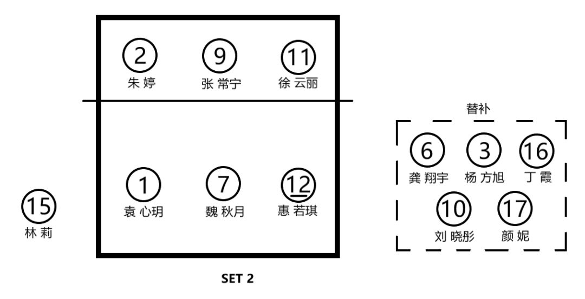
图6.1-1｜第二局的开局阵容示意，上半部为前排，下半部为后排；右侧为替补。对照魏秋月与两位主攻的前后排关系，再想后续轮转中谁能突破、谁能从后排加入。图源：微信公众号闪电排球。
把后排进攻加进来，轮次就不再只有眼前的网前几个人。前排主攻能下球，就先把这一轮打顺；前排受到限制，后排朱婷仍可以提供强有力的进攻出口。她在后排，并不意味着球队必须等她轮回前排才有办法拿分。前排与后排的主攻相互支撑，正是这场分析值得学习的一条线索。
第三局有一个很直观的片段：中国11—13落后，暂停后组织朱婷后排进攻追回一分，随后追到13平。前面那些接发、二传组织与攻手进入，最后接成了后排的一次突破。
看这一球： 2016里约女排1/4决赛：中国VS巴西全场回放（B站，奥林匹克运动会）。找到第三局中国11—13落后后的暂停，看恢复后的朱婷后排进攻，以及随后追至13平的两分。先跟球看接发与二传组织，再倒回去看朱婷什么时候开始准备。
6.1.5 一次调整的收益与代价
某一轮变强以后，其他轮次也要能够接上。把进攻任务集中给强攻手，能够增加眼前的突破能力；他同时要接发、要从后排进入进攻，移动与连续处理的压力也会增加。增加一个进攻出口，还需要队友把第一下、补传和保护接好。
第二局的密集换人与暂停，可以放在这条线上理解：哪里开始卡住，就调整那一轮的人员与任务；得到新的火力，也继续处理接发、拦防和后续轮转的压力。调整不是单独一张替补名单，而是一连串相互影响的安排。
| 看调整的三个问题 |
在这场比赛里怎样用 |
| 原来卡在哪里？ |
接发后哪些点难以突破，困难球主要落到谁手里？ |
| 调整增加了什么？ |
换上的人员、变化的轮次以及后排进攻，带来哪些出口？ |
| 队友接着承担什么？ |
谁分担接发，谁组织困难球，谁保护与准备下一次反击？ |
不必一开始就记住所有轮次的名字。先抓住同一个问题，跟着它从第一局走到第二局，再看后面几局怎样继续补强。你就能把“郎平调整得好”，讲成一组有具体内容的比赛变化。
6.1.6 留一点记录，让印象有地方落脚
第二次看球，不妨只记一小段，不必一开场就抄全场数据。比如连续看六个中国队接发回合，每球记三项：第一下是否便于组织，最后由哪个进攻点处理，回合怎样结束。号码或视频时间也一起记上，之后才找得回来。
| 球号或时间 |
接发后可用的进攻 |
回合结果 |
想再看的一件事 |
| 练习记录：第1球 |
中间与两侧均有人准备 |
进攻得分 |
中间起跳时对方副攻看向哪里？ |
| 练习记录：第2球 |
球偏到边线，只剩调整攻 |
继续相持后失分 |
补传能否给攻手多留一点空间？ |
上表是演示记录方式的自编例子，不是两场比赛的实测数字。真正记下自己的样本以后，再判断这一段是组织条件改善了，还是同样条件下攻手处理更好了；第7章会介绍更完整的统计方法。
6.1.7 把这一分交还给整支队伍
里约中巴最后一分，由朱婷后排进攻结束，中国15—13赢下决胜局。记住关键攻手理所当然；把这一分往前倒回去，还能继续看到发球前准备、接球、组织和队友的行动。
里约夺冠后，朱婷在采访中也把自己的进攻与队友防守、传球联系在一起。球星的水平不会因为谈到集体而被冲淡，恰恰是在这些支持中，她才能一次次承担最难的进攻。
看经典比赛，可以保留激动，也保留好奇。喜欢谁，就从谁进入；看懂一个回合以后，再试着跟住另一个人的准备。你会发现，同一场熟悉的胜利，还能不断看出新的东西。
6.1.8 记住这三件事
先认比赛与人物，再用比分找问题；回到连续回合，看任务怎样接起来；最后用少量记录检验自己的印象。 经典比赛值得反复看，因为每多懂一点配合，就会多看见一点人。
自测回看
雅典决赛前两局都输了，是否就说明中国队前两局一直被大比分压制？
解答： 不是。前两局分别为28—30、25—27，都打过24平，只差两分。可以确认失利接近，具体哪些环节造成局末差距，还要看回合过程。
里约中巴这场球里，为什么要让前排进攻与后排朱婷互相支撑，而不是只数前排攻手？
解答： 前排攻手数量不代表每个点都能稳定突破。来球受限、接发任务重或某点进攻遇阻时，朱婷的后排进攻可以继续提供出口；前后排相互支撑，才有机会把这一轮过掉。
只看最后五分的集锦，想解释整场逆转，最容易漏掉什么？
解答： 容易漏掉此前的来球压力、连续轮次、人员变化及没有得分的尝试。集锦适合进入比赛，要解释过程，继续找相邻的完整回合与同一问题的前后变化。
下次看球的小任务
选一局中的六个接发回合，两人轮流跟二传和一名攻手。每人说一个看得见的发现，再一起找一球检验：刚才的说法能否解释它？
6.2 技术原理与常见误区
把一句熟悉的口令，变成自己能看见、能试的改进。
“把球吃住”“空中停一下”“你就是反应慢”——打球时，我们常听见这样的话。有些话是在提醒一个感觉，听的人却可能把它当成完整动作：刻意把球停在手里，等身体不动才传，或认定自己天生防不起球。
理解一点原理，不是为了把打球变成物理考试，而是帮助我们知道一条提示在解决什么问题。能把话说清楚，练习也会更有方向。
读前想一想
飘球旋转很少，是否就会沿着一条稳定不变的弧线飞来？
扣球时的“滞空感”，是否表示运动员能靠收腹让全身重心停在空中？
左手攻手总觉得来球落在自己右侧，二传应先改配合中的什么，而不是直接规定必须用哪种传球动作？
本节目录
6.2.1 先问这一下要把球送到哪里
技术的用途，会影响动作怎样组织。处理一记重扣，希望把球控制到队友能接续的范围；给已经准备好的边攻传球，希望球进入他的助跑和击球节奏。两次动作不能只用“胳膊摆得像不像”来评价。
可以顺着四个时刻看：到位、接触、出球、下一步。 球来以前，人有没有赶到合适位置？触球时身体和平台朝哪里？球出去以后队友能不能处理？自己是否还在准备接下来的配合？这样看，很多“手上没控住”的问题，会露出更早的移动与判断原因。
结果也要多看几次。一球碰巧落在好地方，不等于动作已经稳定；一次失配，也未必需要把整套动作推翻。
6.2.2 球在飞，人也在准备
来球的高度、方向、速度和到达时间，决定你要在哪里处理。攻手还需要把助跑、起跳和击球手臂接上；二传眼里的同一个落点，对不同攻手可能不是同样舒服的球。
因此，二传与左手攻手配合时，先说清希望从哪条路线进入、球相对左侧击球肩放在哪里、什么时候出手。不能把习惯给右手攻手的球原封不动搬过去，再要求左手攻手自己适应一切。
飘球则提醒我们，来球不一定像纸上画的弧线那样规整。即使旋转少，球面、球缝与空气相互作用，仍可能带来横向或上下方向的变化。接发时持续跟住球、保留调整准备，比看见一段平稳飞行就提前站死更实用。这里不需要背空气动力学公式，只需记住：低旋转不等于轨迹没有变化。
6.2.3 跳传怎样服务组织
跳传能提高触球位置，也能改变接触和出球的时机，帮助二传衔接不同攻手、加快组织。选择多不多、攻手赶不赶得上，仍取决于二传先到哪里，以及整队怎样准备。
FIVB教练手册的相关教学甚至会要求在上升过程中争取触球。这说明，不能把“必须等到身体在最高点静止”当成所有跳传的标准。真正要对齐的是这次传扣的任务：何时接触、何时释放、球进入谁的击球范围。
刚开始配合时，稳定传出可打的球仍放在前面。站传能把这一球组织好，就先把配合做顺；跳起来以后反而追不到、控制不住，先检查移动和准备。跳传是一种组织手段，不是一张证明二传水平的入场券。
6.2.4 “缓冲”和“吃球”怎样理解
强来球撞到平台，出球太快、太远，大家会提醒“卸一点”。这句口令想解决的是反弹控制。实际处理时，平台方向、接触位置、身体与手臂的运动都会影响球怎样出去；不能只理解成把手臂猛地撤开，或尽可能拖长接触。
上手传球中的“吃球”也要回到连贯的迎送。它不意味着先抓住、停一下再扔。练习时可以先检查人是否到位，再看接触是否连贯、球是否按目标方向送出，最后请接球或进攻的队友反馈。
同一条口令，遇到轻球和重球可能需要不同调整。教练或队友说完“卸力”，接着补一句“这次希望球留在谁能处理的位置”，你就知道怎样判断这条提醒有没有帮到忙。
6.2.5 看起来“停在空中”，身体仍在运动
精彩扣球的慢放里，攻手头部与躯干仿佛停住了一小会儿，手臂还在完成击球。这种观感和身体各部位的相对运动有关：摆臂、收放腿、改变躯干姿态，都会改变我们盯住的那个部位的位置。
图6.2-1｜从左到右看身体和手臂怎样接续完成击球。它是动作教学序列，可以帮助辨认姿态变化；图中没有全身重心标记，不能把几帧头部高度直接当成重心轨迹。图源：FIVB。
人在已经离地、没有其他支撑时，不能靠身体内部的肌肉动作让整体重心摆脱重力、悬停一段时间。常说的空中控制，更适合用来描述姿态、击球与落地准备。欣赏“滞空”并不需要把它理解成真的暂停下落，更不必为了追求那个画面而刻意等球。
6.2.6 把反应拆成看、判断和行动
同一记扣球，有人很早开始准备，有人等球离手才发现线路变了。两人的差别，可能不只在最后那一下移动有多快，还在于此前看到了什么。
看二传是否到位，攻手从哪里进入，拦网有没有封住直线，这些信息都可能影响防守的准备。专项研究也发现，有经验球员在预测二传方向的任务中会表现出不同于新手的观察和判断；它提醒我们重视读球，而不是把一次晚启动都叫作天生反应慢。
图6.2-2｜准备姿势服务于下一步移动。读图时继续问“球从哪里来、准备向哪里去”，不要只复制一张静态姿势。图源：FIVB。
两人看球时，可以在二传触球前暂停，各说一个可能的进攻方向和依据，再继续播放比较。答错就找漏看的线索。这是帮助交流的观察练习；练熟之后，还要在真正的来球与场上配合中检验，不能用一次猜中代替防守能力。
6.2.7 让提示落到下一次尝试
把一句含混的话，改成三行就够了：
| 先写什么 |
例子 |
| 想解决的问题 |
强来球经常垫到队友身后 |
| 这次只注意什么 |
提前到位，控制平台方向，不随手大幅上抡 |
| 看什么变化 |
队友能否更少后退、较从容地接第二下 |
这张卡没有替所有人规定唯一动作。它把目标与反馈连起来，让自己和同伴知道正在尝试什么。原理在这里的作用，也正是帮助我们少绕弯，找到下一次练习能观察的东西。
本节小结
技术解释先回到来球、目标与配合。动作口令帮助找感觉，但不能代替整个过程；会看条件、能听反馈，就能把一句提醒变成更清楚的改进。
本节自测回看
飘球旋转很少，是否就会沿着一条稳定不变的弧线飞来？
解答： 不会。低旋转不排除空气力造成的横向与上下变化，接球者仍需持续观察球路并保留调整准备。
扣球时的“滞空感”，是否表示运动员能靠收腹让全身重心停在空中？
解答： 不表示。各身体部位相对运动能改变观感和姿态；人在离地且无其他支撑时，不能单靠内部肌肉动作让整体重心免于重力而悬停。
左手攻手总觉得来球落在自己右侧，二传应先改配合中的什么，而不是直接规定必须用哪种传球动作？
解答： 先对齐球相对左侧击球肩的位置、攻手的进入路线与双方节奏，再比较传球方式是否能稳定实现。供球应适合这个攻手，不能只套用右手攻手的习惯。
试着改一句： 选本队常说的一条技术口令，写出它想解决的问题、这次注意的动作和判断是否改善的现象。请队友用自己的话复述。
出处与延伸阅读： 跳传接触与组织任务参照FIVB二级教练手册第45—47、56页及Doug Beal给二传的教学文章；左手供球见USA Volleyball《Teach Off-Hand Hitting》。低旋转来球的空气力可读Hong等的风洞原研究；重心原理参照OpenStax大学物理；观察与预判参照排球方向预测原研究。本节保留通识解释，不把实验中的个别数值当作社团动作门槛。
6.3 排球知识的分享与共同学习
把自己刚弄懂的一点，讲给下一位愿意上场的人。
刚加入社团时，有人听不懂“小轮转”，有人不敢碰第二下，也有人已经会打，却一直说不清这一球为什么没配上。我们需要的帮助并不完全一样。
这本指南写到这里，希望的不只是多出一份资料。更希望读过的人能带下一位一起看一球、试一次、把一处讲法改清楚。社团里的学习，就可以在这些小交流里继续下去。
读前想一想
给第一次上场的同学做五分钟分享，要把全部位置、战术和完整5-1一起讲完吗？怎样选择内容？
新人听完说“懂了”，可以用什么简短任务，确认他已经能把这项知识用在具体场面里？
同伴发现图中的前后排与文字不一致，更新资料时应怎样处理，而不是只把他的评论删掉？
本节目录
6.3.1 先听对方卡在哪里
“你打到什么水平？”很容易得到一个笼统回答。“刚才那一分哪里没看懂？”往往更有用。对方可能只想确认发球次序，也可能是在问二传接第一下以后自己能不能去传。
先把他的问题复述一遍，再决定从哪页开始。问轮转，就先分清发球次序、发球时站位与本队小轮转约定；问垫球，就先看他要处理哪类来球、希望送到哪里。别因为自己最近研究了复杂战术，就让每位新人都从那里听起。
读过几年、打过校队、看过很多比赛，可以帮助了解经历，却不必变成固定的阅读等级。有人会做但暂时讲不清，有人懂规则但动作还不熟，入口可以各自不同。
6.3.2 五分钟先带走一件事
一次短分享可以用这个顺序：一个场面、一句关键说明、一幅图或一次演示、一个小任务。 内容少一点，听的人才有机会提出自己的问题。
例如，想讲“二传来不及处理第二下”，先描述一球：二传接了发球，球还在空中，大家都等着他再传。关键说明是第二下需要队友接过。随后让两三位同伴按本队分工说出谁先补传、谁准备进攻，再用几次简单来球试一下。
这次不需要顺带讲完所有二传体系。等眼前的交接听明白、试顺了，再继续介绍新的变化。每次能带走一点，资料就会更容易被用起来。
6.3.3 用同一幅图，讲出不同的观察
图6.3-1｜左边为动作示意，右边为实拍教学序列，不是两组人同时比赛。第一次看移动，第二次看接触，第三次想下一位队友需要什么。图源：FIVB。
图可以帮助讲解，但先给清楚任务。看这幅图，可以请对方指出“先往哪里移动，再怎样把第二下送出去”。接着换个问题：“如果攻手在边路等，这个传球要给他留下什么条件？”同一幅图，便能从认动作走向理解配合。
比赛图也一样。先说这是哪一场、哪个时刻，让大家找同一个对象；不要用一张扣球照要求新人猜完整轮转。图中没有显示的信息，换一张能显示的图或用文字补清，不需要让读者靠想象把空缺填完。
6.3.4 让对方说一遍、选一次、试一球
一句“懂了吗”很难看出理解到了哪里。可以从下面挑一个小任务：
| 想确认的事情 |
可以怎样做 |
| 是否听明白含义 |
请他用自己的话向另一位同伴解释，不照念原句 |
| 是否会在场景中判断 |
换一个回合或一个人员安排，请他指出同样的任务 |
| 是否能接到实际行动 |
用简单来球或走位演示试一次，再说哪里仍不顺 |
| 是否能帮助别人 |
让他给下一位同学一个清楚提示，再听对方的反馈 |
任务是为了找下一步学什么，不是现场把人分成“懂球”和“不懂球”。答错时先找误会：是不认识术语，漏看了前后排身份，还是知道办法但没赶上动作？找到具体位置，下一次解释就有着落。
6.3.5 一起看球，允许观察互相补充
两人看同一分，可以分工：一人先跟球，一人先跟没拿球的攻手。各说自己看见什么，再把过程接起来。若意见不同，回到同一个画面、同一个时刻讨论，比直接争谁更专业容易得多。
表达时可以分三句：“我看见中拦先跳了”“我认为这给边攻争取了时间”“我想再看看旁边几球是不是也这样”。看到的动作、自己的解释和接着想问的问题，各自清楚，交流就能继续。
经典比赛也可以保留情绪。我们可以为逆转兴奋，为一记关键球叫好，再慢慢回看这一分怎样被接起来。懂得更多，不必失去喜欢；细看过程，反而会让那些瞬间更有分量。
6.3.6 把指南当作大家能一起完善的资料
社员指出一处不明白，先保留他看到的那句话、那张图和具体疑问。回查本队约定或相应来源，确认后改正文，也同步改图注、目录或自测答案，避免几处互相打架。
可以留一个很简单的修改记录：日期、位置、原来容易误解什么、现在怎样讲。图源和人物事实保留在章末，后来的编辑者仍能找到出处；队内叫法则注明本队用法，换了约定及时更新。
也可以轮流认领一小段：有人带看接发，有人整理一场经典比赛，有人核对统计例子。一次负责一件清楚的事，比要求大家都先写一篇“大而全的排球论文”更容易开始。
本节小结
先听见具体问题，再给一个能用的解释；让同伴复述、判断或尝试，看看理解到了哪里；把疑问与改动留下来，学习就能在下一位社员身上接着发生。
本节自测回看
给第一次上场的同学做五分钟分享，要把全部位置、战术和完整5-1一起讲完吗？怎样选择内容？
解答： 不需要。先问他眼前卡在哪里，选一项最有用的任务，用场面、关键说明和图或演示讲清，再让他尝试。其他内容等需要时继续补。
新人听完说“懂了”，可以用什么简短任务，确认他已经能把这项知识用在具体场面里？
解答： 请他用自己的话复述，再换一个相近场景让他判断，或用简单来球实际试一次。通过具体表现找仍需要帮助的位置。
同伴发现图中的前后排与文字不一致，更新资料时应怎样处理，而不是只把他的评论删掉？
解答： 保留具体疑问，回查图示时刻、规则和本队约定；确认后同步修正文字、图注及相关题答，留下简短修改记录。先解决不一致，再让同伴重新试读。
一起完成一次： 与一位同伴选指南中的一页，做五分钟分享。对方提出一个仍不清楚的问题，两人共同修改一句话或一个图注，记录为什么改。下一次请另一位新人试读。
出处与延伸阅读： 本节分享步骤、任务表与社团维护方法由本指南编写；教学目标与反馈的背景可参照FIVB二级教练手册“Player Development Model”及反馈部分。统计与回合复盘接读第7章末节。
本章自测回看
想给新人讲一场经典比赛，怎样把人物故事、技战术观察和参与讨论接起来？
解答： 先用赛事、人物与比分交代背景，再选一个完整回合，只安排一个容易找到的观察点；请新人说自己的发现，结合画面补充。让故事带人进入，让具体回合帮助理解，让参与者也能开口。
同伴用一句“反应太慢了”解释输球，你怎样把讨论引向可以改进的事情？
解答： 找一个具体回合，回到出手前看到什么、何时判断、怎样站位和启动。共同选一处下次可尝试的改变，再看效果；不要用一句概括给人下长期结论。
看完经典比赛，新人想照抄其中的接发阵形，本社却实行小轮转。怎样学到其中的配合，又让练习符合本社的分工？
解答： 先找出原队伍怎样连接接发、组织与进攻，再按本社小轮转的现有分工，选一个能尝试的衔接，例如接完以后怎样给后排二传留出插上空间。用简单来球试一组，听队友反馈，再继续学；不必先照搬职业队的整套换位路线。
鼠鼠排球指南第7章
第7章 技术统计与社团复盘
把看球时的印象，接成能够回看的记录。
打完一局，我们会记得几个漂亮球，也可能记住某次没配上的失误。技术统计给这些印象添了一张小地图：有多少次、哪一类多、发生在什么条件下。它不需要很复杂，却能帮我们更快找到值得回看的地方。
这一章从比分来源开始，读进攻、发球、接发与拦网的常见数字，再比较完整回合与第一次进攻，最后把数据放回球员任务和赛后讨论。例子尽量用少量自编数字，学完就可以与同伴选一局、记一项、改一件事。
读前想一想
只有一名同伴能在场边记录，想了解本队接发为何不顺，你会让他优先记哪几项，而不是整张个人技术表？
第二局接发质量比第一局好了，本队赢下接发回合的比例却没提高。下一步你会把哪些记录和画面连起来看？
一份记录能对上比分，为什么仍需要给每个值得讨论的结果保留回合位置？请举一种用途。
7.1 排球比赛的得分构成
除了最后那一下扣球，比分还能从哪里来？
一局结束，大家讨论最多的往往是谁扣了几个好球。可看一眼记分牌，另一边扣球似乎没那么亮眼，分数却一直咬得很紧。再往回想，对方几次发球直接落地、两次拦死，还有我们连续送掉的球，都在给比分添上一笔。
统计的第一步，就是把这些印象整理成一份清楚的小账：这一分谁拿到，怎样结束，归到哪一项。先把分数算明白，再去解释比赛。
读前想一想
本队一共拿到10分，进攻5分、拦网2分、发球1分，剩下2分可能记在哪里？
扣球打手出界，同一份球队得分账应同时给进攻和拦网各加1分吗？
甲队进攻得分比乙队多，就一定能赢下这一局吗？
本节目录
7.1.1 先认一分的结束方式
排球每赢下一个回合，球队增加一分。至于这一分写在什么栏目，还要看回合最后怎样结束：扣球让对方无法继续处理，常记作进攻得分；发球直接造成失分，记发球直接得分；把对方进攻直接拦成得分，记拦网得分；对方送出界、犯规等，可能进入对方失误送分。
这里先做球队得分来源账。它帮助我们把分数相加，不急着展开专业统计表中每个人的全部项目。某些边界判定在不同统计体系中有具体记法，接触正式赛事表时按那张表的说明读；社团先从能看清的常见回合开始。
7.1.2 常见的四个来源
| 得分来源 |
一个容易辨认的例子 |
看回合时注意 |
| 进攻得分 |
主攻扣球落地，或打手出界 |
不只看大力扣球，吊球、二次进攻也可能得分 |
| 发球直接得分 |
球落在无人接起的区域 |
接发碰到了球，也可能仍由发球直接造成失分 |
| 拦网得分 |
对方进攻被直接拦下 |
要和拦网触球后继续比赛分开 |
| 对方失误送分 |
对方发球出界 |
这分归本队，但不一定记在本队某个人的技术得分上 |
要特别看清“直接”两个字。发球破坏了一传，对方勉强处理过网，我们随后扣中，发球确实帮了忙，最后这一分的技术终结却是进攻。贡献可以发生在好几步，比分来源只选一次。
7.1.3 十分小账怎样加起来
下面是自编教学例子，不对应真实球队或比赛。
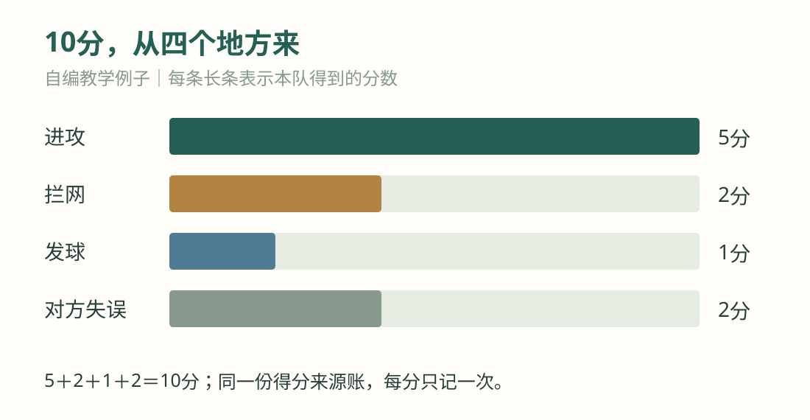
图7.1-1｜进攻5分、拦网2分、发球1分、对方失误2分，加起来是本队的10分。图中长条表示分数，不表示某项技术做了多少次。图表：本指南编制。
最简单的核对方法，是把四类加起来，看看能不能对上这一段比分的增加。假如从8∶8看到18∶16，本队新增了10分，来源账就应合计10分。若合计11分，通常要找有没有把同一分重复记入两栏；若只有9分，检查是不是漏了一个回合。
两队的账还可以互相帮助核对。例如本队发球直接出界，对方的球队得分来源增加一笔“对方失误”，本队的发球失误也增加一次。这是两份不同用途的表，不是同一队的比分凭空增加两分。
7.1.4 总分一样，构成可以不同
| 自编例子 |
进攻 |
拦网 |
发球 |
对方失误 |
合计 |
| 甲队 |
7 |
1 |
0 |
2 |
10 |
| 乙队 |
4 |
2 |
2 |
2 |
10 |
甲队的进攻直接得分更多，乙队从发拦环节拿回了分数。这个小例子说明，排球的比分由几个环节共同组成。看某队的进攻得分领先，还要接着看发球、拦网和送分，才能知道分差在哪里形成。
同样，也别把某一栏少直接翻译成“这项技术没有用”。对方被拦网碰慢的球，可能让我们打出反击；一个不直接得分的发球，可能让对方始终只有高球可打。这些作用要继续看过程，后面几节会分别展开。
7.1.5 从一张账回到一个问题
社团初次记录，可以让一位同伴只做一件事：跟完五到十个回合，写下回合结束时的比分与得分来源。先不同时记录落点、个人成功率和每次触球，否则很容易顾此失彼。
记录之后，挑最有意思的一栏看。例如对方送了不少分，具体是发球还是进攻？本队拦网拿了两分，除此之外还碰起了哪些球？数字把线索指出来，回合把线索讲明白。这样，复盘就从“今天打得不错”走到了“这一段怎样把分拿下来”。
7.1.6 记住这三件事
先确认谁赢下回合，再记录得分来源；同一份球队得分账里，一分只加一次；得分构成帮助解释比分，具体配合还要回到球里看。
自测回看
本队一共拿到10分，进攻5分、拦网2分、发球1分，剩下2分可能记在哪里？
解答： 若采用本节四类记账，且前面三项已记全，剩下2分在“对方失误送分”一栏。四类合计应与本队新增比分一致。
扣球打手出界，同一份球队得分账应同时给进攻和拦网各加1分吗？
解答： 不应。这一分记进攻得分；对方拦网触球没有让本队得到第二分。统计触球作用时可以另记观察，不能重复加比分。
甲队进攻得分比乙队多，就一定能赢下这一局吗？
解答： 不一定。还要看发球、拦网与双方送分等来源，最后比较的是总分与赛制规定的胜负条件。
试着记一次： 看五个连续回合，写下结束比分和一个得分来源，再把各项相加核对。先确保不重不漏。
出处与延伸阅读： 进攻、发球和拦网的事件定义参照NCAA《Volleyball Statisticians’ Manual》相关章节。本节四类球队得分账及全部数字为社团教学整理；涉及正式赛事的技术归属时，按该赛事统计口径处理。
7.2 进攻得分率与进攻效率
同样扣中四球，为什么打起来的感觉差很多？
两位攻手都进攻十次，各拿四分。只看得分，他们似乎不相上下；可一个人另外六球大多被防起，另一个人却把其中好几球直接送掉。大家看球的感受不同，往往就藏在“没得分的那些球”里。
这一节只学两种数字：得分率回答打中了多少，效率把直接丢分也放进来。会算只是开始，更有用的是知道这两个数字各自讲了什么。
读前想一想
10次进攻得4分、失误1次，得分率和效率分别是多少？本题失误含直接被拦死。
同一张表已把直接被拦死算进失误，计算效率时还要再扣一次“被拦”吗？
有人1次进攻得1分，另一人20次得10分，可以只凭得分率宣布前者更强吗？
本节目录
7.2.1 一次进攻可能有三种结果
得分、直接丢分、继续比赛。把球扣在地上是得分；扣出界或直接被拦死会丢分；被对方防起后，双方接着打，属于继续比赛。
这三种结果放在一起，才是完整的进攻次数。不能只把得分和失误相加，而把被防起的球忘掉。进攻也不限于大力扣球，有主动取分意图的吊球、二次进攻等，同样可能进入进攻统计；单纯救命过网的处理球，不能见一次过网就算一次常规进攻。
社团刚开始记，可以先挑容易辨认的扣球、吊球和二次进攻。难以判断的情况留出备注，大家一起对齐，别靠猜测给某个人添次数。
7.2.2 得分率：这些进攻里打中了多少
进攻得分率＝进攻得分次数÷总进攻次数。
十次进攻拿四分，就是4÷10＝40%。它告诉我们，记录下来的进攻中，有四成直接变成了分数。
这个数字很好懂，却还没说完另外六次发生了什么：可能是零失误、六次继续；也可能是四次失误、两次继续。要把这个区别看出来，就需要下一项。
7.2.3 效率：把直接丢分也放进来
本节先采用“失误已包含直接被拦死”的记法：
进攻效率＝（进攻得分－进攻失误）÷总进攻次数。
| 自编教学例子 |
总进攻 |
得分 |
失误，含直接被拦死 |
继续比赛 |
得分率 |
效率 |
| 甲 |
10 |
4 |
1 |
5 |
40% |
30% |
| 乙 |
10 |
4 |
4 |
2 |
40% |
0% |
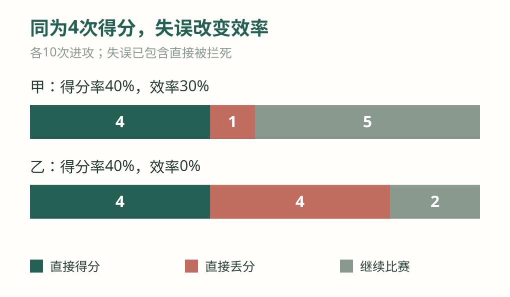
图7.2-1｜每条长带都表示10次进攻。得分同样有4次，直接丢分却分别为1次和4次。效率随之不同。全部为自编教学数据。图表：本指南编制。
乙的效率为0%，不表示他一分没得；表示按这个公式，四次进攻得分与四次进攻失误相抵。若失误比得分多，效率也可能为负。它是帮助我们读结果的一种指标，不能直接叫作球队最后净赢了多少分——那些继续比赛的球，后来还会产生结果。
7.2.4 看公式前，先看失误栏怎样分
有的资料把“主动失误”和“直接被拦死”分开。此时公式常写成“得分减失误再减被拦，除以总进攻”。这与前面的写法可以描述同一批球，关键在于失误里究竟包含了什么。
例如总共十次进攻，四分、一次出界、一次直接被拦死。若合并记录，失误为2，效率为（4－2）÷10＝20%；若分开记录，则为（4－1－1）÷10＝20%。不能先把被拦算进2次失误，再额外扣一次被拦。
NCAA手册与本指南引用的FIVB VNL2024技术报告，正好提供了两种分栏例子。读表时先认表头，社团自己的记录也在表头写清楚，不靠一个“效率”词语猜公式。
7.2.5 数字之后，还要看攻手接到什么球
一个人经常在好一传之后面对单人拦网，另一个人常在二传追到场外时处理高球。把他们放进同一张表很方便，解释差异时却不能把来球条件删掉。
可以多加一列简单情境：“能按常用安排组织”或“困难球”。先看是不是困难球明显增加，再回到4.3不到位球的组织，讨论补传、起跳空间与保护。这样既能看见攻手处理球的水平，也能找到队友可以一起改善的地方。
样本大小同样要留意。一球就能从0%变成100%，十几次球里的波动也会很明显。报数字时顺手报次数，比只留下一个漂亮百分比更清楚。
7.2.6 记住这三件事
得分率只看直接得分，效率同时考虑直接丢分；公式要与失误分栏一致；评价进攻还应联系次数、来球和拦网条件。
自测回看
10次进攻得4分、失误1次，得分率和效率分别是多少？本题失误含直接被拦死。
解答： 得分率为4÷10＝40%；效率为（4－1）÷10＝30%。剩下5次是继续比赛。
同一张表已把直接被拦死算进失误，计算效率时还要再扣一次“被拦”吗？
解答： 不要。否则同一次丢分被扣了两遍。只有在失误与被拦分列、互不包含的记法中，才分别扣除。
有人1次进攻得1分，另一人20次得10分，可以只凭得分率宣布前者更强吗？
解答： 不能。前者只有一次样本，承担任务和来球也可能不同。先报出次数，再看更多回合与相近条件下的处理。
试着讲一次： 用自己的话说明图7.2-1中“同为40%，为什么效率不同”，再提出一个想继续回看的进攻条件。
出处与延伸阅读： 进攻事件及合并失误公式参照NCAA统计手册第1、6节；分列失误与被拦的例子见FIVB VNL2024技术报告定义部分。仅借用统计口径，不改变本指南的比赛规则基线。
7.3 发球效果的统计与评价
发进去了以后，还发生了什么？
“先发过去，别送分。”这句话很适合刚学发球时的目标。等大家能稳定发进场，又会遇到新问题：有人的球虽然不常出界，对方却接得很舒服；有人的球不一定直接得分，却常让二传跑远，只能组织边路高球。
我们需要把发失、直接得分和给对方造成的困难分别看见。这样，讨论发球才有可能从“稳一点”和“冲一点”的争论，走到一个能执行的选择。
读前想一想
12个本方发球回合共赢6次，其中发球直接得分2次，回合赢分比例与发球直接得分率分别是多少？
比较“零失误但对方组织舒服”和“有失误却经常限制对方组织”的发球方案，还想看本队后续什么表现？
想检验“发深一点能限制对方快攻”，除了发球进没进，还应记什么？
本节目录
7.3.1 先把基础三项记稳
一位同伴连续发了几球，记录者最先要分清三种结果：直接得分、失误、继续比赛。三项数量相加，应当等于发球总次数。
“直接得分”不限于没人碰到的球。对方接到了，却没能把发球继续处理起来，也可能是发球直接造成失分。反过来，只要已经进入后面的攻防，最后赢分就要按后面的结束方式记录。
| 自编12次发球例子 |
次数 |
| 发球直接得分 |
2 |
| 发球失误 |
1 |
| 继续比赛 |
9 |
| 合计 |
12 |
从这张表可以读出发球直接得分率为2÷12，约16.7%；失误率为1÷12，约8.3%。它们只是这12次的结果，不是本社达标线，也不是职业队应该达到的数值。
7.3.2 发球直接得分与发球回合赢分
假设九次继续比赛的球里，本队后来又赢了四个回合。加上两次直接得分，本队在这十二次发球回合中共赢六次。
于是，同一段比赛里会同时出现三个不同的数字：发球直接得分2次，发球失误1次，发球回合赢分6次。最后一项包含本队后续的拦网、防守和反击，不能全部记作发球员的个人技术得分。
这一点反而能帮助我们看见团队：发球把对方的选择限制住，拦防接着利用限制，反击最后拿分。几个人一起完成的过程，在表里也应分开看。
7.3.3 再看对方还剩多少进攻选择
基础记录稳定后，可以增加一栏：“对方能正常组织／组织受限”。这里沿用本社的实际水平判断：二传是否需要追球，副攻的常用快球是否仍可用，边攻能不能按熟悉节奏准备。
先把判断标准讲明白，再看几球共同校准。不要因为对方最后扣出界，就倒过来把一传判成很差；也别因为对方高球攻手打得好，就忽略发球确实让他们失去了中间选择。发球给了什么条件，要在接发和组织阶段观察。
落点也可以记得简单些：前半场、后半场，或本次计划瞄准的区域。不必一开始就切成很多小格；能够回答眼前的问题已经足够。
7.3.4 风险与收益要放在同一段里看
下面两组仍为自编例子，只示范怎样比较。
| 各10次发球 |
直接得分 |
失误 |
继续比赛 |
继续球中，对方组织受限 |
| 方案甲 |
0 |
0 |
10 |
2 |
| 方案乙 |
2 |
2 |
6 |
4 |
乙给了对方更大压力，也直接送了两分；甲零失误，但多数球让对方较舒服地组织。仅靠这张小表，还不能替整支队决定哪个方案更好：本队能不能利用受限的一攻，发球者能否持续执行，对手是否一样，都需要继续看。
对大学社团，更实际的改进通常是先选一个清楚目标，例如在动作稳定的基础上，试着把球发向对方接发结合部或更深的位置。先观察这一个变化，再考虑增加速度，不必每次都追求最大力量。
7.3.5 一次发球小复盘怎么做
挑同一位发球员的一段完整记录，在表旁写一句本次意图：“把球发深，让对方副攻难以提前进入快球。”随后找一球做到了、一球没有做到的画面：球落在哪里，谁接，二传到了哪里，中间是否仍能打。
最后把提醒说成下一次能用的话：“刚才深区有效，但连续两球发长，先用同样动作把落点留在端线内。”这比只报“失误率20%”更能帮助队友调整。
7.3.6 记住这三件事
直接得分、失误和继续比赛先分清；发球压力看对方组织条件；一次调整要把落点、结果和后续配合连起来。
自测回看
12个本方发球回合共赢6次，其中发球直接得分2次，回合赢分比例与发球直接得分率分别是多少？
解答： 发球回合赢分比例为6÷12＝50%；发球直接得分率为2÷12，约16.7%。前者还包含后续拦防、反击等赢分，不能全部算成发球员的直接得分。
比较“零失误但对方组织舒服”和“有失误却经常限制对方组织”的发球方案，还想看本队后续什么表现？
解答： 看本队能否利用对方受限的一攻，接好拦防、组织反击，以及最终赢下多少发球回合；还要在相近对手和足够次数下比较，不能只凭零失误或一次直接得分选方案。
想检验“发深一点能限制对方快攻”，除了发球进没进，还应记什么？
解答： 至少记实际落点、接发后的组织条件，以及快球是否仍可用，并留对应回合。这样才能判断计划有没有在场上发生。
试着记一次： 连续看十次本方发球，先填三项基础结果；若看得过来，再加“对方组织是否受限”。
出处与延伸阅读： 发球事件定义见NCAA统计手册发球部分；发球、接发效果评分思路可读John Forman的原文。本节计数、方案与复盘例子均为自编，不借用职业队目标值。
7.4 接发球质量的记录与评分
把“这球到位吗”说到一起。
一个接发球飞到网前，边上的人说“好一传”，二传却觉得球贴网，根本来不及组织快攻。还有一个球看着很高，落点稍远，但二传赶到了，攻手也都准备好了。只凭球看起来顺不顺眼，大家很难评到同一个地方。
接发评分最有用的目标，是说明这一下给后面的组织留下了什么条件。它把感受变成能一起讨论的分档，而不是给接球队员贴标签。
读前想一想
接发过网后双方继续比赛，在本节三档记录里，应直接记作“已经失分”吗？
记录者没看清二传有没有组织条件，该球应填最低档还是“未知”？
两组接发评分使用不同标准，即使均分都是2分，也说明表现相同吗？
本节目录
7.4.1 评分对象是接发给出的条件
回看3.2接发球质量与进攻组织，我们已经认识：第一下的价值，是让二传与攻手有机会继续组织。
因此，接发评价要把球的位置、二传到位情况与攻手准备一起看。不要只看球有没有垫高，也不要用最后一扣的结果代替接发质量。好条件下攻手仍可能失误，受限的一攻也可能打中；两个阶段各有自己的任务。
7.4.2 社团先用三档说明
本指南建议先用下面这套社团简化方案。它不是排协统一评分表，也不规定所有球队必须达到同一个落点。
| 记录项 |
本社可以怎样认 |
一个典型场面 |
| 直接失分 |
发球直接造成这一分结束 |
球落地，或接球后队友无法继续处理 |
| 继续但组织受限 |
球还在打，常用进攻安排明显受限 |
二传追向场外，只能给高球或处理球 |
| 能按常用安排组织 |
本队熟悉的进攻选择可以正常准备 |
二传到位，中间和边路都能按分工准备 |
| 未知 |
画面或记录不足，暂不能判断 |
镜头没拍到来球后半段，或记录漏看 |
“按本队常用安排”很关键。刚组队时，能稳稳传出边路高球就很有价值；配合熟练后，大家可能还想看快球与两翼是否同时可用。评分前先约定本次标准，同一批球里保持一致。
本社小轮转还可以在备注写“二传前排／后排需插上”。同样的落点，对正在插上的二传可能意味着更远的移动，备注能帮我们把接发与实际分工连起来。
7.4.3 三个容易评歪的场面
球过网了，但回合还在继续。 它没有给本队留下正常组织条件，可以记为组织受限并备注“过网”；不能因为球不好，就改写成这一分已经丢掉。
二传站得舒服，攻手最后没打中。 先按接发时的组织条件评分，进攻失误另记。不要让最后的结果把前面的判断全部带走。
球到了熟悉的区域，二传却没有赶到。 回看原因：是接发太急、太贴网，还是二传漏了插上、交接没有接好？如果来球本已给出正常组织条件，只因后续队员漏做任务，就不应把合格接发降档；把组织失配另外备注。若球路本身让二传难以到位，再按实际受限条件评分。
7.4.4 分档数量比一个均分更直观
下面是自编的十次接发：能正常组织5次、组织受限3次、直接失分1次、未知1次。
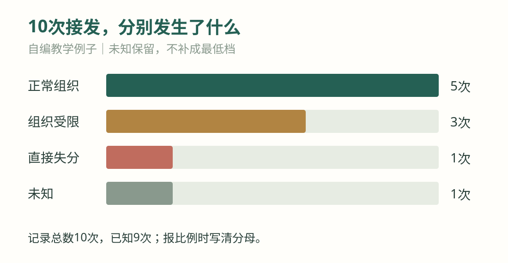
图7.4-1｜未知单独保留；图中四类合计10次。读者可以同时看到组织条件与缺失记录，不把未知画成失分。自编教学数据，图表由本指南编制。
这时可以说“十次里已确认五次能正常组织，一次没有看清”。若要算已知球中的比例，就写“5／9”；若报全部记录中的比例，就写“5／10，并有1次未知”。分母写清，别人才能理解这个数。
等三档已经评得比较一致，再尝试0—3分等细量表。换标准时在新表写明定义，别拿改标准前后的均分直接宣布进步或退步。
7.4.5 两个人怎样把尺度对齐
找五个完整接发回合，两人先各自分档，再把意见不同的球拿出来。每人只说看见的条件：二传追了多远，中间是否能打，边攻是否赶上准备。
如果分歧来自量表，改清定义；如果来自画面看不见，留下未知；如果来自本队本轮根本没说清组织方式，就把它带回队内沟通。校准的目的，是以后能用同样的语言讨论球，不是现场争出谁更懂球。
7.4.6 记住这三件事
接发评价看后续组织条件；本队先有共同定义，再打分；各档数量与未知记录一起展示，比只看均分更清楚。
自测回看
接发过网后双方继续比赛，在本节三档记录里，应直接记作“已经失分”吗？
解答： 不应。记为组织受限并备注“过网”，最终回合输赢另列；不好组织和已经丢分是两件事。
记录者没看清二传有没有组织条件，该球应填最低档还是“未知”？
解答： 填未知，尽量保留比分或时间位置等待回看。最低档是已经观察到的结果，不能拿来代替没看见。
两组接发评分使用不同标准，即使均分都是2分，也说明表现相同吗？
解答： 不说明。先对齐每档定义、计入范围与样本，再比较；均分还应结合分档数量看。
试着评一次： 与一位队友各评五球，找出意见不同的一球，用组织条件说明原因，再补清量表的一句话。
出处与延伸阅读： 接发分档与调整量表的思路参照教练John Forman的评分说明及接发评分讨论。本节三档、未知项及教学例子由本指南设计，使用时按本队实际组织能力校准。
7.5 拦网得分与拦网效果
没拦死的球，也可能让后排好防很多。
前排两个人合拦，球碰手后慢下来，后排接起，二传再组织，最后由边攻拿分。大家会给这次配合鼓掌；翻到拦网得分栏，却没有多出一分。
这里没有矛盾。拦网得分记录的是一类明确的终结结果，拦网对比赛的帮助还可能发生在终结之前。把这两件事分开，才不会让一张表把好配合漏掉，也不会把每次碰球都夸成好拦网。
读前想一想
三个人共同拦下一球，在本节球队得分账里，这次合拦增加几分？
球碰拦网手后飞出界外，与碰手减速后被本队防起，可以都记成“有效拦网”吗？
想增加“有用触球”一栏，记录前最先需要和同伴说清什么？
本节目录
7.5.1 直接拦网得分先单独数
对方发动进攻，本队把球直接拦成得分，这就是最容易认出的拦网得分。单人拦、双人合拦、三人合拦，都可能赢下这一分。
在本节的球队得分账里，多人共同完成一次得分仍记1分。个人统计中的单拦、助拦有各自分配办法，不能把几位队员的个人助拦数字直接相加，当作球队多拿了那么多分。初学先把球队每次得分事件记对，个人细则等读到具体赛事表再对照。
7.5.2 触球以后，比赛可能继续
拦网没有直接得分，仍可能改变后面的难度。原本很快的扣球碰到手后减速，后排有时间调整；原本偏向空当的球被碰向有人准备的区域，队友便能继续组织。
图7.5-1｜这幅教学图用于看两名拦网者怎样共同完成动作。统计时再跟住触球后的球：是直接得分、继续比赛，还是本方失分？不能只看两个人跳得是否整齐。图源：FIVB。
前排也可能没有碰到球，却封住了一个方向，让后排的站位更有依据。这类作用适合回合观察和简短文字记录，不必为了“让它有数据”，就给每次起跳发明一个成功分。
7.5.3 三种碰手结果分开写
| 教学情境 |
拦网直接得分 |
可补充的观察 |
| 把对方进攻直接拦成得分 |
1次 |
站位、合拦和手型是否衔接 |
| 碰手减速，本队防起并继续组织 |
0次 |
按事先约定记一次有用触球 |
| 对方打手出界，本队丢分 |
0次 |
记录触手后失分及对应回合 |
第二种球后来即使没有拿分，也不应自动抹掉已经发生的减速作用；第三种球虽然碰到了手，却不能只凭“有触球”就记成同样的好效果。
如果碰手后球仍在打，但究竟有没有改善本方防守条件看不清，就先写“触球、效果待回看”。记录具体发生的事，比把所有球挤进“成功／失败”两格更有用。
7.5.4 社团怎样定义“有用触球”
可以先采用一个容易操作的观察标准：拦网触球后，本队能把球控制起来，并接出后续组织。 这只是本次记录的补充项目，不是统一竞赛统计名称。本节按对方的一次进攻来记，同一次合拦即使有多人触球，也只记1次有用触球。
先试评几球，再决定标准是否太宽或太窄。例如碰手后本队勉强救回过网，但没有正常组织条件，要不要列入？大家先约定一种写法，整段比赛保持一致。记录表另留一列备注，帮助下一次细化。
统计软件或职业报告若把触球、拦死、失误分成更多档，也先读各档定义。相同的中文词，不保证每份表背后都数了同一种事件。
7.5.5 从表格找出一次拦防配合
假设一局本队只有1分拦网得分，却有数次碰手后打出反击。只说“拦网才一分”会漏掉后面的配合。可以挑两球回看：前排本来封哪里，后排站在哪，球碰手后是否进入有人负责的区域。
再找一个没有衔接上的例子：前排碰慢了，后排却以为球会直接落到前场，大家都停住。下一次要讨论的是谁跟进、谁喊球、谁准备补传。这样，数字便和4.2拦防配合接起来了。
7.5.6 记住这三件事
拦网得分只记直接终结；有用触球按共同定义另列；评价拦网要继续看后排有没有接上。
自测回看
三个人共同拦下一球，在本节球队得分账里，这次合拦增加几分？
解答： 1分。多人参与不改变这一回合只增加一分；个人助拦项目的记录另按相应统计体系处理。
球碰拦网手后飞出界外，与碰手减速后被本队防起，可以都记成“有效拦网”吗？
解答： 不宜混在一起。前者本方丢分，后者给了本队继续组织的机会，结果和作用不同，应按预定分栏分别记。
想增加“有用触球”一栏，记录前最先需要和同伴说清什么？
解答： 说清哪些结果算入、哪些不算，先拿几球对齐判断。本节建议以触球后本队能控制并接出组织为起点。
试着看一次： 跟看同一名拦网队员五次动作，分别写下是否触球、球去了哪里、后排怎样处理。再比较这份记录与单独的拦网得分数。
出处与延伸阅读： 拦网得分、个人单拦与助拦的区别见NCAA统计手册；拦死与触球分列的实际报告见FIVB VNL2024技术报告。本节“有用触球”操作方案为社团教学设计。
7.6 接发回合得分率与一攻表现
第一下接起来以后，要看到哪里才算完？
接发后主攻第一次进攻没打死，队友保护、防守，几次来回以后终于拿分。有人说“这一攻没下球”，有人说“这轮接发还是拿下来了”。两句话都可能说得对，只是观察的终点不同。
这一节把镜头拉成两个长度：短一点，看接发后的第一次进攻；长一点，看从对方发球到这一分结束。把分母写清，就不会让两个相似的名字把自己绕进去。
读前想一想
十个对方发球回合中本队赢六个，接发回合得分率是多少？
对方发球失误，本节计算接发回合得分率时，算不算一个本队赢下的接发回合？
十个接发回合只有八次形成第一次进攻，其中三次直接得分，“一攻进攻得分率”的分母是十还是八？
本节目录
7.6.1 先界定一个接发回合
本节把“对方发球，到这一分结束”作为一个接发回合。本队可能接发后直接下球，也可能先防守、再反击，或者因为对方失误得到这一分。
接发回合得分率＝本队赢下的接发回合数÷对方发球回合数。
它说明对方握有发球权时，本队把多少回合赢了下来。因此，本节计入对方发球失误：即使本队没有接触球，也已经在这一回合得分。若别的资料排除了对方发球失误，那是另一个经过调整的口径，不能混用分母。
7.6.2 第一次进攻看的是前一段
对方发球、本方接发、二传组织、攻手第一次进攻，日常看球常把这一段叫作一攻。讨论数据时，最好把想看的事情再说完整：是一攻实际进攻中的得分比例，还是所有接发回合中第一次进攻直接下球的比例？
本节使用一攻进攻得分率＝接发后第一次进攻直接得分次数÷实际发生的第一次进攻次数。这样，它仍属于“某一类进攻打中了多少”，与7.2的进攻得分率相接。
有些接发回合没有形成本方进攻，例如对方直接发失，或本方直接被发球得分。这些回合属于前面的接发回合总数，却不凭空增加一次进攻。
7.6.3 用同一张十回合表看两件事
以下是自编教学记录。
| 回合 |
接发后本方第一次进攻 |
最终结果 |
| 1 |
对方发失，没有一攻 |
本队赢 |
| 2 |
直接得分 |
本队赢 |
| 3 |
被防起，继续比赛 |
本队后来赢 |
| 4 |
进攻失误 |
本队输 |
| 5 |
直接得分 |
本队赢 |
| 6 |
对方发球直接得分，没有一攻 |
本队输 |
| 7 |
被防起，继续比赛 |
本队后来输 |
| 8 |
直接得分 |
本队赢 |
| 9 |
被防起，继续比赛 |
本队后来赢 |
| 10 |
被防起，继续比赛 |
本队后来输 |
本队赢下1、2、3、5、8、9共六个回合，所以接发回合得分率为6／10＝60%。实际一攻有八次，直接得分三次，所以一攻进攻得分率为3／8＝37.5%。
图7.6-1｜两个比例观察的对象不同，分母也不同：一个数完整回合，一个数实际一攻。自编教学数据，图表由本指南编制。
如果有人想知道“所有接发回合中，有多少在第一次进攻就直接拿下”，这张表还可以算3／10＝30%。这个数也有意义，只需用完整标签写出来，别和37.5%互相顶替。
7.6.4 没一攻下球，也可能把回合拿回来
表里的第3、9回合，一攻没有直接得分，后来仍赢了。这提醒我们，保护、防守和反击会影响整轮接发的结果。
如果一队一攻下球不多，接发回合结果却还不错，可以继续找：是不是反击组织得好，或者对手后续失误较多？若一攻也很难形成，就先看发球压力、接发与组织之间卡在哪里。把不同问题分别提出，比用一个“一攻不行”覆盖整段比赛更清楚。
这张表没有要求大家每球都打到第三次才进攻。二传的合法二次进攻同样可能是本方接发后的第一次进攻；按实际发生的进攻记录即可。
7.6.5 记录时给每一分留位置
记录表最少留三列：回合位置、第一次进攻结果、最终输赢。回合位置可以是当时比分，也可以是录像时间。想进一步看二传前排、后排插上的区别，再加一列情境即可。
观看不完整时，不要把没拍到的一攻默认记成继续比赛；连续片段缺了一分，也别凑成整十次。能说清“我实际记到了哪几球”，比整齐但混乱的百分比更有用。
7.6.6 记住这三件事
接发回合看到这一分结束；一攻只看本方接发后的第一次进攻；讲比例时把分子、分母和纳入范围一起写清。
自测回看
十个对方发球回合中本队赢六个，接发回合得分率是多少？
解答： 6÷10＝60%。它包含本队经过多次来回才赢下的回合，不等于一攻直接得了六分。
对方发球失误，本节计算接发回合得分率时，算不算一个本队赢下的接发回合？
解答： 算。该口径从对方发球到回合结束计数，包含对方发失；若使用排除发失的其他指标，要另写说明。
十个接发回合只有八次形成第一次进攻，其中三次直接得分，“一攻进攻得分率”的分母是十还是八？
解答： 八，得到3÷8＝37.5%。若除以十，算的是全部接发回合中首次进攻直接下球的比例，应另写完整名称。
试着分两遍看： 第一遍只记每个接发回合输赢，第二遍记其中的一攻结果。对照两张小表，找出一个第一次没打死、最后却赢下来的回合。
出处与延伸阅读： 接发回合得分率及排除对方发失的不同口径，参照教练Mark Lebedew的统计定义原文。本节进一步明确一攻进攻得分率的分母，表格与数字为自编教学例子。
7.7 技术统计与球员作用
把最后得分的人，与帮助这一分形成的人一起看。
赛后看表，得分最多的人最容易被记住。可上过场的人也知道：有人把几个险球接住，有人始终在补传，有人没有得到快球，却让对面中拦不敢轻易离开。你想说“他今天很重要”，又不想只留下这句空泛的夸奖。
办法是把两种记录并排放：一边写已经数清的技术结果，一边写能在回合里指出来的具体作用。两边互相补充，球员的形象就会比一列总得分丰富得多。
读前想一想
两位攻手各拿8分，但进攻次数和接到的困难球不同，介绍他们时应补充哪两类信息？
队友在本方扣球前进入保护区，这球最后没有被拦回。怎样把他的准备写进赛后介绍，又不虚构一次得分或救球？
二传每次把第二下传出去，都自动增加一次正式统计里的“助攻”吗？
本节目录
7.7.1 得分告诉你一部分，也会留下空白
总得分很有价值，它能让我们迅速看到谁完成了不少终结。但一个人承担多少次进攻、常打哪类球、接发有多少任务，单看总得分还不知道。
所以，介绍攻手可以从“进攻8分”再多走一步：“20次进攻拿8分，其中有不少是离网高球；两次关键球处理成打手出界。”前半句靠完整记录，后半句靠能定位的回合。两种信息一放，读者便知道你究竟在称赞什么。
本节的数字和场景是自编教学示例。写真实人物时，再换成实际取得的赛事表和回合，不能把示例安到某位球星身上。
7.7.2 同一分，给不同人各看一遍
| 跟住谁 |
可以具体看什么 |
怎样留下记录 |
| 接发者 |
接起后是否仍能准备进攻，或顺利交给队友组织 |
接发档位＋接球后下一步 |
| 二传 |
到位、选点、传球能否让攻手正常出手 |
来球情境＋传给谁＋形成何种机会 |
| 副攻 |
快攻是否真实可用，对方中拦怎样回应 |
两边中间队员的准备与移动 |
| 保护者 |
扣球前是否进入保护区域，拦回球有没有接续 |
准备位置＋实际处理 |
| 后排防守者 |
是否和拦网衔接，防起后能否继续组织 |
封堵方向＋防守落点＋后续结果 |
不用每球同时记完五行。先挑一个人，追两个回合。原先看不见的准备，往往就是这样慢慢进入视野的。
7.7.3 无球作用也要讲出发生了什么
“副攻没拿到球，所以他牵制了对手”说得太快。先看这一球能不能传给他，对方中拦有没有因此停留、起跳或改变移动。若一传已经飞远，对方早早离开，这一趟快球准备就未必产生预期效果。
“后排一直在保护”也应具体些：他有没有在扣球前进入合适区域，球被拦回后谁接，接起以后谁补传？即使这一球没有被拦回，也可以描述已经完成的准备；但不需要凭空给它算一个进攻得分。
这样的观察不会降低球员的价值，反而让评价更扎实。你能把作用指给别人看，别人也就更容易学会在场上做同样的准备。
7.7.4 读表时留意“助攻”的含义
日常说二传“组织得好”，可以谈选择、节奏和机会。正式统计里的助攻则有更具体的记法：以NCAA手册为例，传给队友并由队友完成进攻得分，才记录相应助攻；不是每传一球都加一次。
这也意味着，助攻数会受到队友是否下球的影响。一个传球形成了很好的出手机会，攻手最后失误，组织过程仍可讨论，但不能把不存在的进攻得分补进统计。相反，攻手处理困难球得分，也不代表前一传已经完美。
看一项数字之前，先知道它记录什么；讨论更宽的能力时，再把相应的过程补回来。
7.7.5 写一段有内容的球员介绍
可以用三句话，按下面的顺序写：
- 说承担什么。 本段负责多少接发，主要在哪类球里进攻或补传。
- 说已经发生的结果。 报次数、得分、失误或具体分档，不只报一个百分比。
- 举一个能定位的配合。 说明怎样帮助了队友，也交代仍想改善的一处。
例如：“他这一段主要接后半场，接发以后还要转入边路。十次接发中，六次给出了本队正常组织条件；有一球接完立刻退出，为队友让出补传通道。后面两次短球的交接还需要和前排说清。”这比“数据一般，但其实很有用”具体，也更适合队内互相帮助。
7.7.6 记住这三件事
技术结果值得看，角色与机会也要看；无球作用用可见的动作说明；不拿一个总分给不同任务的人排完高低。
自测回看
两位攻手各拿8分，但进攻次数和接到的困难球不同，介绍他们时应补充哪两类信息？
解答： 补进攻次数、失误和继续球等结果，也补来球、拦网及承担任务等情境。这样才能理解8分怎样形成。
队友在本方扣球前进入保护区，这球最后没有被拦回。怎样把他的准备写进赛后介绍，又不虚构一次得分或救球？
解答： 写清他在谁进攻时、进入哪个区域、准备接哪类拦回球，并留下对应回合。可以描述已经完成的保护准备，但没有发生的触球、救球或得分不能补进技术结果。
二传每次把第二下传出去，都自动增加一次正式统计里的“助攻”吗？
解答： 不会。按本节引用的NCAA定义，还需由队友完成进攻得分。助攻数也不能完整代替组织能力的观察。
试着介绍一位队友： 用三句话写他的任务、已记结果和一个具体配合。请他读完后，补充一个你没有看见的场上信息。
出处与延伸阅读： 助攻等事件口径见NCAA统计手册；不同来球条件下的进攻与拦网触球观察可参照FIVB VNL2024技术报告。本节介绍方法和示例为本指南编写，结合前文1.3、4.1与4.3使用。
7.8 比赛数据与赛后复盘
把“今天失误多”，变成下一次能改的一件事。
比赛结束，大家对着一张密密麻麻的表格看了半天，最后还是说“下次少失误、互相多喊”。这些话没有错，只是很难告诉队友下一次具体做什么。
好的小复盘不需要把整场比赛解释完。找到一个反复出现的场面，把记录、画面与分工对上，再确定一次能共同尝试的调整，已经能让下一次打球不一样。
读前想一想
记录显示组织受限的4球中，有3球发生在二传后排。能据此说二传后排时更容易受限吗？还缺什么？
复盘同一轮插上配合，为什么最好把一次顺畅和一次停顿的回合放在一起看，而不只重放丢分球？
球队已经约好短球优先处理者，下一次怎样判断这个约定有没有改善配合，而不只看最后赢没赢？
本节目录
7.8.1 先用一句话说想解决什么
问题越具体，越容易决定记什么。“提高排球水平”太大，“这几轮二传插上总被一传挡住”就能开始看。
围绕这个问题，先记录二传是前排还是后排、接发落在什么区域、插上是否顺畅、最后能不能组织本队熟悉的进攻。此时未必需要每名队员的完整得分榜。记一局或一段连续轮转，已经可以找到值得讨论的场面。
本社小轮转按已约定的前后排变换、正常发球轮转和后排二传插上来记，不进行跑位，也不把专业5-1阵容中的六轮名称直接套上去。
7.8.2 表格先少一点，回合位置留清楚
下面这张记录页可以直接复制，或使用本章附带的CSV空白模板。每行一个回合，先把实际看见的事情写下来。
| 比分或录像时间 |
本次情境 |
看见了什么 |
这一分结果 |
想回看的位置 |
| 例：8∶8 |
二传后排需插上 |
接发偏向插上路线，两人交接停顿 |
本队输 |
接球后到补传前 |
| 例：9∶10 |
二传后排需插上 |
提前喊球，接发留出通道 |
本队赢 |
发球前分工与第一下 |
| …… |
…… |
…… |
…… |
…… |
两行是教学场景，不是真实比赛数据。写“停顿”比先写“二传反应慢”更好，因为前者能在画面里确认，后者已经混入了解释。需要分析原因时，再把各人的信息补齐。
没看清就写未知或缺失，能回看再补。若最后只完整记了八球，就按八球报告；不要为了表格整齐，把另外两球填成零失误或正常组织。
7.8.3 数字、回合、解释、尝试
图7.8-1｜每一步都留下一点具体内容，下一次才能知道有没有改善。流程由本指南编制，示例围绕本社二传插上与短球交接。
例如，记录显示本段四次组织受限，其中三次发生在二传后排插上时。这个数字先帮助我们选回合，还不能单独宣布“插上方式一定错了”。若要比较前后排哪种更容易受限，还要分别数清两类接发回合的总数。继续看三个场面：是接发飞进通道，还是队友没人补接短球，或二传被迫处理第一下后第二下没交接？
把原因分清，尝试也会更明确。若主要是路线拥挤，就提前说清接发目标和让路；若主要是短球没人负责，就确定谁先接、谁补位。先改最直接的一处。
7.8.4 留一个做得好的球作参照
复盘不只找丢分。同样的轮次里，一次顺畅的处理往往最能说明可以怎样做：谁先喊，谁退开，球送到哪里，攻手何时开始准备。
把一好一坏放在一起，大家讨论的是动作和分工的差别，较少陷进“总是某个人的问题”。参与者可以补充画面看不到的信息，例如当时没有听见喊声，或误以为短球已交给前排。补充信息帮助解释，不用改写记录里已经发生的结果。
7.8.5 下次只验证一件事
一次短复盘可以以这样的约定结束：“二传后排插上时，本轮左半场短球由前排左侧优先处理；看清后及时喊‘我来’，旁边队友准备补位。下一段继续记短球交接有没有停顿。”
约定有负责的人、有触发场景，也有下一次要看的变化。若尝试后顺畅了，再看它是否给其他区域增加压力；若仍然不顺，就重新看场面，而不是把一句“大家执行力不够”当结论。
记录积累起来，还能反过来更新本指南。某道题大家反复误解，就改题面；某张图看不出二传的位置，就补清图注。读资料、上场、回看、修订，便连成了社团自己的学习方式。
7.8.6 记住这三件事
一次围绕一个具体问题；记录一定能找回相应回合；复盘最后留下一条有人负责、下次能观察的尝试。
自测回看
记录显示组织受限的4球中，有3球发生在二传后排。能据此说二传后排时更容易受限吗？还缺什么？
解答： 还不能。需要分别数清二传前排、后排时一共经历了多少个接发回合，再比较各自受限的比例。受限球里哪一类多，与哪一类情境更容易受限，是两个问题。
复盘同一轮插上配合，为什么最好把一次顺畅和一次停顿的回合放在一起看，而不只重放丢分球？
解答： 顺畅的回合能提供可行的参照。比较两球的喊话、接发位置、让路与补传交接，更容易找到具体差别；再请参与者补充当时的信息，不把最后丢分直接归成某个人的问题。
球队已经约好短球优先处理者，下一次怎样判断这个约定有没有改善配合，而不只看最后赢没赢？
解答： 继续记录同类短球喊球是否及时、是否仍出现抢球或停顿，以及旁边队员能否接上补位。把这些过程和原来的回合比较，也看看调整是否给其他区域增加了压力；最后得分只是一项结果。
带同伴做一次： 花五到十分钟，选一个问题、找一好一坏两个回合、定一条下次尝试。使用回合记录空白模板或复盘行动空白模板，先填能看清的内容。
出处与延伸阅读： 本节复盘步骤、模板与本社场景由本指南编写。事件口径沿用7.1—7.6列出的来源；带同伴讨论可接读6.3共同学习。
本章自测回看
只有一名同伴能在场边记录，想了解本队接发为何不顺，你会让他优先记哪几项，而不是整张个人技术表？
解答： 先选少量与问题直接相关的内容，如接发档位、二传前后排及插上情境、最终回合结果，并留比分或录像时间。项目记得稳，比一次铺满所有人的统计更有用。
第二局接发质量比第一局好了，本队赢下接发回合的比例却没提高。下一步你会把哪些记录和画面连起来看？
解答： 把接发档位、第一次进攻的机会与结果，以及继续比赛后的处理连起来。接发改善只是创造了更好的起点，还要检查攻手是否顺利出手、失误或被拦是否增多，以及后续拦防和反击能否兑现机会。
一份记录能对上比分，为什么仍需要给每个值得讨论的结果保留回合位置？请举一种用途。
解答： 对上比分只说明记账能核对，回合位置还能帮我们复查判定、找来球和分工条件，或比较调整前后的处理。例如找到一次组织受限的接发，确认是落点偏远还是插上路线拥挤。